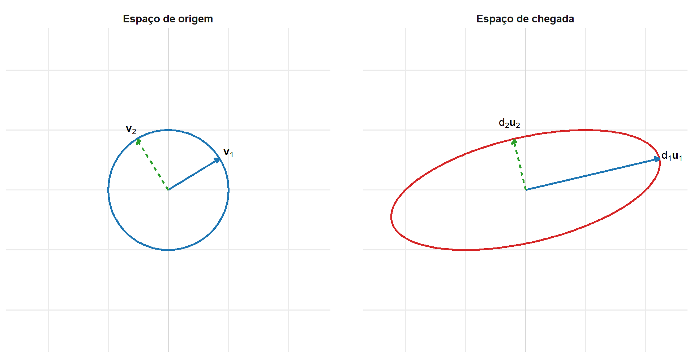

6 Decomposição em Valores Singulares
No capítulo anterior, a decomposição espectral foi utilizada para representar uma matriz simétrica real na forma
\[ \mathbf{A} = \mathbf{Q}_{\mathbf{A}} \boldsymbol{\Lambda}_{\mathbf{A}} \mathbf{Q}_{\mathbf{A}}^{\top}. \]
Essa representação identifica uma base ortonormal de autovetores na qual a transformação atua separadamente sobre cada coordenada. A decomposição espectral ortogonal, entretanto, depende da simetria da matriz e é formulada para operadores cujo domínio e contradomínio possuem a mesma dimensão.
Em Análise Multivariada, um dos objetos mais frequentes é a matriz de dados
\[ \mathbf{X} \in \mathbb{R}^{n\times p}, \]
cujas linhas representam observações e colunas representam variáveis. Em geral,
\[ n\neq p, \]
de modo que \(\mathbf{X}\) é retangular. Mesmo quando uma matriz é quadrada, ela pode não ser simétrica nem possuir uma base ortonormal de autovetores.
A Decomposição em Valores Singulares, ou SVD, fornece uma representação aplicável a qualquer matriz real. Para uma transformação
\[ T_{\mathbf{A}}: \mathbb{R}^{p} \longrightarrow \mathbb{R}^{q}, \qquad T_{\mathbf{A}}(\mathbf{x}) = \mathbf{A}\mathbf{x}, \]
a SVD relaciona duas bases ortonormais:
- uma base do espaço de origem \(\mathbb{R}^{p}\);
- uma base do espaço de chegada \(\mathbb{R}^{q}\).
A transformação associa determinadas direções dessas duas bases e multiplica os comprimentos por fatores não negativos denominados valores singulares.
Essa representação permite descrever:
- o posto da matriz;
- os espaços das linhas e das colunas;
- o núcleo e o núcleo da transposta;
- os fatores máximos e mínimos de alteração dos comprimentos;
- aproximações de posto reduzido;
- a pseudoinversa;
- soluções de mínimos quadrados.
A SVD também estabelece uma ligação entre os espaços das observações e das variáveis de uma matriz de dados. Essa dualidade será utilizada posteriormente na formulação de métodos de redução de dimensionalidade e de representação de estruturas matriciais.
6.1 Definição e formas da Decomposição em Valores Singulares
Considere uma matriz real
\[ \mathbf{A} \in \mathbb{R}^{q\times p}, \]
que representa uma transformação de \(\mathbb{R}^{p}\) em \(\mathbb{R}^{q}\).
A matriz pode ser retangular, quadrada, simétrica ou não simétrica. Nenhuma hipótese de invertibilidade ou de posto completo é necessária para a existência da SVD.
Teorema 6.1 (Existência da Decomposição em Valores Singulares) Para toda matriz
\[ \mathbf{A} \in \mathbb{R}^{q\times p}, \]
existem matrizes ortogonais
\[ \mathbf{U} \in \mathbb{R}^{q\times q} \]
e
\[ \mathbf{V} \in \mathbb{R}^{p\times p}, \]
e uma matriz diagonal retangular
\[ \mathbf{D} \in \mathbb{R}^{q\times p} \]
tais que
\[ \mathbf{A} = \mathbf{U} \mathbf{D} \mathbf{V}^{\top}. \]
As matrizes ortogonais satisfazem
\[ \mathbf{U}^{\top}\mathbf{U} = \mathbf{U}\mathbf{U}^{\top} = \mathbf{I}_q \]
e
\[ \mathbf{V}^{\top}\mathbf{V} = \mathbf{V}\mathbf{V}^{\top} = \mathbf{I}_p. \]
Os elementos diagonais não negativos de \(\mathbf{D}\) podem ser ordenados como
\[ d_1 \geq d_2 \geq \cdots \geq d_{\min(q,p)} \geq 0. \]
Esses elementos são os valores singulares de \(\mathbf{A}\). (Golub; Van Loan, 2013)
A demonstração será apresentada posteriormente, após a construção da SVD a partir das decomposições espectrais de \(\mathbf{A}^{\top}\mathbf{A}\) e \(\mathbf{A}\mathbf{A}^{\top}\).
Definição 6.1 (Matriz diagonal retangular) Seja
\[ \mathbf D \in \mathbb R^{q\times p} \]
e defina
\[ s = \min(q,p). \]
A matriz \(\mathbf D\) é denominada diagonal retangular quando existem escalares
\[ d_1,\ldots,d_s \]
tais que
\[ D_{ij} = \begin{cases} d_i, & i=j\leq s,\\ 0, & \text{caso contrário}. \end{cases} \]
Assim, apenas os elementos da diagonal principal podem ser diferentes de zero.
No bloco diagonal de ordem \(s\), essa condição pode ser escrita de forma compacta utilizando a delta de Kronecker:
\[ D_{ij} = d_i\delta_{ij}, \qquad i,j=1,\ldots,s. \]
Se
\[ q>p, \]
então \(s=p\) e \(\mathbf D\) possui \(q-p\) linhas nulas abaixo de sua parte diagonal.
Se
\[ p>q, \]
então \(s=q\) e \(\mathbf D\) possui \(p-q\) colunas nulas à direita de sua parte diagonal.
Por exemplo, quando \(q>p\),
\[ \mathbf{D} = \begin{bmatrix} d_1 & 0 & \cdots & 0\\ 0 & d_2 & \cdots & 0\\ \vdots & \vdots & \ddots & \vdots\\ 0 & 0 & \cdots & d_p\\ 0 & 0 & \cdots & 0\\ \vdots & \vdots & & \vdots\\ 0 & 0 & \cdots & 0 \end{bmatrix} \in \mathbb{R}^{q\times p}. \]
Nesse caso, a parte diagonal possui \(p=\min(q,p)\) elementos e as \(q-p\) linhas restantes são nulas.
Quando \(p>q\),
\[ \mathbf{D} = \begin{bmatrix} d_1 & 0 & \cdots & 0 & 0 & \cdots & 0\\ 0 & d_2 & \cdots & 0 & 0 & \cdots & 0\\ \vdots & \vdots & \ddots & \vdots & \vdots & & \vdots\\ 0 & 0 & \cdots & d_q & 0 & \cdots & 0 \end{bmatrix} \in \mathbb{R}^{q\times p}. \]
Agora, a parte diagonal possui \(q=\min(q,p)\) elementos e as \(p-q\) colunas restantes são nulas.
Como
\[ s = \min(q,p), \]
a matriz \(\mathbf D\) possui \(s\) posições diagonais. Se
\[ r = \operatorname{posto}(\mathbf A), \]
então exatamente \(r\) valores singulares são positivos. Ordenando-os de forma decrescente,
\[ d_1 \geq d_2 \geq \cdots \geq d_r > 0, \]
enquanto, quando \(r<s\),
\[ d_{r+1} = \cdots = d_s = 0. \]
Assim, o número de valores singulares positivos é exatamente o posto de \(\mathbf A\) e, consequentemente, a dimensão da imagem da transformação linear associada:
\[ r = \operatorname{posto}(\mathbf A) = \dim \left( \operatorname{Im}(T_{\mathbf A}) \right). \]
6.1.1 Vetores singulares
Escreva as matrizes ortogonais como
\[ \mathbf{U} = \begin{bmatrix} \mathbf{u}_1& \cdots& \mathbf{u}_q \end{bmatrix} \]
e
\[ \mathbf{V} = \begin{bmatrix} \mathbf{v}_1& \cdots& \mathbf{v}_p \end{bmatrix}. \]
Definição 6.2 (Valores e vetores singulares) Na decomposição
\[ \mathbf{A} = \mathbf{U} \mathbf{D} \mathbf{V}^{\top}, \]
os elementos diagonais não negativos
\[ d_1,\ldots,d_{\min(q,p)} \]
de \(\mathbf{D}\) são os valores singulares de \(\mathbf{A}\).
As colunas
\[ \mathbf{v}_1,\ldots,\mathbf{v}_p \]
de \(\mathbf{V}\) são os vetores singulares à direita. Elas formam uma base ortonormal de \(\mathbb{R}^{p}\).
As colunas
\[ \mathbf{u}_1,\ldots,\mathbf{u}_q \]
de \(\mathbf{U}\) são os vetores singulares à esquerda. Elas formam uma base ortonormal de \(\mathbb{R}^{q}\).
Para cada valor singular positivo,
\[ d_j>0, \qquad j=1,\ldots,r, \]
os vetores singulares correspondentes satisfazem
\[ \mathbf{A}\mathbf{v}_j = d_j\mathbf{u}_j \]
e
\[ \mathbf{A}^{\top}\mathbf{u}_j = d_j\mathbf{v}_j. \]
A primeira igualdade mostra como a transformação associa uma direção no espaço de origem a uma direção no espaço de chegada:
\[ \mathbf{v}_j \overset{\mathbf{A}}{\longmapsto} d_j\mathbf{u}_j. \]
Como
\[ \|\mathbf{v}_j\| = \|\mathbf{u}_j\| = 1, \]
tem-se
\[ \left\| \mathbf{A}\mathbf{v}_j \right\| = d_j. \]
Portanto, \(d_j\) mede o fator de alteração do comprimento na direção \(\mathbf{v}_j\):
- se \(d_j>1\), ocorre ampliação;
- se \(0<d_j<1\), ocorre contração;
- se \(d_j=1\), o comprimento é preservado;
- se \(d_j=0\), a direção correspondente é eliminada.
Os valores singulares são sempre não negativos. Diferentemente dos autovalores, eles não representam inversões de sentido. Possíveis mudanças de orientação ficam incorporadas às matrizes ortogonais \(\mathbf{U}\) e \(\mathbf{V}\).
As colunas de \(\mathbf{V}\) correspondentes às colunas nulas de \(\mathbf{D}\) são transformadas no vetor nulo. Elas pertencem ao núcleo de \(\mathbf{A}\). De maneira análoga, colunas de \(\mathbf{U}\) que correspondem às linhas nulas de \(\mathbf{D}\) pertencem ao núcleo de \(\mathbf{A}^{\top}\). Essas relações serão formalizadas na seção dedicada aos espaços fundamentais.
6.1.2 Interpretação como composição de transformações
Para qualquer
\[ \mathbf{x} \in \mathbb{R}^{p}, \]
a ação de \(\mathbf{A}\) pode ser escrita como
\[ \mathbf{A}\mathbf{x} = \mathbf{U} \mathbf{D} \mathbf{V}^{\top} \mathbf{x}. \]
Essa transformação pode ser decomposta em três etapas:
\[ \mathbf{x} \longmapsto \mathbf{V}^{\top}\mathbf{x} \longmapsto \mathbf{D}\mathbf{V}^{\top}\mathbf{x} \longmapsto \mathbf{U}\mathbf{D}\mathbf{V}^{\top}\mathbf{x}. \]
Na primeira etapa,
\[ \mathbf{z} = \mathbf{V}^{\top}\mathbf{x} \]
fornece as coordenadas de \(\mathbf{x}\) na base ortonormal dos vetores singulares à direita,
\[ \mathcal{B}_{V} = \{ \mathbf{v}_1,\ldots,\mathbf{v}_p \}. \]
Assim,
\[ \mathbf{z} = [\mathbf{x}]_{\mathcal{B}_{V}}. \]
Na segunda etapa,
\[ \mathbf{D}\mathbf{z} \]
multiplica separadamente as coordenadas pelas entradas diagonais de \(\mathbf{D}\). Como \(\mathbf{D}\in\mathbb{R}^{q\times p}\) pode ser retangular, essa etapa também realiza a passagem entre as dimensões do domínio e do contradomínio.
Na terceira etapa, \(\mathbf{U}\) reconstrói o resultado nas coordenadas canônicas de \(\mathbb{R}^q\) a partir da base ortonormal
\[ \mathcal{B}_{U} = \{ \mathbf{u}_1,\ldots,\mathbf{u}_q \}. \]
Como \(\mathbf{U}\) e \(\mathbf{V}\) são ortogonais, essas duas matrizes preservam normas, distâncias, ângulos e produtos internos. As alterações de comprimento e a possível redução de dimensão são determinadas por \(\mathbf{D}\).
6.1.3 SVD completa
Definição 6.3 (SVD completa) A representação
\[ \mathbf{A} = \mathbf{U} \mathbf{D} \mathbf{V}^{\top}, \]
com
\[ \mathbf{U} \in \mathbb{R}^{q\times q}, \qquad \mathbf{D} \in \mathbb{R}^{q\times p} \]
e
\[ \mathbf{V} \in \mathbb{R}^{p\times p}, \]
é denominada SVD completa de \(\mathbf{A}\).
As dimensões e os papéis dos fatores são apresentados na Tabela 6.1.
| Matriz | Dimensão | Papel |
|---|---|---|
| \(\mathbf{U}\) | \(q\times q\) | Base ortonormal do espaço de chegada |
| \(\mathbf{D}\) | \(q\times p\) | Matriz diagonal retangular dos valores singulares |
| \(\mathbf{V}\) | \(p\times p\) | Base ortonormal do espaço de origem |
A SVD completa descreve bases ortonormais de todo o espaço de origem e de todo o espaço de chegada. Por isso, ela contém também as direções associadas ao núcleo de \(\mathbf{A}\) e ao núcleo de \(\mathbf{A}^{\top}\).
6.1.4 SVD compacta
Quando
\[ r = \operatorname{posto}(\mathbf{A}), \]
defina
\[ \mathbf{U}_r = \begin{bmatrix} \mathbf{u}_1& \cdots& \mathbf{u}_r \end{bmatrix} \in \mathbb{R}^{q\times r}, \]
\[ \mathbf{V}_r = \begin{bmatrix} \mathbf{v}_1& \cdots& \mathbf{v}_r \end{bmatrix} \in \mathbb{R}^{p\times r} \]
e
\[ \mathbf{D}_r = \operatorname{diag} \left( d_1,\ldots,d_r \right) \in \mathbb{R}^{r\times r}. \]
Definição 6.4 (SVD compacta) A representação
\[ \mathbf{A} = \mathbf{U}_r \mathbf{D}_r \mathbf{V}_r^{\top}, \]
formada somente pelos valores singulares positivos e por seus vetores singulares correspondentes, é denominada SVD compacta de \(\mathbf{A}\).
A SVD compacta reconstrói exatamente a matriz original. Ela não é uma aproximação.
As colunas de \(\mathbf{U}_r\) e de \(\mathbf{V}_r\) são ortonormais:
\[ \mathbf{U}_r^{\top} \mathbf{U}_r = \mathbf{I}_r \]
e
\[ \mathbf{V}_r^{\top} \mathbf{V}_r = \mathbf{I}_r. \]
Quando \(r<q\), tem-se
\[ \mathbf{U}_r \mathbf{U}_r^{\top} \neq \mathbf{I}_q. \]
Quando \(r<p\),
\[ \mathbf{V}_r \mathbf{V}_r^{\top} \neq \mathbf{I}_p. \]
Esses produtos são projetores ortogonais sobre os subespaços gerados pelas colunas das matrizes correspondentes. Sua interpretação será retomada na seção sobre os espaços fundamentais.
As dimensões da SVD compacta são apresentadas na Tabela 6.2.
| Matriz | Dimensão | Conteúdo |
|---|---|---|
| \(\mathbf{U}_r\) | \(q\times r\) | Vetores singulares à esquerda associados aos valores positivos |
| \(\mathbf{D}_r\) | \(r\times r\) | Valores singulares positivos |
| \(\mathbf{V}_r\) | \(p\times r\) | Vetores singulares à direita associados aos valores positivos |
A forma compacta contém toda a informação necessária para reconstruir \(\mathbf{A}\) e utiliza somente as direções que participam efetivamente da transformação. A forma completa acrescenta bases ortonormais para os complementos dessas direções.
6.1.5 SVD compacta e SVD truncada
A SVD compacta e a SVD truncada representam objetos diferentes.
A SVD compacta conserva todos os \(r\) valores singulares positivos e fornece a representação exata
\[ \mathbf A = \mathbf U_r \mathbf D_r \mathbf V_r^{\top}. \]
A SVD truncada conserva apenas parte desses componentes singulares.
Para
\[ 1\leq k<r, \]
defina
\[ \mathbf U_k = \begin{bmatrix} \mathbf u_1& \cdots& \mathbf u_k \end{bmatrix} \in \mathbb R^{q\times k}, \]
\[ \mathbf D_k = \operatorname{diag} \left( d_1,\ldots,d_k \right) \in \mathbb R^{k\times k} \]
e
\[ \mathbf V_k = \begin{bmatrix} \mathbf v_1& \cdots& \mathbf v_k \end{bmatrix} \in \mathbb R^{p\times k}. \]
Definição 6.5 (SVD truncada) Seja
\[ \mathbf A = \mathbf U_r \mathbf D_r \mathbf V_r^{\top} \]
a SVD compacta de uma matriz de posto \(r\).
Para
\[ 1\leq k<r, \]
a matriz
\[ \mathbf A_k = \mathbf U_k \mathbf D_k \mathbf V_k^{\top} \]
é denominada SVD truncada de posto \(k\) de \(\mathbf A\).
Como \(k<r\), a SVD truncada descarta componentes associados a valores singulares positivos. Portanto, em geral,
\[ \mathbf A_k \neq \mathbf A. \]
A matriz \(\mathbf A_k\) possui posto \(k\) e constitui uma aproximação de \(\mathbf A\). As propriedades de otimalidade dessa aproximação e os erros decorrentes do truncamento serão estudados posteriormente.
A terminologia empregada para as diferentes formas da SVD não é uniforme na literatura. Dependendo da referência, aparecem expressões como SVD reduzida, SVD fina (thin SVD), SVD econômica (economy-sized SVD) e SVD compacta, nem sempre com exatamente o mesmo significado (Demmel, 2000; Driscoll; Braun, 2022; Sidi, 2017).
Para evitar ambiguidades, neste capítulo serão utilizadas as seguintes convenções:
- SVD completa, para a representação que utiliza bases ortonormais completas dos espaços de origem e de chegada;
- SVD compacta, para a representação exata que conserva somente os \(r=\operatorname{posto}(\mathbf A)\) valores singulares positivos e os vetores singulares correspondentes;
- SVD truncada, para a aproximação que conserva apenas os \(k<r\) maiores valores singulares.
Exemplo 6.1 (SVD completa, compacta e truncada de uma matriz retangular) Considere a matriz
\[ \mathbf A = \begin{bmatrix} 2&1&0\\ 1&2&1\\ 0&1&2\\ 2&0&1\\ 1&1&1 \end{bmatrix} \in \mathbb R^{5\times3}. \]
A matriz possui posto
\[ r=3 \]
e seus valores singulares, em ordem decrescente, são aproximadamente
\[ d_1=4.1780, \qquad d_2=2.1600, \qquad d_3=1.3706. \]
Os valores apresentados a seguir estão arredondados a quatro casas decimais. Por esse motivo, as decomposições numéricas devem ser interpretadas a menos de arredondamento.
SVD completa
Uma SVD completa de \(\mathbf A\) é
\[ \mathbf A \approx \mathbf U \mathbf D \mathbf V^{\top}, \]
em que
\[ \mathbf U \approx \begin{bmatrix} 0.4449 & 0.5397 & 0.3147 & -0.6014 & -0.2239\\ 0.5461 & -0.2239 & 0.5466 & 0.5614 & -0.1943\\ 0.3803 & -0.6954 & -0.3419 & -0.4142 & -0.2887\\ 0.4348 & 0.4111 & -0.6965 & 0.3743 & -0.1295\\ 0.4126 & -0.0779 & -0.0136 & -0.1073 & 0.9011 \end{bmatrix} \in \mathbb R^{5\times5}, \]
\[ \mathbf D \approx \begin{bmatrix} 4.1780&0&0\\ 0&2.1600&0\\ 0&0&1.3706\\ 0&0&0\\ 0&0&0 \end{bmatrix} \in \mathbb R^{5\times3}, \]
e
\[ \mathbf V \approx \begin{bmatrix} 0.6506 & 0.7406 & -0.1682\\ 0.5576 & -0.3155 & 0.7678\\ 0.5156 & -0.5933 & -0.6182 \end{bmatrix} \in \mathbb R^{3\times3}. \]
As colunas de \(\mathbf U\) são os vetores singulares à esquerda,
\[ \mathbf u_1,\ldots,\mathbf u_5, \]
e as colunas de \(\mathbf V\) são os vetores singulares à direita,
\[ \mathbf v_1,\mathbf v_2,\mathbf v_3. \]
Os três primeiros pares de vetores singulares estão associados aos três valores singulares positivos:
\[ (\mathbf u_1,\mathbf v_1) \longleftrightarrow d_1=4.1780, \]
\[ (\mathbf u_2,\mathbf v_2) \longleftrightarrow d_2=2.1600, \]
e
\[ (\mathbf u_3,\mathbf v_3) \longleftrightarrow d_3=1.3706. \]
As duas últimas colunas de \(\mathbf U\) completam uma base ortonormal de \(\mathbb R^5\). Elas correspondem às duas linhas nulas de \(\mathbf D\).
SVD compacta
Como
\[ r=\operatorname{posto}(\mathbf A)=3, \]
a SVD compacta conserva somente os três valores singulares positivos e os vetores singulares correspondentes:
\[ \mathbf A \approx \mathbf U_3 \mathbf D_3 \mathbf V_3^{\top}, \]
com
\[ \mathbf U_3 \approx \begin{bmatrix} 0.4449 & 0.5397 & 0.3147\\ 0.5461 & -0.2239 & 0.5466\\ 0.3803 & -0.6954 & -0.3419\\ 0.4348 & 0.4111 & -0.6965\\ 0.4126 & -0.0779 & -0.0136 \end{bmatrix} \in \mathbb R^{5\times3}, \]
\[ \mathbf D_3 \approx \begin{bmatrix} 4.1780&0&0\\ 0&2.1600&0\\ 0&0&1.3706 \end{bmatrix} \in \mathbb R^{3\times3}, \]
e
\[ \mathbf V_3 = \mathbf V \approx \begin{bmatrix} 0.6506 & 0.7406 & -0.1682\\ 0.5576 & -0.3155 & 0.7678\\ 0.5156 & -0.5933 & -0.6182 \end{bmatrix} \in \mathbb R^{3\times3}. \]
A representação continua sendo exata antes do arredondamento numérico. A SVD compacta elimina apenas as duas colunas adicionais de \(\mathbf U\) e as duas linhas nulas correspondentes de \(\mathbf D\).
Como
\[ r=p=3, \]
todos os vetores singulares à direita participam da SVD compacta. Por isso,
\[ \mathbf V_3=\mathbf V. \]
SVD truncada de posto \(2\)
Considere agora a conservação apenas dos dois maiores valores singulares,
\[ d_1=4.1780 \qquad\text{e}\qquad d_2=2.1600. \]
A SVD truncada de posto \(2\) utiliza
\[ \mathbf U_2 \approx \begin{bmatrix} 0.4449 & 0.5397\\ 0.5461 & -0.2239\\ 0.3803 & -0.6954\\ 0.4348 & 0.4111\\ 0.4126 & -0.0779 \end{bmatrix} \in \mathbb R^{5\times2}, \]
\[ \mathbf D_2 \approx \begin{bmatrix} 4.1780&0\\ 0&2.1600 \end{bmatrix} \in \mathbb R^{2\times2}, \]
e
\[ \mathbf V_2 \approx \begin{bmatrix} 0.6506 & 0.7406\\ 0.5576 & -0.3155\\ 0.5156 & -0.5933 \end{bmatrix} \in \mathbb R^{3\times2}. \]
Assim,
\[ \mathbf A_2 = \mathbf U_2 \mathbf D_2 \mathbf V_2^{\top} \]
é uma aproximação de posto \(2\) da matriz original. Numericamente,
\[ \mathbf A_2 \approx \begin{bmatrix} 2.0726 & 0.6688 & 0.2667\\ 1.1260 & 1.4248 & 1.4631\\ -0.0788 & 1.3598 & 1.7103\\ 1.8394 & 0.7330 & 0.4098\\ 0.9969 & 1.0143 & 0.9885 \end{bmatrix}. \]
Como o terceiro valor singular positivo foi descartado,
\[ \mathbf A_2 \neq \mathbf A. \]
As três formas podem ser comparadas pelas dimensões de seus fatores:
| Forma | Matriz à esquerda | Matriz diagonal | Matriz à direita | Valores singulares mantidos | Resultado |
|---|---|---|---|---|---|
| SVD completa | \(\mathbf U:5\times5\) | \(\mathbf D:5\times3\) | \(\mathbf V:3\times3\) | \(d_1,d_2,d_3\) | Exato |
| SVD compacta | \(\mathbf U_3:5\times3\) | \(\mathbf D_3:3\times3\) | \(\mathbf V_3:3\times3\) | \(d_1,d_2,d_3\) | Exato |
| SVD truncada | \(\mathbf U_2:5\times2\) | \(\mathbf D_2:2\times2\) | \(\mathbf V_2:3\times2\) | \(d_1,d_2\) | Aproximado |
A SVD completa apresenta bases ortonormais completas dos espaços de origem e de chegada. A SVD compacta mantém somente as direções associadas aos valores singulares positivos, sem perder informação necessária à reconstrução de \(\mathbf A\). A SVD truncada conserva apenas parte dessas direções e, por isso, produz uma aproximação de posto menor.
6.1.6 Aprofundamento: não unicidade dos vetores singulares
Os valores singulares de uma matriz são determinados de maneira única quando apresentados em ordem decrescente e consideradas suas multiplicidades. Os vetores singulares, entretanto, podem não ser únicos.
Para cada par associado a um valor singular positivo, a substituição simultânea
\[ \mathbf{u}_j \longmapsto -\mathbf{u}_j \]
e
\[ \mathbf{v}_j \longmapsto -\mathbf{v}_j \]
não altera a parcela
\[ d_j \mathbf{u}_j \mathbf{v}_j^{\top}, \]
pois
\[ d_j \left( -\mathbf{u}_j \right) \left( -\mathbf{v}_j \right)^{\top} = d_j \mathbf{u}_j \mathbf{v}_j^{\top}. \]
Assim, cada par singular associado a um valor positivo é determinado apenas a menos de uma mudança simultânea de sinal.
Considere agora um valor singular positivo \(d\) com multiplicidade \(m\). Se
\[ \mathbf{U}_{d} \in \mathbb{R}^{q\times m} \]
e
\[ \mathbf{V}_{d} \in \mathbb{R}^{p\times m} \]
contêm bases ortonormais dos subespaços singulares correspondentes, a contribuição desse valor é
\[ d \mathbf{U}_{d} \mathbf{V}_{d}^{\top}. \]
Para qualquer matriz ortogonal
\[ \mathbf{R} \in \mathbb{R}^{m\times m}, \]
tem-se
\[ \begin{aligned} d \left( \mathbf{U}_{d}\mathbf{R} \right) \left( \mathbf{V}_{d}\mathbf{R} \right)^{\top} &= d \mathbf{U}_{d} \mathbf{R} \mathbf{R}^{\top} \mathbf{V}_{d}^{\top}\\ &= d \mathbf{U}_{d} \mathbf{V}_{d}^{\top}. \end{aligned} \]
Portanto, valores singulares positivos repetidos permitem rotações ortogonais simultâneas das bases à esquerda e à direita.
A situação é diferente nos subespaços associados ao valor singular zero. As colunas de \(\mathbf{V}_0\) formam uma base de
\[ \mathcal{N}(\mathbf{A}), \]
enquanto as colunas de \(\mathbf{U}_0\) formam uma base de
\[ \mathcal{N} \left( \mathbf{A}^{\top} \right). \]
Essas bases completam espaços diferentes e podem ser escolhidas independentemente, pois suas parcelas são multiplicadas por zero na SVD completa.
Portanto:
- os valores singulares são propriedades da matriz;
- os subespaços singulares associados aos valores positivos são propriedades da matriz;
- os núcleos de \(\mathbf{A}\) e de \(\mathbf{A}^{\top}\) são propriedades da matriz;
- sinais e bases ortonormais específicas dentro desses subespaços dependem da representação escolhida.
A existência da SVD e as relações entre os dois conjuntos de vetores singulares decorrem das decomposições espectrais das matrizes simétricas
\[ \mathbf{A}^{\top}\mathbf{A} \qquad \text{e} \qquad \mathbf{A}\mathbf{A}^{\top}. \]
A próxima seção constrói essa relação e demonstra por que os quadrados dos valores singulares aparecem como autovalores dessas duas matrizes.
6.2 Construção da SVD e relação com a decomposição espectral
A existência da SVD decorre das propriedades das duas matrizes de Gram associadas a \(\mathbf{A}\):
\[ \mathbf{A}^{\top}\mathbf{A} \qquad \text{e} \qquad \mathbf{A}\mathbf{A}^{\top}. \]
Essas matrizes já apareceram no estudo dos espaços das variáveis e das observações. A SVD mostra agora que seus espectros estão diretamente relacionados e que essa relação permite construir bases ortonormais adaptadas à transformação
\[ T_{\mathbf{A}}:\mathbb{R}^p\to\mathbb{R}^q. \] Para
\[ \mathbf{A} \in \mathbb{R}^{q\times p}, \]
tem-se
\[ \mathbf{A}^{\top}\mathbf{A} \in \mathbb{R}^{p\times p} \]
e
\[ \mathbf{A}\mathbf{A}^{\top} \in \mathbb{R}^{q\times q}. \]
Mesmo que \(\mathbf{A}\) seja retangular ou não simétrica, essas duas matrizes são quadradas, simétricas e semidefinidas positivas.
6.2.1 Propriedades das matrizes de Gram associadas
As matrizes
\[ \mathbf A^{\top}\mathbf A \]
e
\[ \mathbf A\mathbf A^{\top} \]
são matrizes de Gram associadas, respectivamente, às colunas e às linhas de \(\mathbf A\).
Pela Proposição 3.9, ambas são simétricas e semidefinidas positivas. Portanto,
\[ \mathbf A^{\top}\mathbf A \succeq \mathbf0 \]
e
\[ \mathbf A\mathbf A^{\top} \succeq \mathbf0. \]
Além disso,
\[ \operatorname{posto} \left( \mathbf A^{\top}\mathbf A \right) = \operatorname{posto}(\mathbf A) \]
e
\[ \operatorname{posto} \left( \mathbf A\mathbf A^{\top} \right) = \operatorname{posto}(\mathbf A). \]
Assim, se
\[ r = \operatorname{posto}(\mathbf A), \]
cada uma dessas matrizes possui exatamente \(r\) autovalores positivos, considerando suas multiplicidades.
Como ambas são simétricas, o Teorema 5.4 garante a existência de bases ortonormais de autovetores. Como também são semidefinidas positivas, todos os seus autovalores são não negativos.
Proposição 6.1 (Espectros das matrizes de Gram associadas) Seja
\[ \mathbf{A} \in \mathbb{R}^{q\times p} \]
com posto
\[ r = \operatorname{posto}(\mathbf{A}). \]
Então:
as matrizes
\[ \mathbf{A}^{\top}\mathbf{A} \]
e
\[ \mathbf{A}\mathbf{A}^{\top} \]
possuem os mesmos \(r\) autovalores positivos, incluindo suas multiplicidades;
se esses autovalores são ordenados como
\[ \lambda_1 \geq \cdots \geq \lambda_r > 0, \]
podem-se definir
\[ d_j = \sqrt{\lambda_j}, \qquad j=1,\ldots,r; \]
os núcleos satisfazem
\[ \mathcal{N} \left( \mathbf{A}^{\top}\mathbf{A} \right) = \mathcal{N}(\mathbf{A}) \]
e
\[ \mathcal{N} \left( \mathbf{A}\mathbf{A}^{\top} \right) = \mathcal{N} \left( \mathbf{A}^{\top} \right). \]
Comprovação. Considere inicialmente
\[ \mathbf{x} \in \mathcal{N}(\mathbf{A}). \]
Então,
\[ \mathbf{A}\mathbf{x} = \mathbf{0}, \]
e, consequentemente,
\[ \mathbf{A}^{\top}\mathbf{A}\mathbf{x} = \mathbf{0}. \]
Logo,
\[ \mathcal{N}(\mathbf{A}) \subseteq \mathcal{N} \left( \mathbf{A}^{\top}\mathbf{A} \right). \]
Reciprocamente, se
\[ \mathbf{x} \in \mathcal{N} \left( \mathbf{A}^{\top}\mathbf{A} \right), \]
então
\[ \mathbf{A}^{\top} \mathbf{A}\mathbf{x} = \mathbf{0}. \]
Multiplicando à esquerda por \(\mathbf{x}^{\top}\),
\[ \begin{aligned} 0 &= \mathbf{x}^{\top} \mathbf{A}^{\top} \mathbf{A} \mathbf{x}\\ &= \left\| \mathbf{A}\mathbf{x} \right\|^2. \end{aligned} \]
Portanto,
\[ \mathbf{A}\mathbf{x} = \mathbf{0}, \]
e
\[ \mathcal{N} \left( \mathbf{A}^{\top}\mathbf{A} \right) \subseteq \mathcal{N}(\mathbf{A}). \]
Assim,
\[ \mathcal{N} \left( \mathbf{A}^{\top}\mathbf{A} \right) = \mathcal{N}(\mathbf{A}). \]
O mesmo argumento, aplicado a \(\mathbf{A}^{\top}\), fornece
\[ \mathcal{N} \left( \mathbf{A}\mathbf{A}^{\top} \right) = \mathcal{N} \left( \mathbf{A}^{\top} \right). \]
Considere agora um autovalor positivo \(\lambda\) de
\[ \mathbf{A}^{\top}\mathbf{A} \]
e um autovetor unitário \(\mathbf{v}\) associado:
\[ \mathbf{A}^{\top} \mathbf{A}\mathbf{v} = \lambda\mathbf{v}. \]
Como \(\lambda>0\), defina
\[ \mathbf{u} = \frac{ \mathbf{A}\mathbf{v} }{ \sqrt{\lambda} }. \]
Esse vetor possui norma unitária, pois
\[ \begin{aligned} \mathbf{u}^{\top}\mathbf{u} &= \frac{ \mathbf{v}^{\top} \mathbf{A}^{\top} \mathbf{A}\mathbf{v} }{ \lambda }\\ &= \frac{ \lambda \mathbf{v}^{\top}\mathbf{v} }{ \lambda }\\ &= 1. \end{aligned} \]
Além disso,
\[ \begin{aligned} \mathbf{A}\mathbf{A}^{\top}\mathbf{u} &= \frac{ \mathbf{A}\mathbf{A}^{\top} \mathbf{A}\mathbf{v} }{ \sqrt{\lambda} }\\ &= \frac{ \mathbf{A} \left( \mathbf{A}^{\top}\mathbf{A}\mathbf{v} \right) }{ \sqrt{\lambda} }\\ &= \frac{ \mathbf{A} \left( \lambda\mathbf{v} \right) }{ \sqrt{\lambda} }\\ &= \lambda\mathbf{u}. \end{aligned} \]
Portanto, todo autovalor positivo de
\[ \mathbf{A}^{\top}\mathbf{A} \]
também é autovalor de
\[ \mathbf{A}\mathbf{A}^{\top}. \]
O argumento inverso é obtido começando por um autovetor de
\[ \mathbf{A}\mathbf{A}^{\top} \]
e definindo
\[ \mathbf{v} = \frac{ \mathbf{A}^{\top}\mathbf{u} }{ \sqrt{\lambda} }. \]
Para \(\lambda>0\), as aplicações
\[ \mathbf{v} \longmapsto \frac{\mathbf{A}\mathbf{v}}{\sqrt{\lambda}} \]
e
\[ \mathbf{u} \longmapsto \frac{\mathbf{A}^{\top}\mathbf{u}}{\sqrt{\lambda}} \]
estabelecem aplicações lineares inversas entre o autoespaço de \(\mathbf{A}^{\top}\mathbf{A}\) associado a \(\lambda\) e o autoespaço de \(\mathbf{A}\mathbf{A}^{\top}\) associado ao mesmo autovalor. Portanto, esses autoespaços possuem a mesma dimensão e as multiplicidades dos autovalores positivos coincidem.
Como
\[ \operatorname{posto} \left( \mathbf{A}^{\top}\mathbf{A} \right) = \operatorname{posto}(\mathbf{A}) = r, \]
existem exatamente \(r\) autovalores positivos. O mesmo ocorre para
\[ \mathbf{A}\mathbf{A}^{\top}. \]
Definindo
\[ d_j = \sqrt{\lambda_j}, \qquad j=1,\ldots,r, \]
obtêm-se \(r\) números positivos associados aos autovalores positivos comuns às duas matrizes de Gram. A construção a seguir mostrará que esses números são precisamente os valores singulares positivos de \(\mathbf A\).
As duas matrizes podem possuir quantidades diferentes de autovalores nulos. A matriz
\[ \mathbf{A}^{\top}\mathbf{A} \]
tem ordem \(p\), enquanto
\[ \mathbf{A}\mathbf{A}^{\top} \]
tem ordem \(q\). Entretanto, seus espectros positivos coincidem.
6.2.2 Construção dos pares singulares
Suponha inicialmente que
\[ \mathbf A \neq \mathbf0. \]
Então,
\[ r = \operatorname{posto}(\mathbf A) \geq 1. \]
O caso
\[ \mathbf A = \mathbf0 \]
será tratado diretamente na demonstração do Teorema 6.1.
A construção começa pela matriz
\[ \mathbf{A}^{\top}\mathbf{A}, \]
que atua em
\[ \mathbb{R}^{p}, \]
o domínio da transformação
\[ T_{\mathbf A}: \mathbb{R}^{p} \longrightarrow \mathbb{R}^{q}. \]
Seus autovetores associados aos autovalores positivos determinarão os vetores singulares à direita. A aplicação de \(\mathbf A\) a essas direções, seguida de normalização, produzirá os vetores singulares à esquerda em \(\mathbb R^q\).
Considere a decomposição espectral
\[ \mathbf{A}^{\top}\mathbf{A} = \mathbf{V} \boldsymbol{\Lambda}_{V} \mathbf{V}^{\top}, \]
em que
\[ \mathbf{V} = \begin{bmatrix} \mathbf{v}_1& \cdots& \mathbf{v}_p \end{bmatrix} \]
é ortogonal.
Ordene os autovalores de modo que
\[ \lambda_1 \geq \lambda_2 \geq \cdots \geq \lambda_r > 0 \]
e
\[ \lambda_{r+1} = \cdots = \lambda_p = 0. \]
Defina
\[ d_j = \sqrt{\lambda_j}, \qquad j=1,\ldots,r. \]
Particione a matriz de autovetores como
\[ \mathbf V = \begin{bmatrix} \mathbf V_r& \mathbf V_0 \end{bmatrix}, \]
em que
\[ \mathbf V_r = \begin{bmatrix} \mathbf v_1& \cdots& \mathbf v_r \end{bmatrix} \]
contém os autovetores associados aos autovalores positivos e
\[ \mathbf V_0 = \begin{bmatrix} \mathbf v_{r+1}& \cdots& \mathbf v_p \end{bmatrix} \]
contém os autovetores associados ao autovalor zero.
Pela Proposição 6.1,
\[ \mathcal N \left( \mathbf A^{\top}\mathbf A \right) = \mathcal N(\mathbf A). \]
Portanto, as colunas de \(\mathbf V_0\) formam uma base ortonormal de
\[ \mathcal N(\mathbf A), \]
enquanto as colunas de \(\mathbf V_r\) formam uma base ortonormal de
\[ \mathcal N(\mathbf A)^{\perp} = \mathcal C(\mathbf A^{\top}). \]
Proposição 6.2 (Construção dos pares singulares positivos) Para cada
\[ j=1,\ldots,r, \]
defina
\[ \mathbf{u}_j = \frac{ \mathbf{A}\mathbf{v}_j }{ d_j }. \]
Então:
os vetores
\[ \mathbf u_1,\ldots,\mathbf u_r \]
são ortonormais;
para cada \(j=1,\ldots,r\),
\[ \mathbf A\mathbf v_j = d_j\mathbf u_j \]
e
\[ \mathbf A^{\top}\mathbf u_j = d_j\mathbf v_j; \]
os vetores
\[ \mathbf u_1,\ldots,\mathbf u_r \]
formam uma base ortonormal de
\[ \mathcal C(\mathbf A). \]
Comprovação. Para \(i,j\leq r\),
\[ \begin{aligned} \mathbf{u}_i^{\top}\mathbf{u}_j &= \frac{ \mathbf{v}_i^{\top} \mathbf{A}^{\top} \mathbf{A} \mathbf{v}_j }{ d_id_j }\\ &= \frac{ d_j^2 \mathbf{v}_i^{\top}\mathbf{v}_j }{ d_id_j }\\ &= \frac{d_j}{d_i} \mathbf{v}_i^{\top}\mathbf{v}_j. \end{aligned} \]
Como os vetores
\[ \mathbf v_1,\ldots,\mathbf v_r \]
são ortonormais,
\[ \mathbf{v}_i^{\top}\mathbf{v}_j = \begin{cases} 1, & i=j,\\ 0, & i\neq j. \end{cases} \]
Logo,
\[ \mathbf{u}_i^{\top}\mathbf{u}_j = \begin{cases} 1, & i=j,\\ 0, & i\neq j. \end{cases} \]
Portanto,
\[ \mathbf u_1,\ldots,\mathbf u_r \]
são ortonormais.
Pela definição de \(\mathbf u_j\),
\[ \mathbf A\mathbf v_j = d_j\mathbf u_j. \]
Além disso,
\[ \begin{aligned} \mathbf A^{\top}\mathbf u_j &= \frac{ \mathbf A^{\top}\mathbf A\mathbf v_j }{ d_j }\\ &= \frac{ d_j^2\mathbf v_j }{ d_j }\\ &= d_j\mathbf v_j. \end{aligned} \]
Cada \(\mathbf u_j\) pertence a
\[ \mathcal C(\mathbf A), \]
pois
\[ \mathbf u_j = \frac{1}{d_j} \mathbf A\mathbf v_j. \]
Como existem
\[ r = \operatorname{posto}(\mathbf A) = \dim\mathcal C(\mathbf A) \]
vetores ortonormais desse tipo, eles formam uma base ortonormal de
\[ \mathcal C(\mathbf A). \]
A construção estabelece uma correspondência entre duas direções ortonormais:
\[ \mathbf v_j \in \mathcal C(\mathbf A^{\top}) \subseteq \mathbb R^p \quad \xrightarrow{\;\mathbf A\;} \quad d_j\mathbf u_j \in \mathcal C(\mathbf A) \subseteq \mathbb R^q, \]
e
\[ \mathbf u_j \in \mathcal C(\mathbf A) \subseteq \mathbb R^q \quad \xrightarrow{\;\mathbf A^{\top}\;} \quad d_j\mathbf v_j \in \mathcal C(\mathbf A^{\top}) \subseteq \mathbb R^p. \]
Assim, \(\mathbf v_j\) é uma direção singular à direita, \(\mathbf u_j\) é a direção singular à esquerda correspondente e \(d_j\) é o fator de escalonamento que relaciona as duas.
6.2.3 Construção da SVD compacta
Reúna os vetores singulares à esquerda em
\[ \mathbf U_r = \begin{bmatrix} \mathbf u_1& \cdots& \mathbf u_r \end{bmatrix} \]
e defina
\[ \mathbf D_r = \operatorname{diag} \left( d_1,\ldots,d_r \right). \]
As relações
\[ \mathbf A\mathbf v_j = d_j\mathbf u_j, \qquad j=1,\ldots,r, \]
podem ser escritas simultaneamente como
\[ \mathbf A\mathbf V_r = \mathbf U_r\mathbf D_r. \]
Proposição 6.3 (SVD compacta obtida dos pares singulares) Com as matrizes \(\mathbf U_r\), \(\mathbf D_r\) e \(\mathbf V_r\) definidas anteriormente,
\[ \mathbf A = \mathbf U_r \mathbf D_r \mathbf V_r^{\top}. \]
Portanto,
\[ \mathbf A = \mathbf U_r \mathbf D_r \mathbf V_r^{\top} \]
é a SVD compacta de \(\mathbf A\), e
\[ d_1,\ldots,d_r \]
são seus valores singulares positivos.
Comprovação. Como
\[ \mathbf V = \begin{bmatrix} \mathbf V_r& \mathbf V_0 \end{bmatrix} \]
é ortogonal,
\[ \mathbf I_p = \mathbf V_r\mathbf V_r^{\top} + \mathbf V_0\mathbf V_0^{\top}. \]
As colunas de \(\mathbf V_0\) pertencem a
\[ \mathcal N(\mathbf A), \]
de modo que
\[ \mathbf A\mathbf V_0 = \mathbf0. \]
Assim,
\[ \begin{aligned} \mathbf A &= \mathbf A\mathbf I_p\\ &= \mathbf A \left( \mathbf V_r\mathbf V_r^{\top} + \mathbf V_0\mathbf V_0^{\top} \right)\\ &= \mathbf A\mathbf V_r\mathbf V_r^{\top}\\ &= \mathbf U_r \mathbf D_r \mathbf V_r^{\top}. \end{aligned} \]
A SVD compacta utiliza exatamente as direções que participam da transformação:
- as colunas de \(\mathbf V_r\) formam uma base ortonormal de \(\mathcal C(\mathbf A^{\top})\);
- \(\mathbf D_r\) contém os fatores de escalonamento positivos;
- as colunas de \(\mathbf U_r\) formam uma base ortonormal de \(\mathcal C(\mathbf A)\).
A construção anterior permite concluir a demonstração do Teorema 6.1.
Comprovação. Se
\[ \mathbf A = \mathbf0, \]
tome
\[ \mathbf U = \mathbf I_q, \qquad \mathbf V = \mathbf I_p \]
e
\[ \mathbf D = \mathbf0_{q\times p}. \]
Então,
\[ \mathbf A = \mathbf U \mathbf D \mathbf V^{\top}. \]
Suponha agora que
\[ \mathbf A \neq \mathbf0. \]
Pela Proposição 6.3,
\[ \mathbf A = \mathbf U_r \mathbf D_r \mathbf V_r^{\top}. \]
As colunas de \(\mathbf U_r\) formam uma base ortonormal de
\[ \mathcal C(\mathbf A) = \mathcal N \left( \mathbf A^{\top} \right)^{\perp}. \]
Complete esse conjunto com uma base ortonormal
\[ \mathbf u_{r+1},\ldots,\mathbf u_q \]
de
\[ \mathcal N \left( \mathbf A^{\top} \right). \]
Defina
\[ \mathbf U = \begin{bmatrix} \mathbf U_r& \mathbf U_0 \end{bmatrix} \in \mathbb R^{q\times q}, \]
em que
\[ \mathbf U_0 = \begin{bmatrix} \mathbf u_{r+1}& \cdots& \mathbf u_q \end{bmatrix}. \]
A matriz \(\mathbf U\) é ortogonal.
A matriz
\[ \mathbf V = \begin{bmatrix} \mathbf V_r& \mathbf V_0 \end{bmatrix} \in \mathbb R^{p\times p} \]
já foi obtida da decomposição espectral de
\[ \mathbf A^{\top}\mathbf A \]
e também é ortogonal.
Defina
\[ \mathbf D \in \mathbb R^{q\times p} \]
como a matriz diagonal retangular cujos primeiros \(r\) elementos diagonais são
\[ d_1,\ldots,d_r \]
e cujos demais elementos são nulos.
Como
\[ \mathbf A\mathbf V_r = \mathbf U_r\mathbf D_r \]
e
\[ \mathbf A\mathbf V_0 = \mathbf0, \]
tem-se
\[ \mathbf A\mathbf V = \mathbf U\mathbf D. \]
Multiplicando à direita por \(\mathbf V^{\top}\),
\[ \mathbf A = \mathbf U \mathbf D \mathbf V^{\top}. \]
Isso demonstra a existência da SVD completa.
6.2.4 Decomposições espectrais associadas
Proposição 6.4 (Decomposições espectrais induzidas pela SVD) Se
\[ \mathbf A = \mathbf U_r \mathbf D_r \mathbf V_r^{\top} \]
é a SVD compacta de uma matriz
\[ \mathbf A \in \mathbb R^{q\times p}, \]
então
\[ \mathbf A^{\top}\mathbf A = \mathbf V_r \mathbf D_r^2 \mathbf V_r^{\top} \]
e
\[ \mathbf A\mathbf A^{\top} = \mathbf U_r \mathbf D_r^2 \mathbf U_r^{\top}. \]
Comprovação. Utilizando a SVD compacta,
\[ \begin{aligned} \mathbf A^{\top}\mathbf A &= \left( \mathbf U_r \mathbf D_r \mathbf V_r^{\top} \right)^{\top} \left( \mathbf U_r \mathbf D_r \mathbf V_r^{\top} \right)\\ &= \mathbf V_r \mathbf D_r \mathbf U_r^{\top} \mathbf U_r \mathbf D_r \mathbf V_r^{\top}. \end{aligned} \]
Como as colunas de \(\mathbf U_r\) são ortonormais,
\[ \mathbf U_r^{\top}\mathbf U_r = \mathbf I_r. \]
Portanto,
\[ \mathbf A^{\top}\mathbf A = \mathbf V_r \mathbf D_r^2 \mathbf V_r^{\top}. \]
Analogamente,
\[ \begin{aligned} \mathbf A\mathbf A^{\top} &= \mathbf U_r \mathbf D_r \mathbf V_r^{\top} \mathbf V_r \mathbf D_r \mathbf U_r^{\top}\\ &= \mathbf U_r \mathbf D_r^2 \mathbf U_r^{\top}, \end{aligned} \]
pois
\[ \mathbf V_r^{\top}\mathbf V_r = \mathbf I_r. \]
Na forma completa, as decomposições são
\[ \mathbf{A}^{\top}\mathbf{A} = \mathbf{V} \operatorname{diag} \left( d_1^2,\ldots,d_r^2, \underbrace{ 0,\ldots,0 }_{p-r} \right) \mathbf{V}^{\top} \]
e
\[ \mathbf{A}\mathbf{A}^{\top} = \mathbf{U} \operatorname{diag} \left( d_1^2,\ldots,d_r^2, \underbrace{ 0,\ldots,0 }_{q-r} \right) \mathbf{U}^{\top}. \]
Essas expressões deixam explícito que:
- \(\mathbf{A}^{\top}\mathbf{A}\) possui \(p-r\) autovalores nulos;
- \(\mathbf{A}\mathbf{A}^{\top}\) possui \(q-r\) autovalores nulos;
- as duas matrizes possuem os mesmos \(r\) autovalores positivos.
Para cada \(j=1,\ldots,r\),
\[ \mathbf{A}^{\top} \mathbf{A}\mathbf{v}_j = d_j^2\mathbf{v}_j \]
e
\[ \mathbf{A} \mathbf{A}^{\top}\mathbf{u}_j = d_j^2\mathbf{u}_j. \]
Assim, os valores singulares podem ser obtidos por
\[ d_j = \sqrt{\lambda_j}, \]
em que \(\lambda_j\) é um autovalor positivo de qualquer uma das duas matrizes de Gram.
As duas decomposições também identificam os espaços aos quais pertencem os vetores singulares:
\[ \mathbf{v}_j \in \mathcal{C} \left( \mathbf{A}^{\top} \right) \subseteq \mathbb{R}^{p} \]
e
\[ \mathbf{u}_j \in \mathcal{C}(\mathbf{A}) \subseteq \mathbb{R}^{q}. \]
Portanto, \(\mathbf{A}^{\top}\mathbf{A}\) descreve a estrutura espectral relevante no domínio, enquanto \(\mathbf{A}\mathbf{A}^{\top}\) descreve a estrutura correspondente no contradomínio. Os valores singulares positivos realizam a ligação entre esses dois espaços.
6.2.5 Exemplo de construção da SVD
Exemplo 6.2 (Construção da SVD de uma matriz retangular) Considere
\[ \mathbf{A} = \begin{bmatrix} 1&1\\ 1&-1\\ 1&1 \end{bmatrix}. \]
A matriz possui dimensão \(3\times2\). Inicialmente,
\[ \begin{aligned} \mathbf{A}^{\top}\mathbf{A} &= \begin{bmatrix} 1&1&1\\ 1&-1&1 \end{bmatrix} \begin{bmatrix} 1&1\\ 1&-1\\ 1&1 \end{bmatrix}\\ &= \begin{bmatrix} 3&1\\ 1&3 \end{bmatrix}. \end{aligned} \]
Essa é a mesma matriz utilizada como exemplo condutor no capítulo anterior. Seus autovalores são
\[ \lambda_1=4 \qquad \text{e} \qquad \lambda_2=2. \]
Os valores singulares são as raízes quadradas não negativas:
\[ d_1=2 \qquad \text{e} \qquad d_2=\sqrt{2}. \]
Autovetores unitários associados são
\[ \mathbf{v}_1 = \frac{1}{\sqrt{2}} \begin{bmatrix} 1\\ 1 \end{bmatrix} \]
e
\[ \mathbf{v}_2 = \frac{1}{\sqrt{2}} \begin{bmatrix} 1\\ -1 \end{bmatrix}. \]
Portanto,
\[ \mathbf{V}_2 = \frac{1}{\sqrt{2}} \begin{bmatrix} 1&1\\ 1&-1 \end{bmatrix}. \]
O primeiro vetor singular à esquerda é
\[ \begin{aligned} \mathbf{u}_1 &= \frac{ \mathbf{A}\mathbf{v}_1 }{ d_1 }\\ &= \frac{1}{2} \begin{bmatrix} 1&1\\ 1&-1\\ 1&1 \end{bmatrix} \frac{1}{\sqrt{2}} \begin{bmatrix} 1\\ 1 \end{bmatrix}\\ &= \frac{1}{\sqrt{2}} \begin{bmatrix} 1\\ 0\\ 1 \end{bmatrix}. \end{aligned} \]
O segundo é
\[ \begin{aligned} \mathbf{u}_2 &= \frac{ \mathbf{A}\mathbf{v}_2 }{ d_2 }\\ &= \frac{1}{\sqrt{2}} \begin{bmatrix} 1&1\\ 1&-1\\ 1&1 \end{bmatrix} \frac{1}{\sqrt{2}} \begin{bmatrix} 1\\ -1 \end{bmatrix}\\ &= \begin{bmatrix} 0\\ 1\\ 0 \end{bmatrix}. \end{aligned} \]
Logo,
\[ \mathbf{U}_2 = \begin{bmatrix} 1/\sqrt{2}&0\\ 0&1\\ 1/\sqrt{2}&0 \end{bmatrix} \]
e
\[ \mathbf{D}_2 = \begin{bmatrix} 2&0\\ 0&\sqrt{2} \end{bmatrix}. \]
A SVD compacta é
\[ \mathbf{A} = \mathbf{U}_2 \mathbf{D}_2 \mathbf{V}_2^{\top}. \]
Como os dois valores singulares são positivos,
\[ \operatorname{posto}(\mathbf{A})=2. \]
Para construir a SVD completa, é necessário completar as colunas de \(\mathbf{U}_2\) com um vetor unitário ortogonal a \(\mathbf{u}_1\) e \(\mathbf{u}_2\). Pode-se escolher
\[ \mathbf{u}_3 = \frac{1}{\sqrt{2}} \begin{bmatrix} 1\\ 0\\ -1 \end{bmatrix}. \]
Assim,
\[ \mathbf{U} = \begin{bmatrix} 1/\sqrt{2}&0&1/\sqrt{2}\\ 0&1&0\\ 1/\sqrt{2}&0&-1/\sqrt{2} \end{bmatrix} \]
e
\[ \mathbf{D} = \begin{bmatrix} 2&0\\ 0&\sqrt{2}\\ 0&0 \end{bmatrix}. \]
Como \(\mathbf{V}_2\) já é uma matriz \(2\times2\) ortogonal,
\[ \mathbf{V} = \mathbf{V}_2. \]
A SVD completa é
\[ \mathbf{A} = \mathbf{U} \mathbf{D} \mathbf{V}^{\top}. \]
Por outro lado,
\[ \mathbf{A}\mathbf{A}^{\top} = \begin{bmatrix} 2&0&2\\ 0&2&0\\ 2&0&2 \end{bmatrix}. \]
Seus autovalores são
\[ 4,\quad 2,\quad 0, \]
com autovetores unitários
\[ \mathbf{u}_1,\quad \mathbf{u}_2,\quad \mathbf{u}_3, \]
respectivamente.
O exemplo mostra que:
- \(\mathbf{A}^{\top}\mathbf{A}\) determina as direções singulares no espaço de origem \(\mathbb{R}^2\);
- \(\mathbf{A}\mathbf{A}^{\top}\) determina as direções singulares no espaço de chegada \(\mathbb{R}^3\);
- os dois espaços são relacionados pelos mesmos valores singulares positivos.
6.2.6 Relação com a decomposição espectral de matrizes simétricas
Se \(\mathbf{A}\) é quadrada e simétrica, sua decomposição espectral é
\[ \mathbf{A} = \mathbf{Q}_{\mathbf{A}} \boldsymbol{\Lambda}_{\mathbf{A}} \mathbf{Q}_{\mathbf{A}}^{\top}. \]
Quando
\[ \mathbf{A}\succeq0, \]
todos os autovalores são não negativos. Nesse caso, pode-se escolher uma SVD na qual, após ordenar os autovalores,
\[ \mathbf{U} = \mathbf{V} = \mathbf{Q}_{\mathbf{A}} \]
e
\[ \mathbf{D} = \boldsymbol{\Lambda}_{\mathbf{A}}. \]
Portanto, a SVD coincide com a decomposição espectral:
\[ \mathbf{A} = \mathbf{Q}_{\mathbf{A}} \boldsymbol{\Lambda}_{\mathbf{A}} \mathbf{Q}_{\mathbf{A}}^{\top}. \]
6.2.7 Aprofundamento: SVD de matrizes simétricas indefinidas
Se \(\mathbf{A}\) é simétrica, mas indefinida, os valores singulares são os módulos dos autovalores:
\[ d_j = |\lambda_j|. \]
Para tornar essa relação explícita, defina
\[ \operatorname{sgn}_0(t) = \begin{cases} 1, & t\geq0,\\ -1, & t<0. \end{cases} \]
Então,
\[ \lambda_j = \operatorname{sgn}_0(\lambda_j) |\lambda_j|. \]
Após ordenar os autovalores por seus módulos, uma possível SVD é obtida tomando
\[ \mathbf{V} = \mathbf{Q}_{\mathbf{A}}, \]
\[ \mathbf{D} = \operatorname{diag} \left( |\lambda_1|, \ldots, |\lambda_p| \right) \]
e
\[ \mathbf{U} = \mathbf{Q}_{\mathbf{A}} \operatorname{diag} \left( \operatorname{sgn}_0(\lambda_1), \ldots, \operatorname{sgn}_0(\lambda_p) \right). \]
Dessa forma,
\[ \mathbf{U} \mathbf{D} \mathbf{V}^{\top} = \mathbf{Q}_{\mathbf{A}} \boldsymbol{\Lambda}_{\mathbf{A}} \mathbf{Q}_{\mathbf{A}}^{\top} = \mathbf{A}. \]
A decomposição espectral preserva o sinal dos autovalores na matriz diagonal. A SVD mantém valores singulares não negativos e transfere as mudanças de orientação para uma das matrizes ortogonais.
Para matrizes não simétricas, autovalores e valores singulares representam objetos diferentes. Os autovalores descrevem direções invariantes de um operador quadrado. Os valores singulares descrevem fatores de escalonamento entre direções ortonormais do domínio e do contradomínio e permanecem definidos para matrizes retangulares.
A construção algébrica identifica os pares de direções associados pelos valores singulares. A interpretação geométrica mostra como a transformação leva a bola unitária do domínio a um elipsoide contido na imagem de \(\mathbf{A}\), cujos semieixos são determinados pelos valores e vetores singulares. O comportamento da esfera unitária dependerá da existência ou não de direções pertencentes ao núcleo.
6.3 Interpretação geométrica da SVD
A SVD descreve uma transformação linear por meio de duas bases ortonormais e de um escalonamento entre elas. Para
\[ \mathbf{A} = \mathbf{U} \mathbf{D} \mathbf{V}^{\top}, \]
a matriz \(\mathbf{V}^{\top}\) expressa os vetores nas coordenadas dos vetores singulares à direita, \(\mathbf{D}\) altera separadamente essas coordenadas e \(\mathbf{U}\) expressa o resultado nas direções singulares à esquerda.
Considere um vetor
\[ \mathbf{x} \in \mathbb{R}^{p}. \]
Como as colunas de \(\mathbf{V}\) formam uma base ortonormal, ele pode ser escrito como
\[ \mathbf{x} = \sum_{j=1}^{p} \alpha_j\mathbf{v}_j, \]
em que
\[ \alpha_j = \mathbf{v}_j^{\top}\mathbf{x}. \]
Aplicando \(\mathbf{A}\),
\[ \begin{aligned} \mathbf{A}\mathbf{x} &= \sum_{j=1}^{p} \alpha_j \mathbf{A}\mathbf{v}_j\\ &= \sum_{j=1}^{r} d_j\alpha_j\mathbf{u}_j. \end{aligned} \]
As parcelas associadas aos vetores
\[ \mathbf{v}_{r+1},\ldots,\mathbf{v}_p \]
desaparecem porque pertencem ao núcleo de \(\mathbf{A}\).
A transformação pode, portanto, ser interpretada por meio das correspondências
\[ \mathbf{v}_j \longmapsto d_j\mathbf{u}_j, \qquad j=1,\ldots,r. \]
Cada vetor singular à direita determina uma direção no domínio. O valor singular correspondente determina o fator de escala, enquanto o vetor singular à esquerda determina a direção resultante no contradomínio.
6.3.1 Imagem da bola unitária
Considere a bola unitária de \(\mathbb{R}^{p}\):
\[ \mathcal{B}_p = \left\{ \mathbf{x}\in\mathbb{R}^{p}: \|\mathbf{x}\|\leq1 \right\}. \]
A SVD permite descrever geometricamente sua imagem pela transformação \(\mathbf{A}\).
Proposição 6.5 (Imagem da bola unitária pela SVD) Seja
\[ \mathbf{A} = \mathbf{U}_r \mathbf{D}_r \mathbf{V}_r^{\top} \]
a SVD compacta de uma matriz de posto \(r\geq1\). A imagem da bola unitária por \(\mathbf{A}\) é o elipsoide sólido de dimensão \(r\), contido em \(\mathcal{C}(\mathbf{A})\),
\[ \mathbf{A} \left( \mathcal{B}_p \right) = \left\{ \sum_{j=1}^{r} \beta_j\mathbf{u}_j: \sum_{j=1}^{r} \frac{\beta_j^2}{d_j^2} \leq 1 \right\}. \]
As direções principais desse elipsoide são
\[ \mathbf{u}_1,\ldots,\mathbf{u}_r, \]
e os comprimentos de seus semieixos são
\[ d_1,\ldots,d_r. \] Em particular,
\[ \mathbf{A} \left( \mathcal{B}_p \right) \subseteq \mathcal{C}(\mathbf{A}), \]
e a dimensão desse elipsoide é
\[ \dim \left( \mathcal{C}(\mathbf{A}) \right) = r. \]
No caso extremo \(\mathbf{A}=\mathbf{0}\), a imagem da bola unitária reduz-se ao conjunto \(\{\mathbf{0}\}\).
Comprovação. Escreva
\[ \mathbf{x} = \sum_{j=1}^{r} \alpha_j\mathbf{v}_j + \mathbf{x}_0, \]
em que
\[ \mathbf{x}_0 \in \mathcal{N}(\mathbf{A}). \]
Como os vetores singulares à direita e o núcleo formam subespaços ortogonais,
\[ \|\mathbf{x}\|^2 = \sum_{j=1}^{r}\alpha_j^2 + \|\mathbf{x}_0\|^2. \]
Se \(\mathbf{x}\in\mathcal{B}_p\), então
\[ \sum_{j=1}^{r}\alpha_j^2 \leq 1. \]
Aplicando a transformação,
\[ \mathbf{A}\mathbf{x} = \sum_{j=1}^{r} d_j\alpha_j\mathbf{u}_j. \]
Definindo
\[ \beta_j = d_j\alpha_j, \]
obtém-se
\[ \sum_{j=1}^{r} \frac{\beta_j^2}{d_j^2} = \sum_{j=1}^{r}\alpha_j^2 \leq 1. \]
Portanto, toda imagem de um vetor da bola unitária pertence ao elipsoide apresentado.
Reciprocamente, considere um vetor
\[ \mathbf{y} = \sum_{j=1}^{r} \beta_j\mathbf{u}_j \]
que satisfaz
\[ \sum_{j=1}^{r} \frac{\beta_j^2}{d_j^2} \leq 1. \]
Defina
\[ \mathbf{x} = \sum_{j=1}^{r} \frac{\beta_j}{d_j}\mathbf{v}_j. \]
Então,
\[ \|\mathbf{x}\|^2 = \sum_{j=1}^{r} \frac{\beta_j^2}{d_j^2} \leq 1, \]
de modo que \(\mathbf{x}\in\mathcal{B}_p\). Além disso,
\[ \mathbf{A}\mathbf{x} = \sum_{j=1}^{r} \beta_j\mathbf{u}_j = \mathbf{y}. \]
Logo, o conjunto apresentado coincide com a imagem da bola unitária.
O comportamento da esfera unitária depende da existência de um núcleo não trivial.
Se \(\mathbf{A}\) possui posto coluna completo,
\[ r=p, \]
então
\[ \mathcal{N}(\mathbf{A}) = \{\mathbf{0}\}. \]
Nesse caso, a imagem da esfera unitária
\[ \mathcal{S}_{p-1} = \left\{ \mathbf{x}\in\mathbb{R}^p: \|\mathbf{x}\|=1 \right\} \]
é a fronteira relativa do elipsoide
\[ \mathbf{A} \left( \mathcal{B}_p \right) \]
no subespaço \(\mathcal{C}(\mathbf{A})\).
Por outro lado, se
\[ r<p, \]
então
\[ \dim \left( \mathcal{N}(\mathbf{A}) \right) = p-r > 0. \]
Nesse caso, a imagem da esfera unitária coincide com a imagem da bola unitária:
\[ \mathbf{A} \left( \mathcal{S}_{p-1} \right) = \mathbf{A} \left( \mathcal{B}_p \right). \]
De fato, para qualquer ponto do elipsoide cuja componente nas direções \(\mathbf{v}_1,\ldots,\mathbf{v}_r\) tenha norma menor que 1, pode-se acrescentar uma componente pertencente ao núcleo até obter um vetor de norma 1, sem alterar sua imagem por \(\mathbf{A}\).
Finalmente, se
\[ r<q, \]
o elipsoide não ocupa todo o espaço de chegada. Ele está contido no subespaço de dimensão \(r\)
\[ \mathcal{C}(\mathbf{A}) = \operatorname{span} \left\{ \mathbf{u}_1,\ldots,\mathbf{u}_r \right\} \subset \mathbb{R}^{q}. \]
Assim, a geometria da imagem da bola revela simultaneamente os fatores de escala da transformação e a dimensão de sua imagem.
6.3.2 Alteração dos comprimentos
Os valores singulares permitem determinar os fatores extremos de alteração dos comprimentos produzidos pela transformação.
Proposição 6.6 (Extremos da alteração dos comprimentos) Seja
\[ \mathbf A \in \mathbb R^{q\times p} \]
uma matriz de posto \(r\geq1\), com valores singulares positivos ordenados como
\[ d_1 \geq d_2 \geq \cdots \geq d_r > 0. \]
Então, para todo
\[ \mathbf x \in \mathbb R^p, \]
tem-se
\[ \|\mathbf A\mathbf x\| \leq d_1\|\mathbf x\|. \]
Consequentemente,
\[ \max_{\|\mathbf x\|=1} \|\mathbf A\mathbf x\| = d_1. \]
Se \(\mathbf A\) possui posto coluna completo, isto é,
\[ r=p, \]
então
\[ d_p\|\mathbf x\| \leq \|\mathbf A\mathbf x\| \leq d_1\|\mathbf x\| \]
para todo \(\mathbf x\in\mathbb R^p\), e
\[ \min_{\|\mathbf x\|=1} \|\mathbf A\mathbf x\| = d_p. \]
Se
\[ r<p, \]
então
\[ \min_{\|\mathbf x\|=1} \|\mathbf A\mathbf x\| = 0. \]
Comprovação. Escreva \(\mathbf x\) na base ortonormal dos vetores singulares à direita:
\[ \mathbf x = \sum_{j=1}^{p} \alpha_j\mathbf v_j. \]
Como essa base é ortonormal,
\[ \|\mathbf x\|^2 = \sum_{j=1}^{p} \alpha_j^2. \]
Por outro lado,
\[ \mathbf A\mathbf x = \sum_{j=1}^{r} d_j\alpha_j\mathbf u_j. \]
Como
\[ \mathbf u_1,\ldots,\mathbf u_r \]
são ortonormais,
\[ \|\mathbf A\mathbf x\|^2 = \sum_{j=1}^{r} d_j^2\alpha_j^2. \]
Como
\[ d_j \leq d_1, \qquad j=1,\ldots,r, \]
segue que
\[ \begin{aligned} \|\mathbf A\mathbf x\|^2 &= \sum_{j=1}^{r} d_j^2\alpha_j^2\\ &\leq d_1^2 \sum_{j=1}^{r} \alpha_j^2\\ &\leq d_1^2 \sum_{j=1}^{p} \alpha_j^2\\ &= d_1^2 \|\mathbf x\|^2. \end{aligned} \]
Portanto,
\[ \|\mathbf A\mathbf x\| \leq d_1\|\mathbf x\|. \]
A igualdade é atingida, por exemplo, tomando
\[ \mathbf x = \mathbf v_1, \]
pois
\[ \|\mathbf A\mathbf v_1\| = \|d_1\mathbf u_1\| = d_1. \]
Logo,
\[ \max_{\|\mathbf x\|=1} \|\mathbf A\mathbf x\| = d_1. \]
Suponha agora que \(\mathbf A\) possua posto coluna completo. Nesse caso,
\[ r=p \]
e
\[ d_p>0. \]
Como
\[ d_j \geq d_p, \qquad j=1,\ldots,p, \]
tem-se
\[ \begin{aligned} \|\mathbf A\mathbf x\|^2 &= \sum_{j=1}^{p} d_j^2\alpha_j^2\\ &\geq d_p^2 \sum_{j=1}^{p} \alpha_j^2\\ &= d_p^2 \|\mathbf x\|^2. \end{aligned} \]
Portanto,
\[ \|\mathbf A\mathbf x\| \geq d_p\|\mathbf x\|. \]
A igualdade é atingida, por exemplo, para
\[ \mathbf x = \mathbf v_p, \]
de modo que
\[ \min_{\|\mathbf x\|=1} \|\mathbf A\mathbf x\| = d_p. \]
Finalmente, se
\[ r<p, \]
então
\[ \dim\mathcal N(\mathbf A) = p-r > 0. \]
Logo, existe um vetor unitário
\[ \mathbf x_0 \in \mathcal N(\mathbf A). \]
Para esse vetor,
\[ \mathbf A\mathbf x_0 = \mathbf 0, \]
e, portanto,
\[ \min_{\|\mathbf x\|=1} \|\mathbf A\mathbf x\| = 0. \]
O maior valor singular \(d_1\) representa, portanto, o maior fator de ampliação produzido pela transformação. Quando \(\mathbf A\) possui posto coluna completo, o menor valor singular \(d_p\) representa o menor fator de alteração de comprimento entre vetores unitários. Quando o posto coluna não é completo, existem direções unitárias eliminadas pela transformação, e o menor comprimento possível da imagem é zero.
Esses extremos serão retomados posteriormente na definição da norma espectral e do número de condição.
6.3.3 Exemplo geométrico no plano
Exemplo 6.3 (Transformação da circunferência unitária em uma elipse) Considere a matriz não simétrica
\[ \mathbf{A} = \begin{bmatrix} 2&1\\ 0&1 \end{bmatrix}. \]
Sua SVD pode ser escrita como
\[ \mathbf{A} = \mathbf{U} \mathbf{D} \mathbf{V}^{\top}, \]
com valores singulares aproximadamente iguais a
\[ d_1 \approx 2{,}288 \]
e
\[ d_2 \approx 0{,}874. \]
A circunferência unitária pode ser parametrizada por
\[ \mathbf{x}(\theta) = \begin{bmatrix} \cos\theta\\ \sin\theta \end{bmatrix}, \qquad 0\leq\theta\leq2\pi. \]
Sua imagem é
\[ \mathbf{y}(\theta) = \mathbf{A}\mathbf{x}(\theta). \]
A SVD mostra que essa imagem é uma elipse com:
- semieixo maior de comprimento \(d_1\) na direção \(\mathbf{u}_1\);
- semieixo menor de comprimento \(d_2\) na direção \(\mathbf{u}_2\).
No domínio, as direções correspondentes são \(\mathbf{v}_1\) e \(\mathbf{v}_2\).
A Figura 6.1 mostra as direções singulares no domínio e no contradomínio. No primeiro painel, \(\mathbf{v}_1\) e \(\mathbf{v}_2\) formam uma base ortonormal de \(\mathbb{R}^2\) e identificam duas direções sobre a circunferência unitária. No segundo, essas direções são transformadas em \(d_1\mathbf{u}_1\) e \(d_2\mathbf{u}_2\), que determinam os semieixos da elipse.
Neste exemplo, as bases singulares do domínio e do contradomínio são distintas. A matriz \(\mathbf{V}^{\top}\) expressa os pontos da circunferência nas coordenadas da base formada por \(\mathbf{v}_1\) e \(\mathbf{v}_2\). Como essa transformação é ortogonal, a circunferência permanece uma circunferência. Em seguida, \(\mathbf{D}\) realiza a deformação, multiplicando os comprimentos nas duas direções por \(d_1\) e \(d_2\). Finalmente, \(\mathbf{U}\) orienta os semieixos da elipse nas direções \(\mathbf{u}_1\) e \(\mathbf{u}_2\) no espaço de chegada.
6.3.4 Transformações com núcleo não trivial
Quando
\[ r<p, \]
a transformação possui núcleo não trivial e elimina \(p-r\) direções linearmente independentes do domínio. Geometricamente, a imagem da bola unitária passa a ter dimensão inferior à dimensão do domínio.
Exemplo 6.4 (Colapso de uma direção pela transformação) Considere
\[ \mathbf A_0 = \begin{bmatrix} 2&0\\ 0&0 \end{bmatrix}. \]
Os valores singulares são
\[ d_1=2 \qquad \text{e} \qquad d_2=0. \]
A ação da transformação sobre um vetor
\[ \mathbf x = \begin{bmatrix} x_1\\ x_2 \end{bmatrix} \]
é
\[ \mathbf A_0\mathbf x = \begin{bmatrix} 2x_1\\ 0 \end{bmatrix}. \]
Portanto, toda a direção
\[ \mathbf e_2 = \begin{bmatrix} 0\\ 1 \end{bmatrix} \]
é eliminada, pois
\[ \mathbf A_0\mathbf e_2 = \mathbf 0. \]
De fato,
\[ \mathcal N(\mathbf A_0) = \operatorname{span} \left\{ \mathbf e_2 \right\}. \]
A bola unitária de \(\mathbb R^2\) é transformada no segmento
\[ \left\{ \begin{bmatrix} y_1\\ 0 \end{bmatrix} : -2\leq y_1\leq2 \right\}. \]
Assim, a imagem possui dimensão \(1\), que coincide com
\[ \operatorname{posto}(\mathbf A_0)=1. \]
O valor singular positivo \(d_1=2\) determina o comprimento do único semieixo não nulo, enquanto o valor singular \(d_2=0\) identifica a direção eliminada pela transformação.
De modo geral:
- cada valor singular positivo produz um semieixo não nulo da imagem;
- existem exatamente \(r\) semieixos não nulos;
- o núcleo possui dimensão \(p-r\) e contém todas as direções que são transformadas no vetor nulo;
- a dimensão do elipsoide resultante é \(r\);
- o elipsoide está contido em \(\mathcal{C}(\mathbf{A})\).
A descrição geométrica da SVD também identifica bases ortonormais dos quatro espaços fundamentais associados à matriz. Essas relações permitem interpretar posto, núcleo, projetores e normas diretamente a partir dos vetores e valores singulares. Aspectos relacionados ao condicionamento numérico serão apresentados posteriormente como leitura de aprofundamento.
6.4 Espaços fundamentais, posto e normas
A SVD fornece bases ortonormais para os quatro espaços fundamentais associados a uma matriz. Considere
\[ \mathbf{A} \in \mathbb{R}^{q\times p} \]
com posto
\[ r = \operatorname{posto}(\mathbf{A}) \]
e SVD compacta
\[ \mathbf{A} = \mathbf{U}_r \mathbf{D}_r \mathbf{V}_r^{\top}. \]
As colunas de
\[ \mathbf{U}_r \in \mathbb{R}^{q\times r} \]
são os vetores singulares à esquerda associados aos valores singulares positivos. As colunas de
\[ \mathbf{V}_r \in \mathbb{R}^{p\times r} \]
são os vetores singulares à direita correspondentes.
Complete essas matrizes com bases ortonormais dos respectivos complementos:
\[ \mathbf{U} = \begin{bmatrix} \mathbf{U}_r& \mathbf{U}_0 \end{bmatrix} \]
e
\[ \mathbf{V} = \begin{bmatrix} \mathbf{V}_r& \mathbf{V}_0 \end{bmatrix}, \]
em que
\[ \mathbf{U}_0 \in \mathbb{R}^{q\times(q-r)} \]
e
\[ \mathbf{V}_0 \in \mathbb{R}^{p\times(p-r)}. \]
Quando \(r=q\), a matriz \(\mathbf{U}_0\) não possui colunas. Quando \(r=p\), o mesmo ocorre com \(\mathbf{V}_0\).
6.4.1 Espaço coluna e espaço linha
Proposição 6.7 (Espaços fundamentais determinados pela SVD) Se
\[ \mathbf{A} = \mathbf{U}_r \mathbf{D}_r \mathbf{V}_r^{\top} \]
é a SVD compacta de uma matriz de posto \(r\), então
\[ \mathcal{C}(\mathbf{A}) = \operatorname{span} \left\{ \mathbf{u}_1,\ldots,\mathbf{u}_r \right\} = \mathcal{C}(\mathbf{U}_r), \]
\[ \mathcal{C} \left( \mathbf{A}^{\top} \right) = \operatorname{span} \left\{ \mathbf{v}_1,\ldots,\mathbf{v}_r \right\} = \mathcal{C}(\mathbf{V}_r), \]
\[ \mathcal{N}(\mathbf{A}) = \operatorname{span} \left\{ \mathbf{v}_{r+1},\ldots,\mathbf{v}_p \right\} = \mathcal{C}(\mathbf{V}_0), \]
e
\[ \mathcal{N} \left( \mathbf{A}^{\top} \right) = \operatorname{span} \left\{ \mathbf{u}_{r+1},\ldots,\mathbf{u}_q \right\} = \mathcal{C}(\mathbf{U}_0). \]
Comprovação. Pela SVD compacta,
\[ \mathbf{A}\mathbf{x} = \mathbf{U}_r \mathbf{D}_r \mathbf{V}_r^{\top} \mathbf{x} \]
para todo \(\mathbf{x}\in\mathbb{R}^{p}\). Logo, toda imagem de \(\mathbf{A}\) é uma combinação linear das colunas de \(\mathbf{U}_r\):
\[ \mathcal{C}(\mathbf{A}) \subseteq \mathcal{C}(\mathbf{U}_r). \]
Reciprocamente, para cada \(j=1,\ldots,r\),
\[ \mathbf{A}\mathbf{v}_j = d_j\mathbf{u}_j. \]
Como \(d_j>0\),
\[ \mathbf{u}_j = \mathbf{A} \left( \frac{1}{d_j}\mathbf{v}_j \right). \]
Portanto,
\[ \mathbf{u}_j \in \mathcal{C}(\mathbf{A}), \]
e
\[ \mathcal{C}(\mathbf{U}_r) \subseteq \mathcal{C}(\mathbf{A}). \]
Assim,
\[ \mathcal{C}(\mathbf{A}) = \mathcal{C}(\mathbf{U}_r). \]
Aplicando o mesmo argumento a
\[ \mathbf{A}^{\top} = \mathbf{V}_r \mathbf{D}_r \mathbf{U}_r^{\top}, \]
obtém-se
\[ \mathcal{C} \left( \mathbf{A}^{\top} \right) = \mathcal{C}(\mathbf{V}_r). \]
Considere agora a base ortonormal completa
\[ \mathbf{V} = \begin{bmatrix} \mathbf{V}_r& \mathbf{V}_0 \end{bmatrix}. \]
Todo vetor \(\mathbf{x}\in\mathbb{R}^{p}\) possui uma decomposição única da forma
\[ \mathbf{x} = \mathbf{V}_r\boldsymbol{\alpha} + \mathbf{V}_0\boldsymbol{\beta}. \]
Aplicando \(\mathbf{A}\),
\[ \begin{aligned} \mathbf{A}\mathbf{x} &= \mathbf{U}_r \mathbf{D}_r \mathbf{V}_r^{\top} \left( \mathbf{V}_r\boldsymbol{\alpha} + \mathbf{V}_0\boldsymbol{\beta} \right)\\ &= \mathbf{U}_r \mathbf{D}_r \boldsymbol{\alpha}, \end{aligned} \]
pois
\[ \mathbf{V}_r^{\top}\mathbf{V}_r = \mathbf{I}_r \]
e
\[ \mathbf{V}_r^{\top}\mathbf{V}_0 = \mathbf{0}. \]
Como \(\mathbf{D}_r\) é invertível,
\[ \mathbf{A}\mathbf{x} = \mathbf{0} \]
se, e somente se,
\[ \boldsymbol{\alpha} = \mathbf{0}. \]
Logo,
\[ \mathbf{x} \in \mathcal{N}(\mathbf{A}) \]
se, e somente se,
\[ \mathbf{x} = \mathbf{V}_0\boldsymbol{\beta}. \]
Portanto,
\[ \mathcal{N}(\mathbf{A}) = \mathcal{C}(\mathbf{V}_0). \]
Aplicando o mesmo raciocínio a \(\mathbf{A}^{\top}\),
\[ \mathcal{N} \left( \mathbf{A}^{\top} \right) = \mathcal{C}(\mathbf{U}_0). \]
Assim, a SVD completa fornece bases ortonormais simultaneamente para os quatro espaços fundamentais de \(\mathbf{A}\).
As quatro bases fornecidas pela SVD podem ser organizadas como na Tabela 6.3.
| Espaço | Subespaço de | Base ortonormal fornecida pela SVD | Dimensão |
|---|---|---|---|
| Espaço coluna \(\mathcal{C}(\mathbf{A})\) | \(\mathbb{R}^{q}\) | Colunas de \(\mathbf{U}_r\) | \(r\) |
| Núcleo à esquerda \(\mathcal{N}(\mathbf{A}^{\top})\) | \(\mathbb{R}^{q}\) | Colunas de \(\mathbf{U}_0\) | \(q-r\) |
| Espaço linha \(\mathcal{C}(\mathbf{A}^{\top})\) | \(\mathbb{R}^{p}\) | Colunas de \(\mathbf{V}_r\) | \(r\) |
| Núcleo \(\mathcal{N}(\mathbf{A})\) | \(\mathbb{R}^{p}\) | Colunas de \(\mathbf{V}_0\) | \(p-r\) |
A SVD torna explícitas as decomposições ortogonais
\[ \mathbb{R}^{q} = \mathcal{C}(\mathbf{A}) \oplus \mathcal{N} \left( \mathbf{A}^{\top} \right) \]
e
\[ \mathbb{R}^{p} = \mathcal{C} \left( \mathbf{A}^{\top} \right) \oplus \mathcal{N}(\mathbf{A}). \]
O símbolo \(\oplus\) indica uma soma direta ortogonal.
Todo vetor
\[ \mathbf{y} \in \mathbb{R}^{q} \]
pode ser escrito de maneira única como
\[ \mathbf{y} = \mathbf{y}_{\mathcal{C}} + \mathbf{y}_{\mathcal{N}}, \]
com
\[ \mathbf{y}_{\mathcal{C}} \in \mathcal{C}(\mathbf{A}) \]
e
\[ \mathbf{y}_{\mathcal{N}} \in \mathcal{N} \left( \mathbf{A}^{\top} \right). \]
De modo análogo, todo vetor
\[ \mathbf{x} \in \mathbb{R}^{p} \]
se decompõe em uma parcela no espaço linha e outra no núcleo de \(\mathbf{A}\).
6.4.2 Projetores ortogonais
A identificação das bases dos quatro espaços fundamentais permite construir diretamente seus projetores ortogonais.
Proposição 6.8 (Projetores dos espaços fundamentais pela SVD) Considere a SVD completa escrita como
\[ \mathbf U = \begin{bmatrix} \mathbf U_r& \mathbf U_0 \end{bmatrix} \]
e
\[ \mathbf V = \begin{bmatrix} \mathbf V_r& \mathbf V_0 \end{bmatrix}. \]
Então, os projetores ortogonais sobre os quatro espaços fundamentais são
\[ \mathbf P_{\mathcal C(\mathbf A)} = \mathbf U_r \mathbf U_r^{\top} \]
e
\[ \mathbf P_{\mathcal N(\mathbf A^{\top})} = \mathbf U_0 \mathbf U_0^{\top} = \mathbf I_q - \mathbf U_r \mathbf U_r^{\top}. \]
No espaço de origem,
\[ \mathbf P_{\mathcal C(\mathbf A^{\top})} = \mathbf V_r \mathbf V_r^{\top} \]
e
\[ \mathbf P_{\mathcal N(\mathbf A)} = \mathbf V_0 \mathbf V_0^{\top} = \mathbf I_p - \mathbf V_r \mathbf V_r^{\top}. \]
Comprovação. Pela Proposição 6.7,
\[ \mathcal C(\mathbf A) = \mathcal C(\mathbf U_r) \]
e
\[ \mathcal N(\mathbf A^{\top}) = \mathcal C(\mathbf U_0). \]
Como as colunas de \(\mathbf U_r\) e de \(\mathbf U_0\) são ortonormais, a Proposição 3.14 fornece
\[ \mathbf P_{\mathcal C(\mathbf A)} = \mathbf U_r \mathbf U_r^{\top} \]
e
\[ \mathbf P_{\mathcal N(\mathbf A^{\top})} = \mathbf U_0 \mathbf U_0^{\top}. \]
Além disso, como
\[ \mathbf U = \begin{bmatrix} \mathbf U_r& \mathbf U_0 \end{bmatrix} \]
é ortogonal,
\[ \mathbf U \mathbf U^{\top} = \mathbf I_q. \]
Portanto,
\[ \mathbf U_r \mathbf U_r^{\top} + \mathbf U_0 \mathbf U_0^{\top} = \mathbf I_q, \]
de onde
\[ \mathbf U_0 \mathbf U_0^{\top} = \mathbf I_q - \mathbf U_r \mathbf U_r^{\top}. \]
Aplicando o mesmo argumento a
\[ \mathbf V = \begin{bmatrix} \mathbf V_r& \mathbf V_0 \end{bmatrix}, \]
obtêm-se
\[ \mathbf P_{\mathcal C(\mathbf A^{\top})} = \mathbf V_r \mathbf V_r^{\top} \]
e
\[ \mathbf P_{\mathcal N(\mathbf A)} = \mathbf V_0 \mathbf V_0^{\top} = \mathbf I_p - \mathbf V_r \mathbf V_r^{\top}. \]
Como são projetores ortogonais, essas matrizes são simétricas e idempotentes, conforme as propriedades estudadas no Capítulo 3.
Exemplo 6.5 (Espaços fundamentais do exemplo condutor) Considere novamente
\[ \mathbf{A} = \begin{bmatrix} 1&1\\ 1&-1\\ 1&1 \end{bmatrix}. \]
Sua SVD completa foi construída com
\[ \mathbf{u}_1 = \frac{1}{\sqrt{2}} \begin{bmatrix} 1\\ 0\\ 1 \end{bmatrix}, \qquad \mathbf{u}_2 = \begin{bmatrix} 0\\ 1\\ 0 \end{bmatrix} \]
e
\[ \mathbf{u}_3 = \frac{1}{\sqrt{2}} \begin{bmatrix} 1\\ 0\\ -1 \end{bmatrix}. \]
Os vetores singulares à direita são
\[ \mathbf{v}_1 = \frac{1}{\sqrt{2}} \begin{bmatrix} 1\\ 1 \end{bmatrix} \]
e
\[ \mathbf{v}_2 = \frac{1}{\sqrt{2}} \begin{bmatrix} 1\\ -1 \end{bmatrix}. \]
Como os dois valores singulares são positivos,
\[ r=2. \]
Assim,
\[ \mathcal{C}(\mathbf{A}) = \operatorname{span} \left\{ \mathbf{u}_1,\mathbf{u}_2 \right\}, \]
e
\[ \mathcal{N} \left( \mathbf{A}^{\top} \right) = \operatorname{span} \left\{ \mathbf{u}_3 \right\}. \]
A matriz possui posto coluna completo, pois
\[ r=p=2. \]
Consequentemente,
\[ \mathcal{N}(\mathbf{A}) = \left\{ \mathbf{0} \right\} \]
e
\[ \mathcal{C} \left( \mathbf{A}^{\top} \right) = \mathbb{R}^{2}. \]
O projetor sobre o espaço coluna é
\[ \begin{aligned} \mathbf{U}_2 \mathbf{U}_2^{\top} &= \mathbf{u}_1\mathbf{u}_1^{\top} + \mathbf{u}_2\mathbf{u}_2^{\top}\\ &= \begin{bmatrix} 1/2&0&1/2\\ 0&1&0\\ 1/2&0&1/2 \end{bmatrix}. \end{aligned} \]
O projetor sobre o núcleo à esquerda é
\[ \begin{aligned} \mathbf{u}_3\mathbf{u}_3^{\top} &= \begin{bmatrix} 1/2&0&-1/2\\ 0&0&0\\ -1/2&0&1/2 \end{bmatrix}. \end{aligned} \]
A soma dos dois projetores é
\[ \mathbf{U}_2 \mathbf{U}_2^{\top} + \mathbf{u}_3 \mathbf{u}_3^{\top} = \mathbf{I}_3. \]
6.4.3 Posto e nulidades
Pela SVD, o posto de \(\mathbf A\) é exatamente o número de valores singulares positivos:
\[ \operatorname{posto}(\mathbf A) = r = \#\left\{ j: d_j>0 \right\}. \]
Como consequência do Teorema Posto–Nulidade,
\[ \dim \mathcal N(\mathbf A) = p-r \]
e
\[ \dim \mathcal N \left( \mathbf A^{\top} \right) = q-r. \]
Essas dimensões também são visualizadas diretamente na SVD completa:
- as \(r\) colunas de \(\mathbf V_r\) formam uma base do espaço linha;
- as \(p-r\) colunas de \(\mathbf V_0\) formam uma base do núcleo de \(\mathbf A\);
- as \(r\) colunas de \(\mathbf U_r\) formam uma base do espaço coluna;
- as \(q-r\) colunas de \(\mathbf U_0\) formam uma base do núcleo de \(\mathbf A^{\top}\).
É importante distinguir essas dimensões do número de posições diagonais nulas de \(\mathbf D\). Como
\[ \mathbf D \in \mathbb R^{q\times p} \]
possui apenas
\[ s=\min(q,p) \]
posições diagonais, existem
\[ s-r \]
valores singulares nulos entre essas posições, enquanto as dimensões dos dois núcleos são, respectivamente,
\[ p-r \qquad\text{e}\qquad q-r. \]
Assim, em matrizes retangulares, a estrutura completa dos núcleos não deve ser inferida apenas pela quantidade de elementos diagonais nulos de \(\mathbf D\).
A Tabela 6.4 reúne as principais relações entre os valores e vetores singulares e a estrutura da transformação.
| Estrutura ou propriedade | Caracterização pela SVD |
|---|---|
| Posto | Número de valores singulares positivos |
| Imagem \(\mathcal{C}(\mathbf{A})\) | Vetores singulares à esquerda associados a \(d_j>0\) |
| Espaço linha \(\mathcal{C}(\mathbf{A}^{\top})\) | Vetores singulares à direita associados a \(d_j>0\) |
| Núcleo \(\mathcal{N}(\mathbf{A})\) | Vetores singulares à direita associados à parte nula |
| Núcleo à esquerda \(\mathcal{N}(\mathbf{A}^{\top})\) | Vetores singulares à esquerda associados à parte nula |
| Ampliação máxima | \(d_1\) |
| Menor fator positivo de escala | \(d_r\) |
Se \(r<p\), a menor norma de \(\mathbf{A}\mathbf{x}\) entre todos os vetores unitários do domínio é zero, pois existem vetores unitários no núcleo. O valor \(d_r\) descreve o menor fator positivo de escala, isto é, a menor ação da transformação quando restrita ao espaço linha \(\mathcal{C}(\mathbf{A}^{\top})\).
6.4.4 Produto interno de Frobenius
O estudo das aproximações matriciais exige uma geometria para o espaço das matrizes.
Definição 6.6 (Produto interno de Frobenius) Para matrizes
\[ \mathbf{A}, \widetilde{\mathbf{A}} \in \mathbb{R}^{q\times p}, \]
o produto interno de Frobenius é
\[ \left\langle \mathbf{A}, \widetilde{\mathbf{A}} \right\rangle_F = \operatorname{tr} \left( \mathbf{A}^{\top} \widetilde{\mathbf{A}} \right). \]
Equivalentemente,
\[ \left\langle \mathbf{A}, \widetilde{\mathbf{A}} \right\rangle_F = \sum_{i=1}^{q} \sum_{j=1}^{p} a_{ij}\widetilde{a}_{ij}. \]
O produto interno de Frobenius trata uma matriz como um vetor formado por todos os seus elementos. Duas matrizes são ortogonais segundo esse produto quando
\[ \left\langle \mathbf{A}, \widetilde{\mathbf{A}} \right\rangle_F = 0. \]
A norma induzida por esse produto interno é a norma de Frobenius.
Definição 6.7 (Norma de Frobenius) A norma de Frobenius de
\[ \mathbf{A} = (a_{ij}) \in \mathbb{R}^{q\times p} \]
é
\[ \|\mathbf{A}\|_F = \sqrt{ \left\langle \mathbf{A}, \mathbf{A} \right\rangle_F }. \]
Equivalentemente,
\[ \|\mathbf{A}\|_F = \sqrt{ \operatorname{tr} \left( \mathbf{A}^{\top}\mathbf{A} \right) } \]
ou
\[ \|\mathbf{A}\|_F = \sqrt{ \sum_{i=1}^{q} \sum_{j=1}^{p} a_{ij}^2 }. \]
A norma de Frobenius mede a magnitude quadrática total dos elementos da matriz.
6.4.5 Normas e valores singulares
Definição 6.8 (Norma espectral) A norma espectral, ou norma matricial induzida pela norma euclidiana, é
\[ \|\mathbf{A}\|_2 = \max_{\mathbf{x}\neq\mathbf{0}} \frac{ \|\mathbf{A}\mathbf{x}\| }{ \|\mathbf{x}\| }. \]
Equivalentemente,
\[ \|\mathbf{A}\|_2 = \max_{\|\mathbf{x}\|=1} \|\mathbf{A}\mathbf{x}\|. \]
A interpretação geométrica anterior mostra que a norma espectral é o maior fator de ampliação produzido pela transformação.
Proposição 6.9 (Normas matriciais e valores singulares) Se
\[ d_1 \geq \cdots \geq d_r > 0 \]
são os valores singulares positivos de \(\mathbf{A}\), então
\[ \|\mathbf{A}\|_2 = d_1 \]
e
\[ \|\mathbf{A}\|_F^2 = \sum_{j=1}^{r}d_j^2. \]
Comprovação. Pela Proposição 6.6,
\[ \max_{\|\mathbf x\|=1} \|\mathbf A\mathbf x\| = d_1. \]
Como, pela Definição 6.8,
\[ \|\mathbf A\|_2 = \max_{\|\mathbf x\|=1} \|\mathbf A\mathbf x\|, \]
segue imediatamente que
\[ \|\mathbf A\|_2 = d_1. \]
Para a norma de Frobenius, utilizando a Proposição 6.4,
\[ \mathbf A^{\top}\mathbf A = \mathbf V_r \mathbf D_r^2 \mathbf V_r^{\top}. \]
Portanto,
\[ \begin{aligned} \|\mathbf A\|_F^2 &= \operatorname{tr} \left( \mathbf A^{\top}\mathbf A \right)\\ &= \operatorname{tr} \left( \mathbf V_r \mathbf D_r^2 \mathbf V_r^{\top} \right)\\ &= \operatorname{tr} \left( \mathbf D_r^2 \mathbf V_r^{\top} \mathbf V_r \right)\\ &= \operatorname{tr} \left( \mathbf D_r^2 \right)\\ &= \sum_{j=1}^{r} d_j^2. \end{aligned} \]
Logo,
\[ \|\mathbf A\|_F^2 = \sum_{j=1}^{r} d_j^2. \]
Se \(\mathbf{A}=\mathbf{0}\), então não há valores singulares positivos e, diretamente pelas definições,
\[ \|\mathbf{A}\|_2 = \|\mathbf{A}\|_F = 0. \]
As duas normas medem aspectos diferentes:
- \(\|\mathbf{A}\|_2\) depende somente do maior valor singular e representa o maior fator de ampliação;
- \(\|\mathbf{A}\|_F\) reúne as contribuições quadráticas de todos os valores singulares.
Para qualquer matriz,
\[ \|\mathbf{A}\|_2 \leq \|\mathbf{A}\|_F \leq \sqrt{r} \|\mathbf{A}\|_2. \]
A primeira desigualdade decorre de
\[ d_1^2 \leq \sum_{j=1}^{r}d_j^2. \]
A segunda decorre de
\[ \sum_{j=1}^{r}d_j^2 \leq r d_1^2. \]
6.4.6 Invariância ortogonal
As normas espectral e de Frobenius são preservadas por multiplicações ortogonais.
Proposição 6.10 (Invariância ortogonal das normas) Se \(\mathbf{Q}_1\) e \(\mathbf{Q}_2\) são matrizes ortogonais de dimensões compatíveis, então
\[ \left\| \mathbf{Q}_1 \mathbf{A} \mathbf{Q}_2 \right\|_2 = \|\mathbf{A}\|_2 \]
e
\[ \left\| \mathbf{Q}_1 \mathbf{A} \mathbf{Q}_2 \right\|_F = \|\mathbf{A}\|_F. \]
Comprovação. Para a norma espectral, como \(\mathbf{Q}_1\) preserva normas,
\[ \left\| \mathbf{Q}_1 \mathbf{A} \mathbf{Q}_2 \mathbf{x} \right\| = \left\| \mathbf{A} \mathbf{Q}_2 \mathbf{x} \right\|. \]
Como \(\mathbf{Q}_2\) é ortogonal, a transformação
\[ \mathbf{z} = \mathbf{Q}_2\mathbf{x} \]
preserva a norma e percorre todos os vetores unitários quando \(\mathbf{x}\) percorre a esfera unitária. Portanto,
\[ \begin{aligned} \left\| \mathbf{Q}_1 \mathbf{A} \mathbf{Q}_2 \right\|_2 &= \max_{\|\mathbf{x}\|=1} \left\| \mathbf{A} \mathbf{Q}_2 \mathbf{x} \right\|\\ &= \max_{\|\mathbf{z}\|=1} \|\mathbf{A}\mathbf{z}\|\\ &= \|\mathbf{A}\|_2. \end{aligned} \]
Para a norma de Frobenius,
\[ \begin{aligned} \left\| \mathbf{Q}_1 \mathbf{A} \mathbf{Q}_2 \right\|_F^2 &= \operatorname{tr} \left[ \left( \mathbf{Q}_1 \mathbf{A} \mathbf{Q}_2 \right)^{\top} \left( \mathbf{Q}_1 \mathbf{A} \mathbf{Q}_2 \right) \right]\\ &= \operatorname{tr} \left( \mathbf{Q}_2^{\top} \mathbf{A}^{\top} \mathbf{A} \mathbf{Q}_2 \right)\\ &= \operatorname{tr} \left( \mathbf{A}^{\top} \mathbf{A} \mathbf{Q}_2 \mathbf{Q}_2^{\top} \right)\\ &= \operatorname{tr} \left( \mathbf{A}^{\top} \mathbf{A} \right)\\ &= \|\mathbf{A}\|_F^2. \end{aligned} \]
Logo, ambas as normas são invariantes sob multiplicações ortogonais.
A SVD pode, portanto, ser interpretada como uma representação que remove fatores ortogonais sem alterar essas normas:
\[ \|\mathbf{A}\|_2 = \|\mathbf{D}\|_2 \]
e
\[ \|\mathbf{A}\|_F = \|\mathbf{D}\|_F. \]
6.4.7 Determinante e invertibilidade
Quando
\[ q=p, \]
a matriz \(\mathbf{A}\) é quadrada. Pela SVD,
\[ \det(\mathbf{A}) = \det(\mathbf{U}) \det(\mathbf{D}) \det \left( \mathbf{V}^{\top} \right). \]
Como \(\mathbf{U}\) e \(\mathbf{V}\) são ortogonais,
\[ \left| \det(\mathbf{U}) \right| = \left| \det(\mathbf{V}) \right| = 1. \]
Portanto,
\[ \left| \det(\mathbf{A}) \right| = \prod_{j=1}^{p}d_j. \]
O módulo do determinante é o produto dos valores singulares.
Além disso,
\[ \mathbf{A} \text{ é invertível} \iff d_j>0 \quad \text{para todo }j. \]
Nesse caso,
\[ r=p=q, \]
de modo que não existem direções singulares associadas ao valor zero. Assim, as formas compacta e completa possuem as mesmas dimensões e podem ser escritas com os mesmos fatores:
\[ \mathbf U_r=\mathbf U, \qquad \mathbf D_r=\mathbf D, \qquad \mathbf V_r=\mathbf V. \]
6.4.8 Aprofundamento: condicionamento e posto numérico
Considere
\[ \mathbf A \in \mathbb R^{q\times p} \]
e defina
\[ s = \min(q,p). \]
Quando
\[ \operatorname{posto}(\mathbf A)=s, \]
a matriz possui o maior posto possível para suas dimensões e todos os seus \(s\) valores singulares são positivos:
\[ d_1 \geq \cdots \geq d_s > 0. \]
Definição 6.9 (Número de condição na norma espectral) Para uma matriz de posto máximo,
\[ \operatorname{posto}(\mathbf A)=s, \]
define-se o número de condição na norma espectral por
\[ \kappa_2(\mathbf A) = \frac{d_1}{d_s}. \]
Quando
\[ \operatorname{posto}(\mathbf A)<s, \]
adota-se
\[ \kappa_2(\mathbf A) = \infty. \]
O número de condição compara o maior e o menor fatores positivos de escala associados à parte ativa da transformação.
Quando
\[ \kappa_2(\mathbf A) \approx 1, \]
os valores singulares extremos possuem magnitudes semelhantes. Quando
\[ \kappa_2(\mathbf A) \]
é elevado, algumas direções ativas são transformadas por fatores muito maiores que outras.
É importante distinguir núcleo não trivial, deficiência de posto e mau condicionamento.
A deficiência de posto ocorre quando
\[ \operatorname{posto}(\mathbf A) < \min(q,p). \]
Entretanto, uma matriz retangular pode possuir núcleo não trivial mesmo apresentando posto máximo.
Por exemplo, se
\[ q<p \]
e
\[ \operatorname{posto}(\mathbf A)=q, \]
então \(\mathbf A\) possui posto linha completo e, portanto, posto máximo. Mesmo assim,
\[ \dim \mathcal N(\mathbf A) = p-q > 0. \]
Assim, existem direções do domínio que são transformadas no vetor nulo.
Nesse caso, a transformação não é injetiva em todo o domínio \(\mathbb R^p\). Sua restrição ao espaço linha,
\[ \mathcal C \left( \mathbf A^{\top} \right) = \mathcal N(\mathbf A)^{\perp}, \]
é, entretanto, injetiva.
Nesse subespaço,
\[ d_q = \min_{ \substack{ \|\mathbf x\|=1\\ \mathbf x\in \mathcal C(\mathbf A^{\top}) } } \|\mathbf A\mathbf x\|. \]
Portanto, para matrizes largas de posto linha completo, o número de condição finito descreve a variação dos fatores de escala sobre o espaço linha, isto é, sobre a parte do domínio na qual a transformação atua de forma injetiva.
Se
\[ q\geq p \]
e
\[ \operatorname{posto}(\mathbf A)=p, \]
então \(\mathbf A\) possui posto coluna completo e
\[ \mathcal N(\mathbf A) = \{\mathbf0\}. \]
Nesse caso,
\[ d_p = \min_{\|\mathbf x\|=1} \|\mathbf A\mathbf x\| \]
e
\[ \kappa_2(\mathbf A) = \frac{d_1}{d_p}. \]
Para uma matriz quadrada invertível,
\[ q=p=r, \]
tem-se também
\[ \kappa_2(\mathbf A) = \|\mathbf A\|_2 \left\| \mathbf A^{-1} \right\|_2. \]
De fato,
\[ \|\mathbf A\|_2 = d_1, \]
e os valores singulares de \(\mathbf A^{-1}\) são
\[ \frac{1}{d_p}, \ldots, \frac{1}{d_1}. \]
Portanto,
\[ \left\| \mathbf A^{-1} \right\|_2 = \frac{1}{d_p}, \]
de modo que
\[ \kappa_2(\mathbf A) = \frac{d_1}{d_p}. \]
Uma matriz de posto máximo com número de condição elevado é denominada mal condicionada. Valores singulares positivos muito pequenos indicam direções nas quais a transformação produz forte contração. Ao inverter a ação da matriz nessas direções, pequenas perturbações podem ser amplificadas.
Esse fenômeno será retomado posteriormente na discussão da pseudoinversa.
Exemplo 6.6 (Comparação entre duas transformações) Considere
\[ \mathbf A_1 = \begin{bmatrix} 2&0\\ 0&2 \end{bmatrix} \]
e
\[ \mathbf A_2 = \begin{bmatrix} 2&0\\ 0&0{,}02 \end{bmatrix}. \]
Os valores singulares de \(\mathbf A_1\) são
\[ 2 \qquad \text{e} \qquad 2. \]
Portanto,
\[ \kappa_2(\mathbf A_1) = 1. \]
Nesse caso, as duas direções singulares são transformadas pelo mesmo fator.
Para \(\mathbf A_2\), os valores singulares são
\[ 2 \qquad \text{e} \qquad 0{,}02. \]
Logo,
\[ \kappa_2(\mathbf A_2) = \frac{2}{0{,}02} = 100. \]
A primeira direção é ampliada por um fator igual a \(2\), enquanto a segunda é contraída por um fator igual a \(0{,}02\).
A inversão da segunda componente exige um fator
\[ \frac{1}{0{,}02} = 50. \]
Consequentemente, pequenas perturbações nessa direção podem ser fortemente ampliadas quando se procura inverter a transformação.
6.4.8.1 Posto exato e posto numérico
Matematicamente, o posto é determinado exatamente pelos valores singulares positivos:
\[ \operatorname{posto}(\mathbf A) = \#\left\{ j: d_j>0 \right\}. \]
Em cálculos computacionais, entretanto, valores que seriam exatamente nulos em aritmética exata podem aparecer como números positivos muito pequenos em razão de arredondamentos, aproximações ou ruído.
Por isso, pode-se adotar uma tolerância
\[ \tau\geq0 \]
e tratar como numericamente nulos os valores singulares que satisfazem
\[ d_j \leq \tau. \]
Definição 6.10 (Posto numérico) Fixada uma tolerância \(\tau\geq0\), o posto numérico de \(\mathbf A\) é definido por
\[ r_{\tau}(\mathbf A) = \#\left\{ j: d_j>\tau \right\}. \]
Diferentemente do posto algébrico, o posto numérico depende da tolerância adotada.
A escolha de \(\tau\) pode depender de fatores como:
- precisão numérica;
- escala da matriz;
- dimensões da matriz;
- finalidade da análise;
- nível de perturbação ou ruído considerado relevante.
Portanto, dois valores devem ser distinguidos:
\[ \operatorname{posto}(\mathbf A) = \#\{j:d_j>0\} \]
e
\[ r_{\tau}(\mathbf A) = \#\{j:d_j>\tau\}. \]
Essa distinção será particularmente útil quando forem estudadas aproximações de posto reduzido. Nessas aproximações, valores singulares matematicamente positivos podem ser descartados deliberadamente quando sua contribuição é considerada pequena.
6.5 SVD de uma matriz de dados
Considere uma matriz de dados
\[ \mathbf{X} \in \mathbb{R}^{n\times p}, \]
em que as linhas representam \(n\) observações e as colunas representam \(p\) variáveis.
Se
\[ r = \operatorname{posto}(\mathbf{X}), \]
a SVD compacta é
\[ \mathbf{X} = \mathbf{U}_r \mathbf{D}_r \mathbf{V}_r^{\top}, \]
com
\[ \mathbf{U}_r \in \mathbb{R}^{n\times r}, \qquad \mathbf{D}_r \in \mathbb{R}^{r\times r} \]
e
\[ \mathbf{V}_r \in \mathbb{R}^{p\times r}. \]
Nesse contexto, a SVD recupera a dupla representação da matriz de dados introduzida no Capítulo 1:
- as colunas de \(\mathbf{V}_r\) pertencem a \(\mathbb{R}^{p}\) e determinam direções no espaço em que as observações são representadas;
- as colunas de \(\mathbf{U}_r\) pertencem a \(\mathbb{R}^{n}\) e determinam direções no espaço em que as variáveis são representadas.
Os mesmos valores singulares conectam essas duas representações.
6.5.1 Dualidade entre observações e variáveis
A SVD relaciona diretamente as duas representações da matriz de dados: as observações como vetores em \(\mathbb R^p\) e as variáveis como vetores em \(\mathbb R^n\).
Proposição 6.11 (Dualidade entre observações e variáveis) Se
\[ \mathbf X = \mathbf U_r \mathbf D_r \mathbf V_r^{\top} \]
é a SVD compacta de uma matriz de dados
\[ \mathbf X \in \mathbb R^{n\times p}, \]
então
\[ \mathbf X\mathbf V_r = \mathbf U_r\mathbf D_r \]
e
\[ \mathbf X^{\top}\mathbf U_r = \mathbf V_r\mathbf D_r. \]
Consequentemente, para
\[ j=1,\ldots,r, \]
tem-se
\[ \mathbf X\mathbf v_j = d_j\mathbf u_j \]
e
\[ \mathbf X^{\top}\mathbf u_j = d_j\mathbf v_j. \]
Assim, o mesmo valor singular \(d_j\) relaciona uma direção \(\mathbf v_j\) no espaço das observações \(\mathbb R^p\) a uma direção \(\mathbf u_j\) no espaço das variáveis \(\mathbb R^n\).
Comprovação. Multiplicando a SVD compacta à direita por \(\mathbf V_r\),
\[ \begin{aligned} \mathbf X\mathbf V_r &= \mathbf U_r \mathbf D_r \mathbf V_r^{\top} \mathbf V_r\\ &= \mathbf U_r \mathbf D_r, \end{aligned} \]
pois
\[ \mathbf V_r^{\top}\mathbf V_r = \mathbf I_r. \]
Transpondo a SVD compacta,
\[ \mathbf X^{\top} = \mathbf V_r \mathbf D_r \mathbf U_r^{\top}. \]
Multiplicando à direita por \(\mathbf U_r\),
\[ \begin{aligned} \mathbf X^{\top}\mathbf U_r &= \mathbf V_r \mathbf D_r \mathbf U_r^{\top} \mathbf U_r\\ &= \mathbf V_r \mathbf D_r, \end{aligned} \]
pois
\[ \mathbf U_r^{\top}\mathbf U_r = \mathbf I_r. \]
As relações correspondentes a cada coluna seguem diretamente dessas duas identidades matriciais.
6.5.2 Coordenadas das observações nas direções singulares à direita
Defina
\[ \mathbf Z = \mathbf X\mathbf V_r. \]
Pela Proposição 6.11,
\[ \mathbf Z = \mathbf U_r\mathbf D_r. \]
A matriz
\[ \mathbf Z \in \mathbb R^{n\times r} \]
contém as coordenadas das observações na base ortonormal
\[ \left\{ \mathbf v_1,\ldots,\mathbf v_r \right\} \]
do espaço linha
\[ \mathcal C \left( \mathbf X^{\top} \right) \subseteq \mathbb R^p. \]
Como cada observação pertence a esse subespaço, as \(r\) coordenadas são suficientes para representá-la exatamente.
Se a linha \(i\) de \(\mathbf X\) corresponde ao vetor
\[ \mathbf x_i \in \mathbb R^p, \]
então
\[ z_{ij} = \mathbf x_i^{\top}\mathbf v_j. \]
Portanto, \(z_{ij}\) é a coordenada da observação \(i\) na direção singular \(\mathbf v_j\).
A \(j\)-ésima coluna de \(\mathbf Z\) é
\[ \mathbf z_j = \mathbf X\mathbf v_j = d_j\mathbf u_j. \]
Assim, \(\mathbf v_j\) determina a direção utilizada para representar as observações, enquanto \(\mathbf u_j\) descreve como as coordenadas correspondentes se distribuem entre as \(n\) unidades observacionais.
6.5.3 Coordenadas das variáveis nas direções singulares à esquerda
A relação dual é
\[ \mathbf U_r^{\top}\mathbf X = \mathbf D_r\mathbf V_r^{\top}. \]
Defina
\[ \mathbf W = \mathbf U_r^{\top}\mathbf X \in \mathbb R^{r\times p}. \]
Cada coluna de \(\mathbf X\) representa uma variável como vetor em \(\mathbb R^n\). Se
\[ \mathbf x^{(j)} \in \mathbb R^n \]
denota a \(j\)-ésima variável, então a \(j\)-ésima coluna de \(\mathbf W\) contém suas coordenadas na base ortonormal
\[ \left\{ \mathbf u_1,\ldots,\mathbf u_r \right\} \]
do espaço coluna
\[ \mathcal C(\mathbf X) \subseteq \mathbb R^n. \]
Para a direção singular \(\ell\),
\[ \mathbf u_{\ell}^{\top} \mathbf x^{(j)} = d_{\ell}v_{j\ell}. \]
Portanto, os elementos de \(\mathbf V_r\), escalonados pelos valores singulares, também descrevem as coordenadas das variáveis na base singular à esquerda.
As relações
\[ \mathbf X\mathbf V_r = \mathbf U_r\mathbf D_r \]
e
\[ \mathbf X^{\top}\mathbf U_r = \mathbf V_r\mathbf D_r \]
expressam, assim, a dualidade entre o espaço das observações e o espaço das variáveis.
6.5.4 Matrizes de Gram da matriz de dados
As duas matrizes de Gram associadas a \(\mathbf X\) descrevem relações entre objetos diferentes.
A matriz
\[ \mathbf X^{\top}\mathbf X \in \mathbb R^{p\times p} \]
reúne os produtos internos entre as colunas de \(\mathbf X\), isto é, entre as variáveis representadas como vetores em \(\mathbb R^n\).
A matriz
\[ \mathbf X\mathbf X^{\top} \in \mathbb R^{n\times n} \]
reúne os produtos internos entre as linhas de \(\mathbf X\), isto é, entre as observações representadas como vetores em \(\mathbb R^p\).
Pela Proposição 6.4,
\[ \mathbf X^{\top}\mathbf X = \mathbf V_r \mathbf D_r^2 \mathbf V_r^{\top} \]
e
\[ \mathbf X\mathbf X^{\top} = \mathbf U_r \mathbf D_r^2 \mathbf U_r^{\top}. \]
Portanto, as duas matrizes possuem os mesmos autovalores positivos,
\[ d_1^2,\ldots,d_r^2, \]
mas seus autovetores pertencem a espaços diferentes:
- \(\mathbf v_j\in\mathbb R^p\) determina uma direção no espaço das observações;
- \(\mathbf u_j\in\mathbb R^n\) determina uma direção no espaço das variáveis.
Essa dualidade também pode ser útil quando as dimensões da matriz são muito diferentes. Se
\[ n\gg p, \]
a matriz
\[ \mathbf X^{\top}\mathbf X \]
possui ordem menor. Se
\[ p\gg n, \]
a matriz
\[ \mathbf X\mathbf X^{\top} \]
possui ordem menor.
Em ambos os casos, os valores próprios positivos são os mesmos e correspondem aos quadrados dos valores singulares de \(\mathbf X\).
6.5.5 Representação exata das observações
Proposição 6.12 (Preservação da geometria pelas coordenadas singulares) Seja
\[ \mathbf X = \mathbf U_r \mathbf D_r \mathbf V_r^{\top} \]
a SVD compacta de uma matriz de dados e defina
\[ \mathbf Z = \mathbf X\mathbf V_r = \mathbf U_r\mathbf D_r. \]
Então,
\[ \mathbf X = \mathbf Z\mathbf V_r^{\top} \]
e
\[ \mathbf Z\mathbf Z^{\top} = \mathbf X\mathbf X^{\top}. \]
Consequentemente, para quaisquer observações \(\mathbf x_i\) e \(\mathbf x_{\ell}\), com coordenadas correspondentes \(\mathbf z_i\) e \(\mathbf z_{\ell}\),
\[ \mathbf x_i^{\top}\mathbf x_{\ell} = \mathbf z_i^{\top}\mathbf z_{\ell}, \]
\[ \|\mathbf x_i\| = \|\mathbf z_i\| \]
e
\[ \|\mathbf x_i-\mathbf x_{\ell}\| = \|\mathbf z_i-\mathbf z_{\ell}\|. \]
Comprovação. Como
\[ \mathbf Z = \mathbf U_r\mathbf D_r, \]
segue da SVD compacta que
\[ \mathbf X = \mathbf U_r \mathbf D_r \mathbf V_r^{\top} = \mathbf Z \mathbf V_r^{\top}. \]
Além disso,
\[ \begin{aligned} \mathbf Z\mathbf Z^{\top} &= \mathbf U_r \mathbf D_r \mathbf D_r \mathbf U_r^{\top}\\ &= \mathbf U_r \mathbf D_r^2 \mathbf U_r^{\top}. \end{aligned} \]
Pela Proposição 6.4,
\[ \mathbf X\mathbf X^{\top} = \mathbf U_r \mathbf D_r^2 \mathbf U_r^{\top}. \]
Portanto,
\[ \mathbf Z\mathbf Z^{\top} = \mathbf X\mathbf X^{\top}. \]
Os elementos dessas duas matrizes são os produtos internos entre pares de observações. Logo,
\[ \mathbf x_i^{\top}\mathbf x_{\ell} = \mathbf z_i^{\top}\mathbf z_{\ell}. \]
Tomando \(i=\ell\), obtém-se
\[ \|\mathbf x_i\|^2 = \|\mathbf z_i\|^2. \]
Finalmente,
\[ \begin{aligned} \|\mathbf x_i-\mathbf x_{\ell}\|^2 &= \|\mathbf x_i\|^2 + \|\mathbf x_{\ell}\|^2 - 2\mathbf x_i^{\top}\mathbf x_{\ell}\\ &= \|\mathbf z_i\|^2 + \|\mathbf z_{\ell}\|^2 - 2\mathbf z_i^{\top}\mathbf z_{\ell}\\ &= \|\mathbf z_i-\mathbf z_{\ell}\|^2. \end{aligned} \]
A reconstrução de cada observação pode ser escrita como
\[ \mathbf x_i = \sum_{j=1}^{r} z_{ij}\mathbf v_j. \]
Portanto,
\[ \mathbf x_i \in \mathcal C(\mathbf V_r) \subseteq \mathbb R^p. \]
Se
\[ r<p, \]
as observações podem ser representadas exatamente por apenas \(r\) coordenadas, sem alteração de seus produtos internos, normas ou distâncias euclidianas.
Essa situação pode ocorrer mesmo quando \(\mathbf X\) possui o maior posto possível para suas dimensões. Por exemplo, se
\[ n<p \]
e
\[ r=n, \]
a matriz possui posto linha completo, mas ainda assim
\[ r<p. \]
Nesse caso, as observações ocupam um subespaço de dimensão \(r\) dentro de \(\mathbb R^p\) e sua representação por \(\mathbf Z\) é exata.
6.5.6 Centralização da matriz de dados
A posição da nuvem depende de seu centro. Para estudar os afastamentos em relação ao vetor de médias, utiliza-se a matriz centralizada
\[ \mathbf X_c = \mathbf H_n\mathbf X, \]
em que
\[ \mathbf H_n = \mathbf I_n - \frac{1}{n} \mathbf1_n\mathbf1_n^{\top}. \]
Proposição 6.13 (Vetores singulares à esquerda de uma matriz centralizada) Se
\[ \mathbf X_c = \mathbf U_r \mathbf D_r \mathbf V_r^{\top} \]
é a SVD compacta de uma matriz de dados centralizada, então
\[ \mathbf1_n^{\top}\mathbf U_r = \mathbf0^{\top}. \]
Consequentemente,
\[ \mathbf1_n^{\top}\mathbf u_j = 0, \qquad j=1,\ldots,r, \]
e as colunas da matriz de coordenadas
\[ \mathbf Z = \mathbf X_c\mathbf V_r = \mathbf U_r\mathbf D_r \]
também possuem média igual a zero.
Comprovação. Como as colunas de \(\mathbf X_c\) estão centralizadas,
\[ \mathbf1_n^{\top}\mathbf X_c = \mathbf0^{\top}. \]
Substituindo a SVD compacta,
\[ \mathbf1_n^{\top} \mathbf U_r \mathbf D_r \mathbf V_r^{\top} = \mathbf0^{\top}. \]
Como \(\mathbf D_r\) é invertível e \(\mathbf V_r\) possui colunas ortonormais, segue que
\[ \mathbf1_n^{\top}\mathbf U_r = \mathbf0^{\top}. \]
Portanto,
\[ \mathbf1_n^{\top}\mathbf u_j = 0, \qquad j=1,\ldots,r. \]
Como
\[ \mathbf z_j = d_j\mathbf u_j, \]
tem-se também
\[ \mathbf1_n^{\top}\mathbf z_j = 0. \]
6.5.7 Antecipação: relação com a matriz de covariâncias amostral
A definição estatística e as propriedades da matriz de covariâncias amostral serão desenvolvidas nos capítulos posteriores dedicados à covariância e às estatísticas amostrais. Neste ponto, interessa apenas sua relação algébrica com a SVD da matriz centralizada.
Para \(n\geq2\), adotando temporariamente a notação
\[ \mathbf S = \frac{1}{n-1} \mathbf X_c^{\top}\mathbf X_c, \]
obtém-se o seguinte resultado.
Proposição 6.14 (Relação entre a SVD e a covariância amostral) Se
\[ \mathbf X_c = \mathbf U_r \mathbf D_r \mathbf V_r^{\top} \]
é a SVD compacta da matriz de dados centralizada, então
\[ \mathbf S = \mathbf V_r \left( \frac{\mathbf D_r^2}{n-1} \right) \mathbf V_r^{\top}. \]
Consequentemente:
- os vetores singulares à direita de \(\mathbf X_c\) são autovetores de \(\mathbf S\) associados aos autovalores positivos;
- os autovalores positivos de \(\mathbf S\) são
\[ \lambda_j = \frac{d_j^2}{n-1}, \qquad j=1,\ldots,r; \]
- tem-se
\[ \operatorname{posto}(\mathbf S) = \operatorname{posto}(\mathbf X_c) = r. \]
Comprovação. Substituindo a SVD compacta,
\[ \begin{aligned} \mathbf S &= \frac{1}{n-1} \mathbf X_c^{\top}\mathbf X_c\\ &= \frac{1}{n-1} \mathbf V_r \mathbf D_r \mathbf U_r^{\top} \mathbf U_r \mathbf D_r \mathbf V_r^{\top}\\ &= \mathbf V_r \left( \frac{\mathbf D_r^2}{n-1} \right) \mathbf V_r^{\top}, \end{aligned} \]
pois
\[ \mathbf U_r^{\top}\mathbf U_r = \mathbf I_r. \]
A expressão obtida é uma decomposição espectral de \(\mathbf S\) em seu subespaço associado aos autovalores positivos. Portanto, os autovetores correspondentes são as colunas de \(\mathbf V_r\) e os autovalores positivos são
\[ \frac{d_j^2}{n-1}. \]
Como \(\mathbf D_r\) possui exatamente \(r\) elementos diagonais positivos,
\[ \operatorname{posto}(\mathbf S) = r. \]
A centralização impõe ainda uma restrição ao posto. Como
\[ \operatorname{posto}(\mathbf H_n) = n-1, \]
tem-se
\[ \operatorname{posto}(\mathbf X_c) \leq \min(n-1,p). \]
Consequentemente,
\[ \operatorname{posto}(\mathbf S) \leq \min(n-1,p). \]
Em particular, se
\[ p\geq n, \]
então
\[ \operatorname{posto}(\mathbf S) \leq n-1 < p, \]
e a matriz de covariâncias amostral é necessariamente singular.
Essas relações serão retomadas posteriormente em sua formulação estatística. Aqui, elas mostram que a SVD da matriz centralizada determina diretamente a estrutura espectral da matriz de covariâncias amostral.
6.5.8 Magnitude quadrática da matriz centralizada
Proposição 6.15 (Magnitude quadrática da nuvem centralizada) Se
\[ \mathbf X_c = \mathbf U_r \mathbf D_r \mathbf V_r^{\top} \]
é a SVD compacta da matriz de dados centralizada, então
\[ \|\mathbf X_c\|_F^2 = \sum_{j=1}^{r}d_j^2. \]
Além disso, se
\[ \mathbf S = \frac{1}{n-1} \mathbf X_c^{\top}\mathbf X_c, \]
então
\[ \|\mathbf X_c\|_F^2 = (n-1) \operatorname{tr}(\mathbf S). \]
Consequentemente,
\[ \sum_{j=1}^{r}d_j^2 = (n-1) \operatorname{tr}(\mathbf S). \]
Comprovação. Pela Proposição 6.9,
\[ \|\mathbf X_c\|_F^2 = \sum_{j=1}^{r}d_j^2. \]
Por outro lado,
\[ \mathbf X_c^{\top}\mathbf X_c = (n-1)\mathbf S. \]
Logo,
\[ \begin{aligned} \|\mathbf X_c\|_F^2 &= \operatorname{tr} \left( \mathbf X_c^{\top}\mathbf X_c \right)\\ &= (n-1) \operatorname{tr}(\mathbf S). \end{aligned} \]
Se
\[ \bar{\mathbf x} = \frac{1}{n} \sum_{i=1}^{n} \mathbf x_i \]
é o vetor de médias das observações, então
\[ \|\mathbf X_c\|_F^2 = \sum_{i=1}^{n} \left\| \mathbf x_i-\bar{\mathbf x} \right\|^2. \]
Portanto,
\[ \sum_{j=1}^{r}d_j^2 = \sum_{i=1}^{n} \left\| \mathbf x_i-\bar{\mathbf x} \right\|^2. \]
A soma dos quadrados dos valores singulares da matriz centralizada representa, assim, a soma quadrática total dos afastamentos das observações em relação ao centro da nuvem.
Como \(\operatorname{tr}(\mathbf S)\) é a soma dos elementos diagonais de \(\mathbf S\), ela corresponde à soma das variâncias amostrais das \(p\) variáveis.
A centralização é essencial para essa interpretação. Para uma matriz não centralizada,
\[ \|\mathbf X\|_F^2 = \sum_{i=1}^{n} \|\mathbf x_i\|^2 \]
mede a soma dos quadrados das posições em relação à origem, e não a dispersão das observações em torno de seu vetor de médias.
Exemplo 6.7 (Coordenadas singulares de uma matriz de dados) Considere a matriz
\[ \mathbf{X} = \begin{bmatrix} 1&1\\ 1&-1\\ 1&1 \end{bmatrix}, \]
cuja SVD compacta é
\[ \mathbf{X} = \mathbf{U}_2 \mathbf{D}_2 \mathbf{V}_2^{\top}, \]
com
\[ \mathbf{U}_2 = \begin{bmatrix} 1/\sqrt{2}&0\\ 0&1\\ 1/\sqrt{2}&0 \end{bmatrix}, \]
\[ \mathbf{D}_2 = \begin{bmatrix} 2&0\\ 0&\sqrt{2} \end{bmatrix} \]
e
\[ \mathbf{V}_2 = \frac{1}{\sqrt{2}} \begin{bmatrix} 1&1\\ 1&-1 \end{bmatrix}. \]
As coordenadas das observações nas direções singulares à direita são
\[ \begin{aligned} \mathbf{Z} &= \mathbf{X}\mathbf{V}_2\\ &= \mathbf{U}_2\mathbf{D}_2\\ &= \begin{bmatrix} \sqrt{2}&0\\ 0&\sqrt{2}\\ \sqrt{2}&0 \end{bmatrix}. \end{aligned} \]
A primeira e a terceira observações possuem as mesmas coordenadas, pois suas linhas originais são iguais.
Além disso,
\[ \mathbf{Z}\mathbf{Z}^{\top} = \begin{bmatrix} 2&0&2\\ 0&2&0\\ 2&0&2 \end{bmatrix} = \mathbf{X}\mathbf{X}^{\top}. \]
Portanto, os produtos internos e as distâncias entre as observações são preservados pela representação nas duas direções singulares positivas.
Nesse exemplo,
\[ r=p=2. \]
Por isso, a transformação por \(\mathbf{V}_2\) representa apenas uma mudança ortogonal de coordenadas no espaço das observações. Não ocorre redução exata da dimensão.
Se o posto fosse menor que \(p\), a representação por \(\mathbf{Z}\) utilizaria menos colunas que a matriz original e ainda preservaria exatamente a geometria da nuvem.
6.5.9 Representação exata e aproximação
A SVD compacta fornece a representação exata
\[ \mathbf X = \mathbf U_r \mathbf D_r \mathbf V_r^{\top}. \]
Como todos os \(r\) componentes associados a valores singulares positivos são mantidos:
- a matriz é reconstruída exatamente;
- os produtos internos entre as observações são preservados;
- as normas das observações são preservadas;
- as distâncias euclidianas entre as observações são preservadas;
- nenhuma parcela da norma de Frobenius é descartada.
Uma representação de dimensão menor pode ser construída conservando apenas os primeiros \(k\) pares singulares, com
\[ k<r. \]
Nesse caso, componentes associados a valores singulares positivos são deliberadamente descartados e a reconstrução deixa de ser exata.
A distinção fundamental é, portanto:
- a SVD compacta omite dos fatores completos apenas direções associadas à parte nula da transformação e preserva exatamente a matriz;
- a SVD truncada descarta também componentes associados a valores singulares positivos e produz uma aproximação.
A forma expandida da SVD permitirá identificar separadamente a contribuição de cada componente singular e quantificar o erro produzido pelo truncamento.
6.6 Forma expandida e aproximações de posto reduzido
A SVD compacta também pode ser expressa como uma soma de componentes matriciais associados aos pares singulares.
Proposição 6.16 (Forma expandida da SVD) Se
\[ \mathbf A = \mathbf U_r \mathbf D_r \mathbf V_r^{\top} \]
é a SVD compacta de uma matriz de posto \(r\), então
\[ \mathbf A = \sum_{j=1}^{r} d_j \mathbf u_j \mathbf v_j^{\top}. \]
Cada parcela
\[ d_j \mathbf u_j \mathbf v_j^{\top} \]
possui posto \(1\) e satisfaz
\[ \left\| d_j \mathbf u_j \mathbf v_j^{\top} \right\|_2 = \left\| d_j \mathbf u_j \mathbf v_j^{\top} \right\|_F = d_j. \]
Comprovação. Escrevendo
\[ \mathbf U_r = \begin{bmatrix} \mathbf u_1& \cdots& \mathbf u_r \end{bmatrix}, \]
\[ \mathbf D_r = \operatorname{diag} \left( d_1,\ldots,d_r \right) \]
e
\[ \mathbf V_r = \begin{bmatrix} \mathbf v_1& \cdots& \mathbf v_r \end{bmatrix}, \]
tem-se
\[ \begin{aligned} \mathbf A &= \mathbf U_r \mathbf D_r \mathbf V_r^{\top}\\ &= \sum_{j=1}^{r} d_j \mathbf u_j \mathbf v_j^{\top}. \end{aligned} \]
Como \(\mathbf u_j\) e \(\mathbf v_j\) são não nulos,
\[ \operatorname{posto} \left( \mathbf u_j \mathbf v_j^{\top} \right) = 1. \]
Multiplicar por \(d_j>0\) não altera o posto, de modo que
\[ \operatorname{posto} \left( d_j \mathbf u_j \mathbf v_j^{\top} \right) = 1. \]
Para a norma espectral, se \(\|\mathbf x\|=1\),
\[ \begin{aligned} \left\| d_j \mathbf u_j \mathbf v_j^{\top} \mathbf x \right\| &= d_j \left| \mathbf v_j^{\top}\mathbf x \right| \|\mathbf u_j\|\\ &\leq d_j. \end{aligned} \]
A igualdade é atingida para
\[ \mathbf x = \mathbf v_j. \]
Portanto,
\[ \left\| d_j \mathbf u_j \mathbf v_j^{\top} \right\|_2 = d_j. \]
Para a norma de Frobenius,
\[ \begin{aligned} \left\| d_j \mathbf u_j \mathbf v_j^{\top} \right\|_F^2 &= d_j^2 \operatorname{tr} \left( \mathbf v_j \mathbf u_j^{\top} \mathbf u_j \mathbf v_j^{\top} \right)\\ &= d_j^2 \left( \mathbf u_j^{\top}\mathbf u_j \right) \left( \mathbf v_j^{\top}\mathbf v_j \right)\\ &= d_j^2. \end{aligned} \]
Logo,
\[ \left\| d_j \mathbf u_j \mathbf v_j^{\top} \right\|_F = d_j. \]
A expressão
\[ \mathbf A = \sum_{j=1}^{r} d_j \mathbf u_j \mathbf v_j^{\top} \]
é denominada forma expandida da SVD.
Cada componente singular representa uma transformação de posto \(1\): a componente do vetor de entrada na direção \(\mathbf v_j\) é multiplicada por \(d_j\) e enviada para a direção \(\mathbf u_j\).
Como
\[ d_1 \geq d_2 \geq \cdots \geq d_r > 0, \]
os componentes singulares estão ordenados de acordo com suas magnitudes nas normas espectral e de Frobenius.
6.6.1 Ortogonalidade dos componentes singulares
Proposição 6.17 (Ortogonalidade dos componentes singulares) Para
\[ i\neq j, \]
os componentes singulares
\[ d_i \mathbf u_i \mathbf v_i^{\top} \]
e
\[ d_j \mathbf u_j \mathbf v_j^{\top} \]
são ortogonais segundo o produto interno de Frobenius:
\[ \left\langle d_i \mathbf u_i \mathbf v_i^{\top}, d_j \mathbf u_j \mathbf v_j^{\top} \right\rangle_F = 0. \]
Comprovação. Pelo produto interno de Frobenius,
\[ \begin{aligned} & \left\langle d_i \mathbf u_i \mathbf v_i^{\top}, d_j \mathbf u_j \mathbf v_j^{\top} \right\rangle_F \\ &\qquad= d_i d_j \operatorname{tr} \left[ \left( \mathbf u_i \mathbf v_i^{\top} \right)^{\top} \left( \mathbf u_j \mathbf v_j^{\top} \right) \right]\\ &\qquad= d_i d_j \left( \mathbf u_i^{\top}\mathbf u_j \right) \left( \mathbf v_j^{\top}\mathbf v_i \right). \end{aligned} \]
Como os vetores singulares são ortonormais, para \(i\neq j\),
\[ \mathbf u_i^{\top}\mathbf u_j = 0 \]
e
\[ \mathbf v_i^{\top}\mathbf v_j = 0. \]
Logo,
\[ \left\langle d_i \mathbf u_i \mathbf v_i^{\top}, d_j \mathbf u_j \mathbf v_j^{\top} \right\rangle_F = 0. \]
Como a forma expandida é uma soma de componentes ortogonais segundo o produto interno de Frobenius,
\[ \|\mathbf A\|_F^2 = \sum_{j=1}^{r} d_j^2. \]
Essa igualdade fornece uma decomposição pitagórica da magnitude quadrática total da matriz entre seus componentes singulares.
6.6.2 SVD truncada na forma expandida
Retomando a Definição 6.5, a aproximação de posto \(k\) pode ser expressa diretamente a partir da forma expandida da SVD.
Se
\[ \mathbf A = \sum_{j=1}^{r} d_j \mathbf u_j \mathbf v_j^{\top}, \]
então
\[ \mathbf A_k = \sum_{j=1}^{k} d_j \mathbf u_j \mathbf v_j^{\top}, \qquad 1\leq k<r. \]
Equivalentemente,
\[ \mathbf A_k = \mathbf U_k \mathbf D_k \mathbf V_k^{\top}. \]
Assim, truncar a SVD corresponde a conservar as primeiras \(k\) parcelas singulares e descartar
\[ \sum_{j=k+1}^{r} d_j \mathbf u_j \mathbf v_j^{\top}. \]
Essa representação permitirá quantificar o erro produzido pelo truncamento e estabelecer as propriedades de otimalidade de \(\mathbf A_k\).
Como as colunas de \(\mathbf{U}_k\) e \(\mathbf{V}_k\) são linearmente independentes e os elementos diagonais de \(\mathbf{D}_k\) são positivos,
\[ \operatorname{posto}(\mathbf{A}_k) = k. \]
A diferença entre a matriz original e sua aproximação é
\[ \mathbf{A} - \mathbf{A}_k = \sum_{j=k+1}^{r} d_j \mathbf{u}_j \mathbf{v}_j^{\top}. \]
A matriz \(\mathbf{A}_k\) conserva as direções associadas aos \(k\) maiores valores singulares. A diferença reúne as direções descartadas.
6.6.3 Erros produzidos pelo truncamento
Proposição 6.18 (Decomposição e erros da SVD truncada) Se
\[ \mathbf A_k = \sum_{j=1}^{k} d_j \mathbf u_j \mathbf v_j^{\top}, \qquad 1\leq k<r, \]
então
\[ \mathbf A-\mathbf A_k = \sum_{j=k+1}^{r} d_j \mathbf u_j \mathbf v_j^{\top}. \]
Além disso,
\[ \left\langle \mathbf A_k, \mathbf A-\mathbf A_k \right\rangle_F = 0, \]
\[ \|\mathbf A_k\|_F^2 = \sum_{j=1}^{k} d_j^2, \]
\[ \|\mathbf A-\mathbf A_k\|_F^2 = \sum_{j=k+1}^{r} d_j^2 \]
e
\[ \|\mathbf A-\mathbf A_k\|_2 = d_{k+1}. \]
Consequentemente,
\[ \|\mathbf A\|_F^2 = \|\mathbf A_k\|_F^2 + \|\mathbf A-\mathbf A_k\|_F^2. \]
Comprovação. Pela forma expandida,
\[ \mathbf A = \sum_{j=1}^{r} d_j \mathbf u_j \mathbf v_j^{\top}. \]
Subtraindo
\[ \mathbf A_k = \sum_{j=1}^{k} d_j \mathbf u_j \mathbf v_j^{\top}, \]
obtém-se
\[ \mathbf A-\mathbf A_k = \sum_{j=k+1}^{r} d_j \mathbf u_j \mathbf v_j^{\top}. \]
Pela Proposição 6.17, os componentes associados a índices diferentes são ortogonais segundo o produto interno de Frobenius. Como \(\mathbf A_k\) utiliza os índices
\[ 1,\ldots,k \]
e a diferença utiliza
\[ k+1,\ldots,r, \]
segue que
\[ \left\langle \mathbf A_k, \mathbf A-\mathbf A_k \right\rangle_F = 0. \]
Aplicando a decomposição pitagórica,
\[ \|\mathbf A_k\|_F^2 = \sum_{j=1}^{k} d_j^2 \]
e
\[ \|\mathbf A-\mathbf A_k\|_F^2 = \sum_{j=k+1}^{r} d_j^2. \]
Portanto,
\[ \|\mathbf A\|_F^2 = \|\mathbf A_k\|_F^2 + \|\mathbf A-\mathbf A_k\|_F^2. \]
Por outro lado, a matriz residual
\[ \mathbf A-\mathbf A_k \]
possui valores singulares positivos
\[ d_{k+1}, d_{k+2}, \ldots, d_r. \]
Pela Proposição 6.9, sua norma espectral é igual ao maior desses valores:
\[ \|\mathbf A-\mathbf A_k\|_2 = d_{k+1}. \]
A proporção da magnitude quadrática de Frobenius preservada pela aproximação pode ser escrita como
\[ \eta_k = \frac{ \|\mathbf A_k\|_F^2 }{ \|\mathbf A\|_F^2 } = \frac{ \displaystyle\sum_{j=1}^{k}d_j^2 }{ \displaystyle\sum_{j=1}^{r}d_j^2 }. \]
A proporção descartada é
\[ 1-\eta_k = \frac{ \|\mathbf A-\mathbf A_k\|_F^2 }{ \|\mathbf A\|_F^2 } = \frac{ \displaystyle\sum_{j=k+1}^{r}d_j^2 }{ \displaystyle\sum_{j=1}^{r}d_j^2 }. \]
Para uma matriz genérica, \(\eta_k\) mede exclusivamente a proporção de sua magnitude quadrática, segundo a norma de Frobenius, representada pelos primeiros \(k\) componentes singulares. Essa quantidade não deve ser interpretada automaticamente como proporção de variância ou de informação estatística.
Quando \(\mathbf A\) é uma matriz de dados centralizada, entretanto,
\[ \|\mathbf A\|_F^2 \]
corresponde à soma quadrática total dos afastamentos das observações em relação ao centro da nuvem. Nesse contexto específico, \(\eta_k\) representa a proporção dessa dispersão quadrática preservada pelos primeiros \(k\) componentes singulares.
A norma espectral descreve outro aspecto do erro. Como
\[ \|\mathbf A-\mathbf A_k\|_2 = d_{k+1}, \]
o primeiro valor singular descartado determina o maior erro produzido pelo truncamento sobre qualquer vetor unitário:
\[ d_{k+1} = \max_{\|\mathbf x\|=1} \left\| \left( \mathbf A-\mathbf A_k \right) \mathbf x \right\|. \]
Esse máximo é atingido, por exemplo, na direção
\[ \mathbf v_{k+1}, \]
pois
\[ \left( \mathbf A-\mathbf A_k \right) \mathbf v_{k+1} = d_{k+1} \mathbf u_{k+1}. \]
Assim, a norma espectral mede um erro de pior caso, enquanto a norma de Frobenius agrega quadraticamente os erros associados a todos os componentes singulares descartados.
6.6.4 Teorema de Eckart–Young–Mirsky
A SVD truncada não é somente uma forma conveniente de produzir uma matriz de posto menor. Ela fornece uma aproximação ótima.
Teorema 6.2 (Teorema de Eckart–Young–Mirsky) Seja
\[ \mathbf{A} \in \mathbb{R}^{q\times p} \]
uma matriz de posto \(r\), com valores singulares
\[ d_1 \geq \cdots \geq d_r > 0. \]
Para
\[ 1\leq k<r, \]
defina
\[ \mathbf{A}_k = \sum_{j=1}^{k} d_j \mathbf{u}_j \mathbf{v}_j^{\top}. \]
Então \(\mathbf{A}_k\) é uma solução dos problemas
\[ \min_{ \operatorname{posto} \left( \widetilde{\mathbf{A}} \right) \leq k } \left\| \mathbf{A} - \widetilde{\mathbf{A}} \right\|_2 \]
e
\[ \min_{ \operatorname{posto} \left( \widetilde{\mathbf{A}} \right) \leq k } \left\| \mathbf{A} - \widetilde{\mathbf{A}} \right\|_F. \]
Os erros mínimos são
\[ \min_{ \operatorname{posto} \left( \widetilde{\mathbf{A}} \right) \leq k } \left\| \mathbf{A} - \widetilde{\mathbf{A}} \right\|_2 = d_{k+1} \]
e
\[ \min_{ \operatorname{posto} \left( \widetilde{\mathbf{A}} \right) \leq k } \left\| \mathbf{A} - \widetilde{\mathbf{A}} \right\|_F = \sqrt{ \sum_{j=k+1}^{r}d_j^2 }. \]
6.6.5 Aprofundamento: demonstração e unicidade da melhor aproximação
Comprovação. Considere inicialmente a norma espectral e uma matriz arbitrária
\[ \widetilde{\mathbf{A}} \]
com
\[ \operatorname{posto} \left( \widetilde{\mathbf{A}} \right) \leq k. \]
Defina o subespaço
\[ \mathcal{S}_{k+1} = \operatorname{span} \left\{ \mathbf{v}_1,\ldots,\mathbf{v}_{k+1} \right\}. \]
Como
\[ \dim \left( \mathcal{S}_{k+1} \right) = k+1 \]
e a restrição de \(\widetilde{\mathbf{A}}\) a esse subespaço possui imagem de dimensão no máximo \(k\), existe um vetor unitário
\[ \mathbf{x} \in \mathcal{S}_{k+1} \]
tal que
\[ \widetilde{\mathbf{A}}\mathbf{x} = \mathbf{0}. \]
Escreva
\[ \mathbf{x} = \sum_{j=1}^{k+1} \alpha_j\mathbf{v}_j, \]
com
\[ \sum_{j=1}^{k+1}\alpha_j^2 = 1. \]
Então,
\[ \begin{aligned} \left\| \left( \mathbf{A} - \widetilde{\mathbf{A}} \right) \mathbf{x} \right\|^2 &= \|\mathbf{A}\mathbf{x}\|^2\\ &= \sum_{j=1}^{k+1} d_j^2\alpha_j^2\\ &\geq d_{k+1}^2 \sum_{j=1}^{k+1}\alpha_j^2\\ &= d_{k+1}^2. \end{aligned} \]
Logo,
\[ \left\| \mathbf{A} - \widetilde{\mathbf{A}} \right\|_2 \geq d_{k+1}. \]
Para a SVD truncada,
\[ \left\| \mathbf{A} - \mathbf{A}_k \right\|_2 = d_{k+1}. \]
Portanto, \(\mathbf{A}_k\) atinge o limite inferior e é uma solução ótima na norma espectral.
Para a norma de Frobenius, considere o projetor ortogonal
\[ \mathbf{P} \]
sobre o espaço coluna de \(\widetilde{\mathbf{A}}\). Como
\[ \operatorname{posto} \left( \widetilde{\mathbf{A}} \right) \leq k, \]
tem-se
\[ \operatorname{posto}(\mathbf{P}) \leq k. \]
Além disso,
\[ \mathbf{P} \widetilde{\mathbf{A}} = \widetilde{\mathbf{A}}. \]
A diferença pode ser decomposta como
\[ \mathbf{A} - \widetilde{\mathbf{A}} = \left( \mathbf{I}_q-\mathbf{P} \right) \mathbf{A} + \left( \mathbf{P}\mathbf{A} - \widetilde{\mathbf{A}} \right). \]
As duas parcelas são ortogonais segundo o produto interno de Frobenius, pois a primeira possui colunas no complemento ortogonal de \(\mathcal{C}(\mathbf{P})\), enquanto a segunda possui colunas em \(\mathcal{C}(\mathbf{P})\).
Assim,
\[ \begin{aligned} \left\| \mathbf{A} - \widetilde{\mathbf{A}} \right\|_F^2 &= \left\| \left( \mathbf{I}_q-\mathbf{P} \right) \mathbf{A} \right\|_F^2\\ &\quad+ \left\| \mathbf{P}\mathbf{A} - \widetilde{\mathbf{A}} \right\|_F^2\\ &\geq \left\| \left( \mathbf{I}_q-\mathbf{P} \right) \mathbf{A} \right\|_F^2. \end{aligned} \]
A primeira parcela pode ser escrita como
\[ \begin{aligned} \left\| \left( \mathbf{I}_q-\mathbf{P} \right) \mathbf{A} \right\|_F^2 &= \|\mathbf{A}\|_F^2 - \|\mathbf{P}\mathbf{A}\|_F^2. \end{aligned} \]
Considere uma base ortonormal
\[ \mathbf{w}_1,\ldots,\mathbf{w}_s, \qquad s\leq k, \]
do espaço projetado por \(\mathbf{P}\). Então,
\[ \mathbf{P} = \sum_{i=1}^{s} \mathbf{w}_i\mathbf{w}_i^{\top} \]
e
\[ \begin{aligned} \|\mathbf{P}\mathbf{A}\|_F^2 &= \operatorname{tr} \left( \mathbf{P} \mathbf{A}\mathbf{A}^{\top} \right)\\ &= \sum_{i=1}^{s} \mathbf{w}_i^{\top} \mathbf{A}\mathbf{A}^{\top} \mathbf{w}_i. \end{aligned} \]
Usando a decomposição espectral
\[ \mathbf{A}\mathbf{A}^{\top} = \sum_{j=1}^{r} d_j^2 \mathbf{u}_j \mathbf{u}_j^{\top}, \]
tem-se
\[ \begin{aligned} \|\mathbf{P}\mathbf{A}\|_F^2 &= \operatorname{tr} \left( \mathbf{P} \mathbf{A}\mathbf{A}^{\top} \right)\\ &= \sum_{j=1}^{r} d_j^2 \operatorname{tr} \left( \mathbf{P} \mathbf{u}_j \mathbf{u}_j^{\top} \right)\\ &= \sum_{j=1}^{r} d_j^2 \mathbf{u}_j^{\top} \mathbf{P} \mathbf{u}_j. \end{aligned} \]
Defina
\[ c_j = \mathbf{u}_j^{\top} \mathbf{P} \mathbf{u}_j = \|\mathbf{P}\mathbf{u}_j\|^2. \]
Como \(\mathbf{P}\) é um projetor ortogonal,
\[ 0 \leq c_j \leq 1. \]
Além disso,
\[ \begin{aligned} \sum_{j=1}^{r}c_j &= \sum_{j=1}^{r} \mathbf{u}_j^{\top} \mathbf{P} \mathbf{u}_j\\ &\leq \operatorname{tr}(\mathbf{P})\\ &= \operatorname{posto}(\mathbf{P})\\ &\leq k. \end{aligned} \]
Portanto,
\[ \|\mathbf{P}\mathbf{A}\|_F^2 = \sum_{j=1}^{r} c_jd_j^2, \]
com
\[ 0\leq c_j\leq1 \]
e
\[ \sum_{j=1}^{r}c_j\leq k. \]
Como os valores singulares estão ordenados, sob as restrições,
\[ 0\leq c_j\leq1 \qquad\text{e}\qquad \sum_jc_j\leq k, \]
a soma ponderada é maximizada atribuindo peso 1 aos \(k\) maiores valores \(d_j^2\) e peso 0 aos demais. Como
\[ d_1^2 \geq \cdots \geq d_r^2, \]
segue que
\[ \|\mathbf{P}\mathbf{A}\|_F^2 \leq \sum_{j=1}^{k}d_j^2. \]
Portanto,
\[ \begin{aligned} \left\| \mathbf{A} - \widetilde{\mathbf{A}} \right\|_F^2 &\geq \|\mathbf{A}\|_F^2 - \sum_{j=1}^{k}d_j^2\\ &= \sum_{j=k+1}^{r}d_j^2. \end{aligned} \]
Para
\[ \mathbf{P} = \mathbf{U}_k\mathbf{U}_k^{\top}, \]
tem-se
\[ \mathbf{P}\mathbf{A} = \mathbf{A}_k. \]
Além disso,
\[ \left\| \mathbf{A} - \mathbf{A}_k \right\|_F^2 = \sum_{j=k+1}^{r}d_j^2. \]
Logo, \(\mathbf{A}_k\) também atinge o limite inferior na norma de Frobenius.
O teorema mostra que nenhuma matriz de posto no máximo \(k\) pode apresentar erro menor que \(\mathbf{A}_k\) nas duas normas consideradas.
Na norma espectral, o erro ótimo é determinado exclusivamente pelo primeiro valor singular descartado,
\[ d_{k+1}. \]
Na norma de Frobenius, o erro ótimo depende de toda a parcela espectral descartada,
\[ \sqrt{ \sum_{j=k+1}^{r}d_j^2 }. \]
6.6.5.1 Unicidade da aproximação
A otimalidade estabelecida pelo Teorema 6.2 não implica, em geral, que a matriz aproximante seja única. A situação depende também da norma considerada.
Na norma de Frobenius, a melhor aproximação de posto no máximo \(k\) é única quando há separação estrita entre os valores singulares que ficam em lados opostos do truncamento:
\[ d_k>d_{k+1}. \]
Se
\[ d_k=d_{k+1}, \]
o ponto de truncamento atravessa um subespaço singular associado a um valor repetido. Nesse caso, diferentes escolhas de subespaços dentro desse bloco singular podem produzir aproximações ótimas distintas.
Na norma espectral, a matriz
\[ \mathbf A_k \]
é sempre uma aproximação ótima, mas a aproximação ótima pode não ser única mesmo quando
\[ d_k>d_{k+1}. \]
Isso ocorre porque outras matrizes de posto no máximo \(k\) podem produzir o mesmo erro máximo
\[ d_{k+1}. \]
Portanto, a condição
\[ d_k>d_{k+1} \]
garante unicidade da melhor aproximação na norma de Frobenius, mas não deve ser utilizada como critério geral de unicidade na norma espectral.
Quando
\[ k\geq r, \]
não há truncamento de componentes singulares positivos e a representação exata é
\[ \mathbf A_k = \mathbf A, \]
com erro igual a zero.
6.6.6 Exemplo de aproximação de posto 1
Exemplo 6.8 (Aproximação de posto 1 do exemplo condutor) Considere novamente
\[ \mathbf{A} = \begin{bmatrix} 1&1\\ 1&-1\\ 1&1 \end{bmatrix}. \]
Sua forma expandida é
\[ \mathbf{A} = 2 \mathbf{u}_1 \mathbf{v}_1^{\top} + \sqrt{2} \mathbf{u}_2 \mathbf{v}_2^{\top}, \]
em que
\[ \mathbf{u}_1 = \frac{1}{\sqrt{2}} \begin{bmatrix} 1\\ 0\\ 1 \end{bmatrix}, \qquad \mathbf{v}_1 = \frac{1}{\sqrt{2}} \begin{bmatrix} 1\\ 1 \end{bmatrix}, \]
e
\[ \mathbf{u}_2 = \begin{bmatrix} 0\\ 1\\ 0 \end{bmatrix}, \qquad \mathbf{v}_2 = \frac{1}{\sqrt{2}} \begin{bmatrix} 1\\ -1 \end{bmatrix}. \]
A aproximação de posto 1 é
\[ \begin{aligned} \mathbf{A}_1 &= 2 \mathbf{u}_1 \mathbf{v}_1^{\top}\\ &= 2 \left( \frac{1}{\sqrt{2}} \begin{bmatrix} 1\\ 0\\ 1 \end{bmatrix} \right) \left( \frac{1}{\sqrt{2}} \begin{bmatrix} 1&1 \end{bmatrix} \right)\\ &= \begin{bmatrix} 1&1\\ 0&0\\ 1&1 \end{bmatrix}. \end{aligned} \]
A diferença entre a matriz original e a aproximação é
\[ \begin{aligned} \mathbf{A} - \mathbf{A}_1 &= \begin{bmatrix} 0&0\\ 1&-1\\ 0&0 \end{bmatrix}. \end{aligned} \]
Como
\[ d_1=2 \]
e
\[ d_2=\sqrt{2}, \]
o erro espectral é
\[ \left\| \mathbf{A} - \mathbf{A}_1 \right\|_2 = \sqrt{2}. \]
O erro de Frobenius também é
\[ \left\| \mathbf{A} - \mathbf{A}_1 \right\|_F = \sqrt{2}, \]
pois somente um valor singular foi descartado.
A magnitude quadrática total é
\[ \|\mathbf{A}\|_F^2 = 2^2 + \left( \sqrt{2} \right)^2 = 6. \]
A aproximação preserva
\[ \|\mathbf{A}_1\|_F^2 = 2^2 = 4. \]
Portanto, a proporção preservada é
\[ \frac{ \|\mathbf{A}_1\|_F^2 }{ \|\mathbf{A}\|_F^2 } = \frac{4}{6} = \frac{2}{3}. \]
A primeira parcela reproduz exatamente a primeira e a terceira linhas da matriz. A segunda linha está inteiramente associada à direção singular descartada.
Neste exemplo, as normas espectral e de Frobenius do erro coincidem porque a matriz residual possui apenas um valor singular positivo. Quando mais de um componente singular é descartado, os dois erros são, em geral, diferentes.
6.6.7 Aproximação de uma matriz de dados
A SVD truncada possui uma interpretação direta como projeção das observações em um subespaço de menor dimensão.
Proposição 6.19 (SVD truncada como projeção das observações) Se
\[ \mathbf X = \mathbf U_r \mathbf D_r \mathbf V_r^{\top} \]
é a SVD compacta de uma matriz de dados e
\[ 1\leq k<r, \]
então sua aproximação truncada satisfaz
\[ \mathbf X_k = \mathbf U_k \mathbf D_k \mathbf V_k^{\top} = \mathbf X \mathbf V_k \mathbf V_k^{\top}. \]
Como
\[ \mathbf P_k = \mathbf V_k \mathbf V_k^{\top} \]
é o projetor ortogonal sobre
\[ \mathcal S_k = \operatorname{span} \left\{ \mathbf v_1,\ldots,\mathbf v_k \right\}, \]
cada linha de \(\mathbf X_k\) é a projeção ortogonal da observação correspondente sobre \(\mathcal S_k\).
Se
\[ \mathbf Z_k = \mathbf X\mathbf V_k, \]
então
\[ \mathbf Z_k = \mathbf U_k\mathbf D_k \]
e
\[ \mathbf X_k = \mathbf Z_k \mathbf V_k^{\top}. \]
Comprovação. Pela relação
\[ \mathbf X\mathbf V_k = \mathbf U_k\mathbf D_k, \]
tem-se
\[ \begin{aligned} \mathbf X \mathbf V_k \mathbf V_k^{\top} &= \mathbf U_k \mathbf D_k \mathbf V_k^{\top}\\ &= \mathbf X_k. \end{aligned} \]
Como as colunas de \(\mathbf V_k\) são ortonormais,
\[ \mathbf P_k = \mathbf V_k \mathbf V_k^{\top} \]
é o projetor ortogonal sobre \(\mathcal S_k\).
Portanto, para cada observação \(\mathbf x_i\),
\[ \widehat{\mathbf x}_{i,k} = \mathbf P_k\mathbf x_i \]
e, equivalentemente,
\[ \widehat{\mathbf x}_{i,k} = \sum_{j=1}^{k} z_{ij}\mathbf v_j. \]
O resíduo correspondente é
\[ \mathbf x_i-\widehat{\mathbf x}_{i,k} = \sum_{j=k+1}^{r} z_{ij}\mathbf v_j. \]
A matriz
\[ \mathbf Z_k \in \mathbb R^{n\times k} \]
fornece uma representação das observações em \(k\) coordenadas. A multiplicação por
\[ \mathbf V_k^{\top} \]
reconstrói suas aproximações no espaço original \(\mathbb R^p\).
Além disso,
\[ \|\mathbf X-\mathbf X_k\|_F^2 = \sum_{i=1}^{n} \left\| \mathbf x_i - \widehat{\mathbf x}_{i,k} \right\|^2 = \sum_{j=k+1}^{r}d_j^2. \]
Pelo Teorema 6.2, nenhuma matriz de posto no máximo \(k\) possui erro de reconstrução menor na norma de Frobenius. Em particular, entre as representações obtidas pela projeção das observações em subespaços lineares de dimensão no máximo \(k\), o subespaço
\[ \mathcal S_k = \operatorname{span} \left\{ \mathbf v_1,\ldots,\mathbf v_k \right\} \]
minimiza a soma dos erros quadráticos de reconstrução.
Quando \(\mathbf X\) está centralizada,
\[ \frac{ \displaystyle\sum_{j=1}^{k}d_j^2 }{ \displaystyle\sum_{j=1}^{r}d_j^2 } \]
representa a proporção da dispersão quadrática total da nuvem preservada pelas primeiras \(k\) direções singulares.
Essa relação será retomada posteriormente na formulação de técnicas de redução de dimensionalidade. Neste capítulo, ela deve ser interpretada como uma propriedade geral da aproximação matricial de posto reduzido.
A SVD truncada e a pseudoinversa utilizam os mesmos componentes singulares com finalidades distintas.
Na aproximação de posto reduzido, componentes associados a valores singulares positivos são deliberadamente descartados:
\[ \mathbf A \longrightarrow \mathbf A_k. \]
Na pseudoinversa, todos os componentes associados a valores singulares positivos são mantidos, mas os fatores de escala são invertidos:
\[ d_j \longrightarrow \frac{1}{d_j}, \qquad j=1,\ldots,r. \]
As direções associadas à parte nula da transformação não são invertidas.
Essa construção conduz à pseudoinversa de Moore–Penrose e, a partir dela, às soluções de sistemas lineares e problemas de mínimos quadrados.
6.7 Pseudoinversa e soluções de mínimos quadrados
A inversa usual é definida somente para matrizes quadradas e invertíveis. A SVD permite construir uma transformação inversa generalizada para qualquer matriz real, inclusive matrizes:
- retangulares;
- singulares;
- deficientes em posto.
Essa transformação é a pseudoinversa de Moore–Penrose.
Considere
\[ \mathbf{A} \in \mathbb{R}^{q\times p} \]
com posto
\[ r = \operatorname{posto}(\mathbf{A}) \]
e SVD compacta
\[ \mathbf{A} = \mathbf{U}_r \mathbf{D}_r \mathbf{V}_r^{\top}. \]
Se \(r\geq1\), todos os elementos diagonais de
\[ \mathbf{D}_r = \operatorname{diag} \left( d_1,\ldots,d_r \right) \]
são positivos. Portanto,
\[ \mathbf{D}_r^{-1} = \operatorname{diag} \left( \frac{1}{d_1}, \ldots, \frac{1}{d_r} \right) \]
está bem definida.
Se \(r=0\), então \(\mathbf{A}=\mathbf{0}\) e sua pseudoinversa será definida como a matriz nula de dimensão \(p\times q\).
Definição 6.11 (Pseudoinversa de Moore–Penrose) A pseudoinversa de Moore–Penrose de
\[ \mathbf{A} = \mathbf{U}_r \mathbf{D}_r \mathbf{V}_r^{\top} \]
é a matriz
\[ \mathbf{A}^{+} = \mathbf{V}_r \mathbf{D}_r^{-1} \mathbf{U}_r^{\top}. \]
Sua dimensão é
\[ \mathbf{A}^{+} \in \mathbb{R}^{p\times q}. \]
No caso \(\mathbf{A}=\mathbf{0}\), define-se
\[ \mathbf{A}^{+} = \mathbf{0}_{p\times q}. \]
A pseudoinversa inverte os escalonamentos associados aos valores singulares positivos:
\[ \mathbf{A}^{+}\mathbf{u}_j = \frac{1}{d_j}\mathbf{v}_j, \qquad j=1,\ldots,r. \]
As componentes pertencentes ao núcleo de \(\mathbf{A}^{\top}\) são anuladas. Se
\[ \mathbf{u} \in \mathcal{N} \left( \mathbf{A}^{\top} \right), \]
então
\[ \mathbf{A}^{+}\mathbf{u} = \mathbf{0}. \]
Portanto, a pseudoinversa desfaz os escalonamentos de \(\mathbf{A}\) nas direções associadas aos valores singulares positivos e anula as componentes pertencentes a
\[ \mathcal{N} \left( \mathbf{A}^{\top} \right). \]
Assim, ela atua como uma inversão entre os subespaços
\[ \mathcal{C} \left( \mathbf{A}^{\top} \right) \subseteq \mathbb{R}^{p} \]
e
\[ \mathcal{C}(\mathbf{A}) \subseteq \mathbb{R}^{q}, \]
nos quais a ação de \(\mathbf{A}\) é não nula.
6.7.1 Relação com a pseudoinversa espectral
No capítulo anterior, a pseudoinversa de uma matriz simétrica foi definida por meio de sua decomposição espectral.
Se
\[ \mathbf A = \mathbf Q_{\mathbf A} \boldsymbol{\Lambda}_{\mathbf A} \mathbf Q_{\mathbf A}^{\top}, \]
então
\[ \mathbf A^{+} = \mathbf Q_{\mathbf A} \boldsymbol{\Lambda}_{\mathbf A}^{+} \mathbf Q_{\mathbf A}^{\top}, \]
em que cada autovalor não nulo é substituído por seu inverso e os autovalores nulos permanecem iguais a zero.
A definição baseada na SVD,
\[ \mathbf A^{+} = \mathbf V_r \mathbf D_r^{-1} \mathbf U_r^{\top}, \]
estende essa construção para qualquer matriz real, inclusive matrizes retangulares e não simétricas.
Quando \(\mathbf A\) é quadrada e invertível,
\[ r=p=q, \]
todos os valores singulares são positivos e
\[ \mathbf A^{+} = \mathbf A^{-1}. \]
Portanto, a inversa usual constitui um caso particular da pseudoinversa.
6.7.2 Aprofundamento: caracterização de Moore–Penrose
A pseudoinversa é caracterizada por quatro identidades.
Teorema 6.3 (Condições de Moore–Penrose) Para toda matriz real \(\mathbf{A}\), existe uma única matriz \(\mathbf{A}^{+}\) que satisfaz
\[ \mathbf{A} \mathbf{A}^{+} \mathbf{A} = \mathbf{A}, \]
\[ \mathbf{A}^{+} \mathbf{A} \mathbf{A}^{+} = \mathbf{A}^{+}, \]
\[ \left( \mathbf{A}\mathbf{A}^{+} \right)^{\top} = \mathbf{A}\mathbf{A}^{+}, \]
e
\[ \left( \mathbf{A}^{+}\mathbf{A} \right)^{\top} = \mathbf{A}^{+}\mathbf{A}. \]
Comprovação. Considere inicialmente o caso
\[ \mathbf A = \mathbf0. \]
A matriz
\[ \mathbf A^{+} = \mathbf0_{p\times q} \]
satisfaz imediatamente as quatro condições de Moore–Penrose.
Além disso, se uma matriz
\[ \mathbf G \in \mathbb R^{p\times q} \]
satisfaz essas condições para \(\mathbf A=\mathbf0\), a segunda condição fornece
\[ \mathbf G \mathbf A \mathbf G = \mathbf G. \]
Como \(\mathbf A=\mathbf0\),
\[ \mathbf G \mathbf A \mathbf G = \mathbf0, \]
e, portanto,
\[ \mathbf G = \mathbf0. \]
Logo, a pseudoinversa também é única nesse caso.
Suponha agora
\[ \mathbf A \neq \mathbf0. \]
Então
\[ r = \operatorname{posto}(\mathbf A) \geq 1, \]
e, pela SVD compacta,
\[ \mathbf{A} = \mathbf{U}_r \mathbf{D}_r \mathbf{V}_r^{\top} \]
e
\[ \mathbf{A}^{+} = \mathbf{V}_r \mathbf{D}_r^{-1} \mathbf{U}_r^{\top}. \]
Então,
\[ \begin{aligned} \mathbf{A} \mathbf{A}^{+} \mathbf{A} &= \mathbf{U}_r \mathbf{D}_r \mathbf{V}_r^{\top} \mathbf{V}_r \mathbf{D}_r^{-1} \mathbf{U}_r^{\top} \mathbf{U}_r \mathbf{D}_r \mathbf{V}_r^{\top}\\ &= \mathbf{U}_r \mathbf{D}_r \mathbf{V}_r^{\top}\\ &= \mathbf{A}. \end{aligned} \]
De modo semelhante,
\[ \begin{aligned} \mathbf{A}^{+} \mathbf{A} \mathbf{A}^{+} &= \mathbf{V}_r \mathbf{D}_r^{-1} \mathbf{U}_r^{\top} \mathbf{U}_r \mathbf{D}_r \mathbf{V}_r^{\top} \mathbf{V}_r \mathbf{D}_r^{-1} \mathbf{U}_r^{\top}\\ &= \mathbf{V}_r \mathbf{D}_r^{-1} \mathbf{U}_r^{\top}\\ &= \mathbf{A}^{+}. \end{aligned} \]
Além disso,
\[ \mathbf{A}\mathbf{A}^{+} = \mathbf{U}_r \mathbf{U}_r^{\top} \]
e
\[ \mathbf{A}^{+}\mathbf{A} = \mathbf{V}_r \mathbf{V}_r^{\top}, \]
que são matrizes simétricas. Portanto, a matriz definida pela SVD satisfaz as quatro condições de Moore–Penrose.
Para demonstrar a unicidade, suponha que
\[ \mathbf{G} \in \mathbb{R}^{p\times q} \]
também satisfaça as quatro condições.
A matriz \(\mathbf{A}\mathbf{G}\) é simétrica e
\[ \begin{aligned} \left( \mathbf{A}\mathbf{G} \right)^2 &= \mathbf{A}\mathbf{G} \mathbf{A}\mathbf{G}\\ &= \left( \mathbf{A}\mathbf{G}\mathbf{A} \right) \mathbf{G}\\ &= \mathbf{A}\mathbf{G}. \end{aligned} \]
Logo, \(\mathbf{A}\mathbf{G}\) é um projetor ortogonal.
Sua imagem está contida em \(\mathcal{C}(\mathbf{A})\). Além disso, se
\[ \mathbf{y} = \mathbf{A}\mathbf{x} \in \mathcal{C}(\mathbf{A}), \]
então
\[ \mathbf{A}\mathbf{G}\mathbf{y} = \mathbf{A}\mathbf{G}\mathbf{A}\mathbf{x} = \mathbf{A}\mathbf{x} = \mathbf{y}. \]
Portanto,
\[ \mathbf{A}\mathbf{G} = \mathbf{P}_{\mathcal{C}(\mathbf{A})} = \mathbf{U}_r\mathbf{U}_r^{\top}. \]
De maneira análoga, \(\mathbf{G}\mathbf{A}\) é simétrica e idempotente.
Se
\[ \mathbf{x} \in \mathcal{N}(\mathbf{A}), \]
então
\[ \mathbf{G}\mathbf{A}\mathbf{x} = \mathbf{0}. \]
Reciprocamente, se
\[ \mathbf{G}\mathbf{A}\mathbf{x} = \mathbf{0}, \]
então
\[ \mathbf{A}\mathbf{x} = \mathbf{A}\mathbf{G}\mathbf{A}\mathbf{x} = \mathbf{0}. \]
Logo,
\[ \mathcal{N} \left( \mathbf{G}\mathbf{A} \right) = \mathcal{N}(\mathbf{A}). \]
Como \(\mathbf{G}\mathbf{A}\) é um projetor ortogonal,
\[ \mathbf{G}\mathbf{A} = \mathbf{P}_{\mathcal{N}(\mathbf{A})^{\perp}} = \mathbf{P}_{\mathcal{C}(\mathbf{A}^{\top})} = \mathbf{V}_r\mathbf{V}_r^{\top}. \]
Da condição
\[ \mathbf{G}\mathbf{A}\mathbf{G} = \mathbf{G}, \]
segue que
\[ \mathcal{C}(\mathbf{G}) \subseteq \mathcal{C} \left( \mathbf{G}\mathbf{A} \right) = \mathcal{C} \left( \mathbf{A}^{\top} \right). \]
Considere agora um vetor singular à esquerda \(\mathbf{u}_j\), com \(j\leq r\). Como
\[ \mathbf{u}_j \in \mathcal{C}(\mathbf{A}), \]
tem-se
\[ \mathbf{A}\mathbf{G}\mathbf{u}_j = \mathbf{u}_j. \]
Como
\[ \mathbf{G}\mathbf{u}_j \in \mathcal{C} \left( \mathbf{A}^{\top} \right), \]
esse vetor pode ser escrito como
\[ \mathbf{G}\mathbf{u}_j = \sum_{\ell=1}^{r} c_{\ell}\mathbf{v}_{\ell}. \]
Aplicando \(\mathbf{A}\),
\[ \mathbf{u}_j = \sum_{\ell=1}^{r} c_{\ell}d_{\ell}\mathbf{u}_{\ell}. \]
Pela unicidade das coordenadas na base ortonormal,
\[ c_{\ell} = \begin{cases} 1/d_j, & \ell=j,\\ 0, & \ell\neq j. \end{cases} \]
Portanto,
\[ \mathbf{G}\mathbf{u}_j = \frac{1}{d_j}\mathbf{v}_j. \]
Considere, por fim,
\[ \mathbf{u} \in \mathcal{N} \left( \mathbf{A}^{\top} \right). \]
Como \(\mathbf{A}\mathbf{G}\) projeta sobre \(\mathcal{C}(\mathbf{A})\),
\[ \mathbf{A}\mathbf{G}\mathbf{u} = \mathbf{0}. \]
Além disso,
\[ \mathbf{G}\mathbf{u} \in \mathcal{C} \left( \mathbf{A}^{\top} \right). \]
Como
\[ \mathcal{C} \left( \mathbf{A}^{\top} \right) \cap \mathcal{N}(\mathbf{A}) = \left\{ \mathbf{0} \right\}, \]
segue que
\[ \mathbf{G}\mathbf{u} = \mathbf{0}. \]
Assim, \(\mathbf{G}\) atua sobre a base ortonormal formada pelas colunas de \(\mathbf{U}_r\) e de \(\mathbf{U}_0\) exatamente como
\[ \mathbf{V}_r \mathbf{D}_r^{-1} \mathbf{U}_r^{\top}. \]
Logo,
\[ \mathbf{G} = \mathbf{V}_r \mathbf{D}_r^{-1} \mathbf{U}_r^{\top} = \mathbf{A}^{+}. \]
Portanto, a pseudoinversa de Moore–Penrose existe e é única.
6.7.3 Pseudoinversa e projetores
Os produtos envolvendo \(\mathbf A\) e sua pseudoinversa recuperam os projetores ortogonais dos quatro espaços fundamentais.
Proposição 6.20 (Projetores determinados pela pseudoinversa) Se
\[ \mathbf A = \mathbf U_r \mathbf D_r \mathbf V_r^{\top} \]
e
\[ \mathbf A^{+} = \mathbf V_r \mathbf D_r^{-1} \mathbf U_r^{\top}, \]
então
\[ \mathbf A\mathbf A^{+} = \mathbf U_r \mathbf U_r^{\top} = \mathbf P_{\mathcal C(\mathbf A)} \]
e
\[ \mathbf A^{+}\mathbf A = \mathbf V_r \mathbf V_r^{\top} = \mathbf P_{\mathcal C(\mathbf A^{\top})}. \]
Consequentemente,
\[ \mathbf I_q - \mathbf A\mathbf A^{+} = \mathbf P_{\mathcal N(\mathbf A^{\top})} \]
e
\[ \mathbf I_p - \mathbf A^{+}\mathbf A = \mathbf P_{\mathcal N(\mathbf A)}. \]
Comprovação. Pela definição da pseudoinversa,
\[ \begin{aligned} \mathbf A\mathbf A^{+} &= \mathbf U_r \mathbf D_r \mathbf V_r^{\top} \mathbf V_r \mathbf D_r^{-1} \mathbf U_r^{\top}\\ &= \mathbf U_r \mathbf U_r^{\top}, \end{aligned} \]
pois
\[ \mathbf V_r^{\top}\mathbf V_r = \mathbf I_r. \]
Pela Proposição 6.8,
\[ \mathbf U_r \mathbf U_r^{\top} = \mathbf P_{\mathcal C(\mathbf A)}. \]
Analogamente,
\[ \begin{aligned} \mathbf A^{+}\mathbf A &= \mathbf V_r \mathbf D_r^{-1} \mathbf U_r^{\top} \mathbf U_r \mathbf D_r \mathbf V_r^{\top}\\ &= \mathbf V_r \mathbf V_r^{\top}\\ &= \mathbf P_{\mathcal C(\mathbf A^{\top})}. \end{aligned} \]
Como
\[ \mathcal C(\mathbf A)^{\perp} = \mathcal N(\mathbf A^{\top}) \]
e
\[ \mathcal C(\mathbf A^{\top})^{\perp} = \mathcal N(\mathbf A), \]
os projetores sobre os complementos ortogonais são
\[ \mathbf I_q - \mathbf A\mathbf A^{+} = \mathbf P_{\mathcal N(\mathbf A^{\top})} \]
e
\[ \mathbf I_p - \mathbf A^{+}\mathbf A = \mathbf P_{\mathcal N(\mathbf A)}. \]
A Tabela 6.5 resume essas relações.
| Matriz | Espaço projetado |
|---|---|
| \(\mathbf A\mathbf A^{+}\) | \(\mathcal C(\mathbf A)\) |
| \(\mathbf I_q-\mathbf A\mathbf A^{+}\) | \(\mathcal N(\mathbf A^{\top})\) |
| \(\mathbf A^{+}\mathbf A\) | \(\mathcal C(\mathbf A^{\top})\) |
| \(\mathbf I_p-\mathbf A^{+}\mathbf A\) | \(\mathcal N(\mathbf A)\) |
Os dois produtos atuam em espaços diferentes. A matriz
\[ \mathbf A\mathbf A^{+} \in \mathbb R^{q\times q} \]
atua no contradomínio e seleciona a componente pertencente à imagem da transformação.
Por outro lado,
\[ \mathbf A^{+}\mathbf A \in \mathbb R^{p\times p} \]
atua no domínio e seleciona a componente pertencente ao espaço linha, isto é, ao complemento ortogonal do núcleo de \(\mathbf A\).
6.7.4 Sistemas lineares compatíveis
Considere o sistema
\[ \mathbf A\mathbf x = \mathbf b, \qquad \mathbf b \in \mathbb R^q. \]
A pseudoinversa permite caracterizar a compatibilidade do sistema, descrever todas as suas soluções e identificar aquela de menor norma.
Proposição 6.21 (Sistemas compatíveis pela pseudoinversa) O sistema
\[ \mathbf A\mathbf x = \mathbf b \]
é compatível se, e somente se,
\[ \mathbf A\mathbf A^{+}\mathbf b = \mathbf b. \]
Quando o sistema é compatível, o conjunto de todas as soluções é
\[ \mathbf x = \mathbf A^{+}\mathbf b + \mathbf V_0\boldsymbol{\gamma}, \]
em que
\[ \boldsymbol{\gamma} \in \mathbb R^{p-r}. \]
Entre todas essas soluções,
\[ \mathbf x^{\star} = \mathbf A^{+}\mathbf b \]
é a única de menor norma euclidiana.
Se
\[ r=p, \]
o núcleo de \(\mathbf A\) é trivial e a solução é única.
Comprovação. O sistema é compatível exatamente quando
\[ \mathbf b \in \mathcal C(\mathbf A). \]
Pela Proposição 6.20,
\[ \mathbf A\mathbf A^{+} = \mathbf P_{\mathcal C(\mathbf A)}. \]
Portanto,
\[ \mathbf b \in \mathcal C(\mathbf A) \iff \mathbf A\mathbf A^{+}\mathbf b = \mathbf b. \]
Suponha que o sistema seja compatível. Então
\[ \mathbf x_0 = \mathbf A^{+}\mathbf b \]
é uma solução, pois
\[ \mathbf A\mathbf x_0 = \mathbf A\mathbf A^{+}\mathbf b = \mathbf b. \]
Se \(\mathbf x\) é qualquer outra solução,
\[ \mathbf A\mathbf x = \mathbf A\mathbf x_0. \]
Logo,
\[ \mathbf A \left( \mathbf x-\mathbf x_0 \right) = \mathbf0, \]
e, portanto,
\[ \mathbf x-\mathbf x_0 \in \mathcal N(\mathbf A). \]
Como as colunas de \(\mathbf V_0\) formam uma base ortonormal desse núcleo,
\[ \mathbf x = \mathbf A^{+}\mathbf b + \mathbf V_0\boldsymbol{\gamma}. \]
Além disso,
\[ \mathbf A^{+}\mathbf b \in \mathcal C(\mathbf A^{\top}) \]
e
\[ \mathbf V_0\boldsymbol{\gamma} \in \mathcal N(\mathbf A). \]
Como
\[ \mathcal C(\mathbf A^{\top}) \perp \mathcal N(\mathbf A), \]
segue que
\[ \|\mathbf x\|^2 = \left\| \mathbf A^{+}\mathbf b \right\|^2 + \left\| \mathbf V_0\boldsymbol{\gamma} \right\|^2. \]
A menor norma é obtida somente quando
\[ \boldsymbol{\gamma} = \mathbf0. \]
Portanto,
\[ \mathbf x^{\star} = \mathbf A^{+}\mathbf b \]
é a única solução de menor norma.
Finalmente, se
\[ r=p, \]
então
\[ \mathcal N(\mathbf A) = \{\mathbf0\}, \]
e nenhuma componente adicional pode ser acrescentada à solução.
6.7.5 Mínimos quadrados
Para qualquer
\[ \mathbf b \in \mathbb R^q, \]
pode-se procurar um vetor \(\mathbf x\) cuja imagem \(\mathbf A\mathbf x\) esteja o mais próxima possível de \(\mathbf b\).
O problema é
\[ \min_{\mathbf x\in\mathbb R^p} \left\| \mathbf b - \mathbf A\mathbf x \right\|^2. \]
Quando
\[ \mathbf b \in \mathcal C(\mathbf A), \]
o erro mínimo é zero e o problema coincide com a resolução de um sistema compatível.
Quando
\[ \mathbf b \notin \mathcal C(\mathbf A), \]
não existe solução exata e busca-se a melhor aproximação possível dentro do espaço coluna de \(\mathbf A\).
Definição 6.12 (Solução de mínimos quadrados) Um vetor
\[ \widehat{\mathbf x} \in \mathbb R^p \]
é uma solução de mínimos quadrados de
\[ \mathbf A\mathbf x = \mathbf b \]
quando
\[ \left\| \mathbf b - \mathbf A\widehat{\mathbf x} \right\| = \min_{\mathbf x\in\mathbb R^p} \left\| \mathbf b - \mathbf A\mathbf x \right\|. \]
A pseudoinversa fornece diretamente todas as soluções desse problema.
Proposição 6.22 (Mínimos quadrados pela pseudoinversa) Para qualquer
\[ \mathbf b \in \mathbb R^q, \]
o vetor ajustado de mínimos quadrados é
\[ \widehat{\mathbf b} = \mathbf A\mathbf A^{+}\mathbf b = \mathbf P_{\mathcal C(\mathbf A)}\mathbf b. \]
O resíduo é
\[ \mathbf r = \mathbf b-\widehat{\mathbf b} = \left( \mathbf I_q - \mathbf A\mathbf A^{+} \right) \mathbf b \]
e satisfaz
\[ \mathbf r \in \mathcal N(\mathbf A^{\top}), \]
ou, equivalentemente,
\[ \mathbf A^{\top}\mathbf r = \mathbf0. \]
Consequentemente, uma solução de mínimos quadrados satisfaz as equações normais
\[ \mathbf A^{\top}\mathbf A \widehat{\mathbf x} = \mathbf A^{\top}\mathbf b. \]
O conjunto de todas as soluções de mínimos quadrados é
\[ \widehat{\mathbf x} = \mathbf A^{+}\mathbf b + \mathbf V_0\boldsymbol{\gamma}, \]
em que
\[ \boldsymbol{\gamma} \in \mathbb R^{p-r}. \]
Entre todos os minimizadores,
\[ \widehat{\mathbf x}^{\star} = \mathbf A^{+}\mathbf b \]
é o único de menor norma euclidiana.
Comprovação. Pela Proposição 6.20,
\[ \mathbf P_{\mathcal C(\mathbf A)} = \mathbf A\mathbf A^{+}. \]
Defina
\[ \widehat{\mathbf b} = \mathbf P_{\mathcal C(\mathbf A)} \mathbf b = \mathbf A\mathbf A^{+}\mathbf b \]
e
\[ \mathbf r = \mathbf b - \widehat{\mathbf b}. \]
Como \(\widehat{\mathbf b}\) é a projeção ortogonal de \(\mathbf b\) sobre \(\mathcal C(\mathbf A)\),
\[ \widehat{\mathbf b} \in \mathcal C(\mathbf A) \]
e
\[ \mathbf r \in \mathcal C(\mathbf A)^{\perp} = \mathcal N(\mathbf A^{\top}). \]
Para qualquer
\[ \mathbf x \in \mathbb R^p, \]
tem-se
\[ \mathbf A\mathbf x \in \mathcal C(\mathbf A). \]
Portanto,
\[ \mathbf b - \mathbf A\mathbf x = \mathbf r + \left( \widehat{\mathbf b} - \mathbf A\mathbf x \right), \]
em que
\[ \mathbf r \perp \left( \widehat{\mathbf b} - \mathbf A\mathbf x \right). \]
Pelo Teorema de Pitágoras,
\[ \left\| \mathbf b - \mathbf A\mathbf x \right\|^2 = \|\mathbf r\|^2 + \left\| \widehat{\mathbf b} - \mathbf A\mathbf x \right\|^2. \]
Assim,
\[ \left\| \mathbf b - \mathbf A\mathbf x \right\|^2 \geq \|\mathbf r\|^2, \]
com igualdade se, e somente se,
\[ \mathbf A\mathbf x = \widehat{\mathbf b}. \]
Como
\[ \mathbf A \left( \mathbf A^{+}\mathbf b \right) = \mathbf A\mathbf A^{+}\mathbf b = \widehat{\mathbf b}, \]
o vetor
\[ \mathbf A^{+}\mathbf b \]
é uma solução de mínimos quadrados.
Além disso, um vetor \(\widehat{\mathbf x}\) é uma solução de mínimos quadrados se, e somente se,
\[ \mathbf A\widehat{\mathbf x} = \widehat{\mathbf b} = \mathbf A\mathbf A^{+}\mathbf b. \]
Nesse caso, seu resíduo é
\[ \mathbf b - \mathbf A\widehat{\mathbf x} = \mathbf r \in \mathcal N(\mathbf A^{\top}). \]
Portanto,
\[ \mathbf A^{\top} \left( \mathbf b - \mathbf A\widehat{\mathbf x} \right) = \mathbf0, \]
o que equivale às equações normais
\[ \mathbf A^{\top}\mathbf A \widehat{\mathbf x} = \mathbf A^{\top}\mathbf b. \]
Reciprocamente, se \(\widehat{\mathbf x}\) satisfaz as equações normais, então
\[ \mathbf b - \mathbf A\widehat{\mathbf x} \in \mathcal N(\mathbf A^{\top}) = \mathcal C(\mathbf A)^{\perp}. \]
Como
\[ \mathbf A\widehat{\mathbf x} \in \mathcal C(\mathbf A), \]
a decomposição
\[ \mathbf b = \mathbf A\widehat{\mathbf x} + \left( \mathbf b - \mathbf A\widehat{\mathbf x} \right) \]
é ortogonal. Pela unicidade da projeção ortogonal,
\[ \mathbf A\widehat{\mathbf x} = \mathbf P_{\mathcal C(\mathbf A)} \mathbf b = \widehat{\mathbf b}. \]
Logo, \(\widehat{\mathbf x}\) é uma solução de mínimos quadrados.
Para caracterizar todos os minimizadores, observe que
\[ \mathbf A\widehat{\mathbf x} = \mathbf A\mathbf A^{+}\mathbf b \]
se, e somente se,
\[ \mathbf A \left( \widehat{\mathbf x} - \mathbf A^{+}\mathbf b \right) = \mathbf0. \]
Portanto,
\[ \widehat{\mathbf x} - \mathbf A^{+}\mathbf b \in \mathcal N(\mathbf A). \]
Como as colunas de \(\mathbf V_0\) formam uma base ortonormal desse núcleo,
\[ \widehat{\mathbf x} = \mathbf A^{+}\mathbf b + \mathbf V_0\boldsymbol{\gamma}, \]
com
\[ \boldsymbol{\gamma} \in \mathbb R^{p-r}. \]
Finalmente,
\[ \mathbf A^{+}\mathbf b \in \mathcal C(\mathbf A^{\top}) \]
e
\[ \mathbf V_0\boldsymbol{\gamma} \in \mathcal N(\mathbf A). \]
Como
\[ \mathcal C(\mathbf A^{\top}) \perp \mathcal N(\mathbf A), \]
segue que
\[ \left\| \widehat{\mathbf x} \right\|^2 = \left\| \mathbf A^{+}\mathbf b \right\|^2 + \left\| \mathbf V_0\boldsymbol{\gamma} \right\|^2. \]
A menor norma é obtida unicamente quando
\[ \boldsymbol{\gamma} = \mathbf0. \]
Portanto,
\[ \widehat{\mathbf x}^{\star} = \mathbf A^{+}\mathbf b \]
é a única solução de mínimos quadrados de menor norma.
A decomposição geométrica correspondente é
\[ \mathbf b = \widehat{\mathbf b} + \mathbf r, \]
com
\[ \widehat{\mathbf b} \in \mathcal C(\mathbf A) \]
e
\[ \mathbf r \in \mathcal N(\mathbf A^{\top}). \]
Como essas parcelas são ortogonais,
\[ \|\mathbf b\|^2 = \left\| \widehat{\mathbf b} \right\|^2 + \|\mathbf r\|^2. \]
6.7.5.1 Caso de posto coluna completo
Se
\[ r=p, \]
então
\[ \mathcal N(\mathbf A) = \{\mathbf0\}, \]
e a solução de mínimos quadrados é única:
\[ \widehat{\mathbf x} = \mathbf A^{+}\mathbf b. \]
Nesse caso,
\[ \mathbf A^{\top}\mathbf A \]
é positiva definida e invertível, e
\[ \mathbf A^{+} = \left( \mathbf A^{\top}\mathbf A \right)^{-1} \mathbf A^{\top}. \]
Portanto,
\[ \widehat{\mathbf x} = \left( \mathbf A^{\top}\mathbf A \right)^{-1} \mathbf A^{\top}\mathbf b. \]
6.7.5.2 Caso de posto linha completo
Se
\[ r=q\leq p, \]
então
\[ \mathcal C(\mathbf A) = \mathbb R^q. \]
Logo, para todo
\[ \mathbf b \in \mathbb R^q, \]
o sistema
\[ \mathbf A\mathbf x = \mathbf b \]
é compatível.
Nesse caso,
\[ \mathbf A\mathbf A^{\top} \]
é invertível e
\[ \mathbf A^{+} = \mathbf A^{\top} \left( \mathbf A\mathbf A^{\top} \right)^{-1}. \]
A solução
\[ \mathbf x^{\star} = \mathbf A^{+}\mathbf b \]
é a solução exata de menor norma.
6.7.6 Expressão da solução nas direções singulares
A forma expandida da pseudoinversa permite interpretar diretamente a solução de menor norma nas direções singulares.
Como
\[ \mathbf{A}^{+} = \sum_{j=1}^{r} \frac{1}{d_j} \mathbf{v}_j \mathbf{u}_j^{\top}, \]
tem-se
\[ \widehat{\mathbf{x}}^{\star} = \mathbf{A}^{+}\mathbf{b} = \sum_{j=1}^{r} \frac{ \mathbf{u}_j^{\top}\mathbf{b} }{ d_j } \mathbf{v}_j. \]
A solução é construída em três etapas:
calcula-se a componente de \(\mathbf{b}\) na direção \(\mathbf{u}_j\):
\[ \mathbf{u}_j^{\top}\mathbf{b}; \]
divide-se essa componente pelo valor singular:
\[ \frac{ \mathbf{u}_j^{\top}\mathbf{b} }{ d_j }; \]
expressa-se o resultado na direção \(\mathbf{v}_j\).
A componente de \(\mathbf{b}\) no núcleo de \(\mathbf{A}^{\top}\) não aparece na solução, pois não pode ser reproduzida por nenhum vetor da forma \(\mathbf{A}\mathbf{x}\).
O vetor ajustado é
\[ \widehat{\mathbf{b}} = \sum_{j=1}^{r} \left( \mathbf{u}_j^{\top}\mathbf{b} \right) \mathbf{u}_j, \]
enquanto o resíduo é
\[ \mathbf{r} = \sum_{j=r+1}^{q} \left( \mathbf{u}_j^{\top}\mathbf{b} \right) \mathbf{u}_j. \]
6.7.7 Aprofundamento: instabilidade e pseudoinversa truncada
A expressão
\[ \widehat{\mathbf{x}}^{\star} = \sum_{j=1}^{r} \frac{ \mathbf{u}_j^{\top}\mathbf{b} }{ d_j } \mathbf{v}_j \]
mostra que valores singulares pequenos podem produzir coeficientes elevados.
Considere uma perturbação
\[ \mathbf{b} \longmapsto \mathbf{b} + \boldsymbol{\varepsilon}. \]
A alteração na solução de menor norma é
\[ \begin{aligned} \Delta\widehat{\mathbf{x}} &= \mathbf{A}^{+}\boldsymbol{\varepsilon}\\ &= \sum_{j=1}^{r} \frac{ \mathbf{u}_j^{\top} \boldsymbol{\varepsilon} }{ d_j } \mathbf{v}_j. \end{aligned} \]
Se \(d_j\) é pequeno, uma pequena componente de \(\boldsymbol{\varepsilon}\) na direção \(\mathbf{u}_j\) pode ser ampliada por
\[ \frac{1}{d_j}. \]
Como os valores singulares positivos de \(\mathbf{A}^{+}\) são
\[ \frac{1}{d_r} \geq \cdots \geq \frac{1}{d_1}, \]
tem-se, para \(r\geq1\),
\[ \|\mathbf{A}^{+}\|_2 = \frac{1}{d_r}. \]
Consequentemente,
\[ \left\| \Delta\widehat{\mathbf{x}} \right\| \leq \frac{1}{d_r} \|\boldsymbol{\varepsilon}\|. \]
O menor valor singular positivo controla, portanto, a maior amplificação possível de uma perturbação pela pseudoinversa.
Esse comportamento relaciona:
- valores singulares positivos pequenos;
- forte amplificação nas direções correspondentes da pseudoinversa;
- sensibilidade a perturbações;
- instabilidade de problemas inversos.
Quando \(\mathbf{A}\) possui posto máximo, um menor valor singular muito pequeno em relação a \(d_1\) corresponde também a um número de condição elevado. Se a matriz não possui posto máximo, o número de condição definido anteriormente é infinito, enquanto a pseudoinversa continua invertendo somente os valores singulares positivos.
Descartar ou modificar a inversão de valores singulares pequenos pode reduzir essa instabilidade. Esses procedimentos pertencem ao estudo da regularização e não serão desenvolvidos neste capítulo.
6.7.7.1 Pseudoinversa truncada
Considere a aproximação truncada
\[ \mathbf{A}_k = \mathbf{U}_k \mathbf{D}_k \mathbf{V}_k^{\top}. \]
Sua pseudoinversa de Moore–Penrose é
\[ \mathbf{A}_k^{+} = \mathbf{V}_k \mathbf{D}_k^{-1} \mathbf{U}_k^{\top}. \]
Ela pode ser utilizada como uma inversão truncada de \(\mathbf{A}\), conservando somente os \(k\) maiores valores singulares.
A solução correspondente é
\[ \widehat{\mathbf{x}}_k = \mathbf{A}_k^{+}\mathbf{b} = \sum_{j=1}^{k} \frac{ \mathbf{u}_j^{\top}\mathbf{b} }{ d_j } \mathbf{v}_j. \]
Essa expressão elimina as contribuições associadas às direções singulares descartadas.
A pseudoinversa truncada pode produzir uma solução menos sensível a componentes ligadas a valores singulares pequenos, mas também introduz erro por omitir parte da estrutura da matriz. A escolha de \(k\) depende do problema e não será tratada como um procedimento geral neste módulo.
6.7.8 Exemplo com o sistema condutor
Exemplo 6.9 (Pseudoinversa e mínimos quadrados no exemplo condutor) Considere
\[ \mathbf{A} = \begin{bmatrix} 1&1\\ 1&-1\\ 1&1 \end{bmatrix} \]
e
\[ \mathbf{b} = \begin{bmatrix} 1\\ 2\\ 0 \end{bmatrix}. \]
A SVD compacta de \(\mathbf{A}\) possui
\[ \mathbf{U}_2 = \begin{bmatrix} 1/\sqrt{2}&0\\ 0&1\\ 1/\sqrt{2}&0 \end{bmatrix}, \]
\[ \mathbf{D}_2 = \begin{bmatrix} 2&0\\ 0&\sqrt{2} \end{bmatrix} \]
e
\[ \mathbf{V}_2 = \frac{1}{\sqrt{2}} \begin{bmatrix} 1&1\\ 1&-1 \end{bmatrix}. \]
A pseudoinversa é
\[ \mathbf{A}^{+} = \mathbf{V}_2 \mathbf{D}_2^{-1} \mathbf{U}_2^{\top}. \]
Efetuando os produtos,
\[ \mathbf{A}^{+} = \begin{bmatrix} 1/4&1/2&1/4\\ 1/4&-1/2&1/4 \end{bmatrix}. \]
A solução de mínimos quadrados é
\[ \begin{aligned} \widehat{\mathbf{x}} &= \mathbf{A}^{+}\mathbf{b}\\ &= \begin{bmatrix} 1/4&1/2&1/4\\ 1/4&-1/2&1/4 \end{bmatrix} \begin{bmatrix} 1\\ 2\\ 0 \end{bmatrix}\\ &= \begin{bmatrix} 5/4\\ -3/4 \end{bmatrix}. \end{aligned} \]
O vetor ajustado é
\[ \begin{aligned} \widehat{\mathbf{b}} &= \mathbf{A}\widehat{\mathbf{x}}\\ &= \begin{bmatrix} 1&1\\ 1&-1\\ 1&1 \end{bmatrix} \begin{bmatrix} 5/4\\ -3/4 \end{bmatrix}\\ &= \begin{bmatrix} 1/2\\ 2\\ 1/2 \end{bmatrix}. \end{aligned} \]
O resíduo é
\[ \begin{aligned} \mathbf{r} &= \mathbf{b} - \widehat{\mathbf{b}}\\ &= \begin{bmatrix} 1/2\\ 0\\ -1/2 \end{bmatrix}. \end{aligned} \]
O vetor
\[ \mathbf{u}_3 = \frac{1}{\sqrt{2}} \begin{bmatrix} 1\\ 0\\ -1 \end{bmatrix} \]
forma uma base do núcleo de \(\mathbf{A}^{\top}\). De fato,
\[ \mathbf{r} = \frac{1}{\sqrt{2}} \mathbf{u}_3. \]
Consequentemente,
\[ \mathbf{A}^{\top}\mathbf{r} = \mathbf{0}. \]
O sistema original é incompatível porque a primeira e a terceira equações exigiriam simultaneamente
\[ x_1+x_2=1 \]
e
\[ x_1+x_2=0. \]
A solução de mínimos quadrados substitui esses dois valores pela projeção comum
\[ x_1+x_2 = \frac{1}{2}. \]
Como \(\mathbf{A}\) possui posto coluna completo, a solução de mínimos quadrados é única.
A pseudoinversa reúne, em uma única construção:
- inversão dos fatores de escala associados aos valores singulares positivos;
- anulação das componentes pertencentes a \(\mathcal{N}(\mathbf{A}^{\top})\);
- construção dos projetores sobre \(\mathcal{C}(\mathbf{A})\) e \(\mathcal{C}(\mathbf{A}^{\top})\);
- solução de sistemas lineares compatíveis;
- seleção da solução exata de menor norma quando há não unicidade;
- solução de problemas de mínimos quadrados;
- seleção da solução de mínimos quadrados de menor norma quando há vários minimizadores.
Essas relações encerram a estrutura algébrica da SVD. A síntese do capítulo organiza as formas da decomposição, suas interpretações e suas principais consequências.
6.8 Síntese do capítulo
A Decomposição em Valores Singulares estende a ideia de decomposição espectral a qualquer matriz real. Para
\[ \mathbf{A} \in \mathbb{R}^{q\times p}, \]
existe uma decomposição
\[ \mathbf{A} = \mathbf{U} \mathbf{D} \mathbf{V}^{\top}, \]
em que \(\mathbf{U}\) e \(\mathbf{V}\) são matrizes ortogonais e \(\mathbf{D}\) contém os valores singulares não negativos.
Para cada valor singular positivo \(d_j\),
\[ \mathbf{A}\mathbf{v}_j = d_j\mathbf{u}_j \]
e
\[ \mathbf{A}^{\top}\mathbf{u}_j = d_j\mathbf{v}_j. \]
Assim, \(\mathbf{v}_j\) determina uma direção no domínio, \(d_j\) determina o fator de escala e \(\mathbf{u}_j\) determina a direção correspondente no contradomínio.
Se
\[ r = \operatorname{posto}(\mathbf{A}), \]
a SVD compacta é
\[ \mathbf{A} = \mathbf{U}_r \mathbf{D}_r \mathbf{V}_r^{\top}, \]
com
\[ \mathbf{D}_r = \operatorname{diag} \left( d_1,\ldots,d_r \right), \qquad d_1 \geq \cdots \geq d_r > 0. \]
A SVD compacta é uma representação exata. A SVD truncada,
\[ \mathbf{A}_k = \mathbf{U}_k \mathbf{D}_k \mathbf{V}_k^{\top}, \qquad k<r, \]
descarta parcelas associadas a valores singulares positivos e produz uma aproximação de posto reduzido.
A construção da SVD decorre das decomposições espectrais das duas matrizes de Gram:
\[ \mathbf{A}^{\top}\mathbf{A} = \mathbf{V}_r \mathbf{D}_r^2 \mathbf{V}_r^{\top} \]
e
\[ \mathbf{A}\mathbf{A}^{\top} = \mathbf{U}_r \mathbf{D}_r^2 \mathbf{U}_r^{\top}. \]
Seus autovalores positivos são
\[ d_1^2,\ldots,d_r^2. \]
Assim, \(\mathbf{A}^{\top}\mathbf{A}\) descreve a estrutura espectral relevante no domínio, enquanto \(\mathbf{A}\mathbf{A}^{\top}\) descreve a estrutura correspondente no contradomínio.
Geometricamente, a imagem da bola unitária é um elipsoide de dimensão \(r\) contido em
\[ \mathcal{C}(\mathbf{A}), \]
com semieixos
\[ d_1\mathbf{u}_1,\ldots,d_r\mathbf{u}_r. \]
Os valores singulares medem, portanto, os fatores de escala nas direções singulares. Em particular,
\[ \|\mathbf{A}\|_2 = d_1, \]
de modo que o maior valor singular é o maior fator de ampliação produzido pela transformação.
A SVD também fornece bases ortonormais para os quatro espaços fundamentais:
\[ \mathcal{C}(\mathbf{A}) = \operatorname{span} \left\{ \mathbf{u}_1,\ldots,\mathbf{u}_r \right\}, \]
\[ \mathcal{N} \left( \mathbf{A}^{\top} \right) = \operatorname{span} \left\{ \mathbf{u}_{r+1},\ldots,\mathbf{u}_q \right\}, \]
\[ \mathcal{C} \left( \mathbf{A}^{\top} \right) = \operatorname{span} \left\{ \mathbf{v}_1,\ldots,\mathbf{v}_r \right\}, \]
e
\[ \mathcal{N}(\mathbf{A}) = \operatorname{span} \left\{ \mathbf{v}_{r+1},\ldots,\mathbf{v}_p \right\}. \]
Consequentemente,
\[ \dim \left( \mathcal{N}(\mathbf{A}) \right) = p-r \]
e
\[ \dim \left( \mathcal{N} \left( \mathbf{A}^{\top} \right) \right) = q-r. \]
As normas espectral e de Frobenius possuem representações simples em termos dos valores singulares:
\[ \|\mathbf{A}\|_2 = d_1 \]
e
\[ \|\mathbf{A}\|_F^2 = \sum_{j=1}^{r}d_j^2. \]
Para uma matriz de dados
\[ \mathbf{X} \in \mathbb{R}^{n\times p}, \]
a SVD compacta fornece
\[ \mathbf{X} = \mathbf{U}_r \mathbf{D}_r \mathbf{V}_r^{\top}. \]
As coordenadas das observações nas direções singulares à direita são
\[ \mathbf Z = \mathbf X\mathbf V_r = \mathbf U_r\mathbf D_r. \]
Como
\[ \mathbf X = \mathbf Z\mathbf V_r^{\top}, \]
essa representação é exata quando são mantidos todos os \(r\) componentes singulares positivos.
Além disso,
\[ \mathbf Z\mathbf Z^{\top} = \mathbf X\mathbf X^{\top}, \]
de modo que a representação compacta preserva os produtos internos, as normas e as distâncias euclidianas entre as observações.
Analogamente,
\[ \mathbf U_r^{\top}\mathbf X = \mathbf D_r\mathbf V_r^{\top} \]
fornece as coordenadas das variáveis nas direções singulares à esquerda.
Quando a matriz de dados está centralizada,
\[ \mathbf X_c^{\top}\mathbf X_c = \mathbf V_r \mathbf D_r^2 \mathbf V_r^{\top}. \]
Adotando a matriz de covariâncias amostral
\[ \mathbf S = \frac{1}{n-1} \mathbf X_c^{\top}\mathbf X_c, \]
obtém-se
\[ \mathbf S = \mathbf V_r \left( \frac{\mathbf D_r^2}{n-1} \right) \mathbf V_r^{\top}. \]
Assim, os vetores singulares à direita de \(\mathbf X_c\) determinam as direções espectrais associadas aos autovalores positivos de \(\mathbf S\), enquanto
\[ \frac{d_j^2}{n-1} \]
são os autovalores positivos correspondentes.
Essa relação antecipa uma das principais conexões entre a SVD e as técnicas de redução de dimensionalidade que serão desenvolvidas posteriormente.
A forma expandida,
\[ \mathbf A = \sum_{j=1}^{r} d_j \mathbf u_j \mathbf v_j^{\top}, \]
representa a matriz como uma soma de componentes singulares de posto \(1\), ortogonais entre si segundo o produto interno de Frobenius.
Na norma de Frobenius,
\[ \|\mathbf{A}\|_F^2 = \sum_{j=1}^{r}d_j^2 \]
é uma decomposição pitagórica da magnitude quadrática total da matriz.
O Teorema de Eckart–Young–Mirsky estabelece que
\[ \mathbf A_k = \sum_{j=1}^{k} d_j \mathbf u_j \mathbf v_j^{\top} \]
é uma solução do problema de melhor aproximação de \(\mathbf A\) entre todas as matrizes de posto no máximo \(k\), tanto na norma espectral quanto na norma de Frobenius. Os erros mínimos são
\[ \left\| \mathbf{A} - \mathbf{A}_k \right\|_2 = d_{k+1} \]
e
\[ \left\| \mathbf{A} - \mathbf{A}_k \right\|_F^2 = \sum_{j=k+1}^{r}d_j^2. \]
A norma espectral mede o maior erro remanescente em uma direção unitária, enquanto a norma de Frobenius agrega quadraticamente todas as parcelas descartadas.
A pseudoinversa de Moore–Penrose é
\[ \mathbf{A}^{+} = \mathbf{V}_r \mathbf{D}_r^{-1} \mathbf{U}_r^{\top}, \]
com \(\mathbf{A}^{+}=\mathbf{0}\) quando \(\mathbf{A}=\mathbf{0}\).
Ela determina os projetores
\[ \mathbf{A}\mathbf{A}^{+} = \mathbf{U}_r\mathbf{U}_r^{\top} = \mathbf{P}_{\mathcal{C}(\mathbf{A})} \]
e
\[ \mathbf{A}^{+}\mathbf{A} = \mathbf{V}_r\mathbf{V}_r^{\top} = \mathbf{P}_{\mathcal{C}(\mathbf{A}^{\top})}. \]
Para qualquer
\[ \mathbf{b} \in \mathbb{R}^{q}, \]
o vetor
\[ \widehat{\mathbf{x}}^{\star} = \mathbf{A}^{+}\mathbf{b} \]
é a solução de mínimos quadrados de menor norma.
Quando
\[ r<p, \]
podem existir outros minimizadores, obtidos pela adição de componentes pertencentes a
\[ \mathcal N(\mathbf A). \]
A pseudoinversa seleciona, entre todos eles, o único vetor de menor norma euclidiana.
O vetor ajustado é
\[ \widehat{\mathbf{b}} = \mathbf{A}\mathbf{A}^{+}\mathbf{b}, \]
isto é, a projeção ortogonal de \(\mathbf{b}\) sobre \(\mathcal{C}(\mathbf{A})\), enquanto o resíduo
\[ \mathbf{r} = \left( \mathbf{I}_q - \mathbf{A}\mathbf{A}^{+} \right) \mathbf{b} \]
pertence a
\[ \mathcal{N} \left( \mathbf{A}^{\top} \right). \]
A Tabela 6.6 reúne as relações principais.
| Objeto | Expressão | Interpretação |
|---|---|---|
| SVD completa | \(\mathbf A=\mathbf U\mathbf D\mathbf V^{\top}\) | Utiliza bases ortonormais completas no domínio e no contradomínio |
| SVD compacta | \(\mathbf A=\mathbf U_r\mathbf D_r\mathbf V_r^{\top}\) | Representação exata usando somente os componentes associados aos valores singulares positivos |
| Pares singulares | \(\mathbf A\mathbf v_j=d_j\mathbf u_j\) | Relaciona uma direção do domínio a uma direção do contradomínio |
| Matrizes de Gram | \(\mathbf A^{\top}\mathbf A\) e \(\mathbf A\mathbf A^{\top}\) | Determinam os quadrados dos valores singulares e os vetores singulares correspondentes |
| Posto | \(r=\#\{j:d_j>0\}\) | Dimensão da imagem da transformação |
| Norma espectral | \(\|\mathbf A\|_2=d_1\) | Maior fator de ampliação da transformação |
| Norma de Frobenius | \(\|\mathbf A\|_F^2=\sum_{j=1}^{r}d_j^2\) | Magnitude quadrática total da matriz |
| Coordenadas das observações | \(\mathbf Z=\mathbf X\mathbf V_r=\mathbf U_r\mathbf D_r\) | Representação das observações nas direções singulares à direita |
| SVD truncada | \(\mathbf A_k=\mathbf U_k\mathbf D_k\mathbf V_k^{\top}\) | Aproximação ótima de posto no máximo \(k\) |
| Erro espectral | \(\|\mathbf A-\mathbf A_k\|_2=d_{k+1}\) | Maior erro do truncamento sobre vetores unitários |
| Erro de Frobenius | \(\|\mathbf A-\mathbf A_k\|_F^2=\sum_{j=k+1}^{r}d_j^2\) | Magnitude quadrática total dos componentes descartados |
| Pseudoinversa | \(\mathbf A^{+}=\mathbf V_r\mathbf D_r^{-1}\mathbf U_r^{\top}\) | Inverte os fatores de escala associados aos valores singulares positivos |
| Projetor no espaço coluna | \(\mathbf A\mathbf A^{+}\) | Projeta sobre \(\mathcal C(\mathbf A)\) |
| Projetor no espaço linha | \(\mathbf A^{+}\mathbf A\) | Projeta sobre \(\mathcal C(\mathbf A^{\top})\) |
| Mínimos quadrados | \(\widehat{\mathbf x}^{\star}=\mathbf A^{+}\mathbf b\) | Seleciona a solução de mínimos quadrados de menor norma |
Ao final deste capítulo, o estudante deverá ser capaz de:
- distinguir as formas completa, compacta e truncada da SVD;
- diferenciar uma representação compacta exata de uma aproximação truncada de posto reduzido;
- relacionar a SVD às decomposições espectrais de \(\mathbf A^{\top}\mathbf A\) e \(\mathbf A\mathbf A^{\top}\);
- interpretar geometricamente os valores e vetores singulares;
- identificar o posto e os quatro espaços fundamentais por meio da SVD;
- construir os projetores ortogonais associados aos espaços fundamentais;
- calcular e interpretar as normas espectral e de Frobenius a partir dos valores singulares;
- interpretar a dualidade entre observações e variáveis em uma matriz de dados;
- representar exatamente as observações em coordenadas singulares e compreender a preservação de produtos internos e distâncias;
- relacionar a SVD de uma matriz centralizada à estrutura espectral de sua matriz de covariâncias amostral;
- representar uma matriz como soma de componentes singulares ortogonais de posto \(1\);
- construir aproximações de posto reduzido e determinar seus erros nas normas espectral e de Frobenius;
- aplicar o Teorema de Eckart–Young–Mirsky;
- construir e interpretar a pseudoinversa de Moore–Penrose;
- distinguir solução exata, solução de mínimos quadrados e solução de mínimos quadrados de menor norma;
- interpretar mínimos quadrados como um problema de projeção ortogonal.
DicaIdeia central do capítulo
A Decomposição em Valores Singulares descreve uma matriz por meio de pares de direções ortonormais no domínio e no contradomínio e dos fatores de escala que relacionam essas direções. Essa estrutura revela o posto e os espaços fundamentais, fornece representações exatas ou aproximadas de menor dimensão e permite construir projetores, pseudoinversas e soluções de mínimos quadrados.
A SVD encerra o percurso dedicado às principais estruturas de Álgebra Linear utilizadas neste módulo. Matrizes, espaços vetoriais, transformações lineares, decomposição espectral e SVD fornecem, em conjunto, a base geométrica e matricial para representar estruturas multivariadas.
O próximo capítulo desenvolve Cálculo Diferencial, Integral e Matricial Aplicado à Estatística Multivariada. Gradientes, Hessianas, multiplicadores de Lagrange, diferenciais matriciais, traços, determinantes e integrais completarão os fundamentos matemáticos necessários para formular problemas de otimização, estimação e transformação de variáveis nos capítulos seguintes.